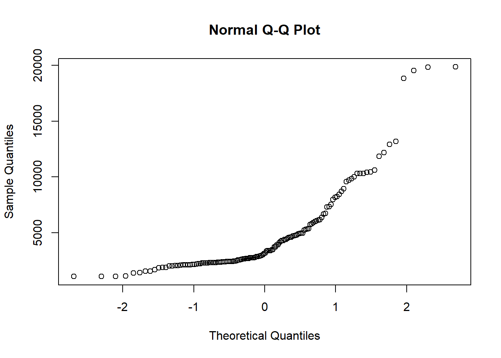

6306 DDS Case Study 2
Rashmi Patel
4/5/2021
Southern Methodist University 6306-Doing Data Science:Case Study 2
In this case study, we will do some analysis on the data given by the client: DDSAnalytics. The client is is interested in knowing the top influential factors that lead to attrition and high monthly income of an employee for their company.
For this analysis, we will do the following steps:
- Import and inspect the data
- Initial Data Cleaning
- Exploratory Data Analysis of the data
- Building the model
- Predicting the test data using the data
- Storing the predicted data in csv files
Load the required libraries
## Loading required package: carData## Warning: package 'randomForest' was built under R version 4.0.5## randomForest 4.6-14## Type rfNews() to see new features/changes/bug fixes.## corrplot 0.84 loaded## Warning: package 'leaps' was built under R version 4.0.5## Warning: package 'mlbench' was built under R version 4.0.5## Warning: package 'dplyr' was built under R version 4.0.4##
## Attaching package: 'dplyr'## The following object is masked from 'package:randomForest':
##
## combine## The following object is masked from 'package:car':
##
## recode## The following object is masked from 'package:MASS':
##
## select## The following objects are masked from 'package:stats':
##
## filter, lag## The following objects are masked from 'package:base':
##
## intersect, setdiff, setequal, union## -- Attaching packages --------------------------------------- tidyverse 1.3.0 --## v ggplot2 3.3.3 v purrr 0.3.4
## v tibble 3.1.0 v stringr 1.4.0
## v tidyr 1.1.3 v forcats 0.5.1
## v readr 1.4.0## Warning: package 'tibble' was built under R version 4.0.4## Warning: package 'tidyr' was built under R version 4.0.4## Warning: package 'forcats' was built under R version 4.0.4## -- Conflicts ------------------------------------------ tidyverse_conflicts() --
## x dplyr::combine() masks randomForest::combine()
## x dplyr::filter() masks stats::filter()
## x dplyr::lag() masks stats::lag()
## x ggplot2::margin() masks randomForest::margin()
## x dplyr::recode() masks car::recode()
## x dplyr::select() masks MASS::select()
## x purrr::some() masks car::some()## Loading required package: lattice##
## Attaching package: 'caret'## The following object is masked from 'package:purrr':
##
## lift## Warning: package 'DataExplorer' was built under R version 4.0.4## Warning: package 'gplots' was built under R version 4.0.4##
## Attaching package: 'gplots'## The following object is masked from 'package:stats':
##
## lowess## Warning: package 'olsrr' was built under R version 4.0.4##
## Attaching package: 'olsrr'## The following object is masked from 'package:MASS':
##
## cement## The following object is masked from 'package:datasets':
##
## rivers##
## Attaching package: 'ggpubr'## The following object is masked from 'package:cowplot':
##
## get_legend## Warning: package 'rstatix' was built under R version 4.0.4##
## Attaching package: 'rstatix'## The following object is masked from 'package:MASS':
##
## select## The following object is masked from 'package:stats':
##
## filter## Warning: package 'GGally' was built under R version 4.0.4## Registered S3 method overwritten by 'GGally':
## method from
## +.gg ggplot2##
## Attaching package: 'mice'## The following object is masked from 'package:stats':
##
## filter## The following objects are masked from 'package:base':
##
## cbind, rbind## Loading required package: colorspace## Loading required package: grid## VIM is ready to use.## Suggestions and bug-reports can be submitted at: https://github.com/statistikat/VIM/issues##
## Attaching package: 'VIM'## The following object is masked from 'package:datasets':
##
## sleep##
## Attaching package: 'plotly'## The following object is masked from 'package:ggplot2':
##
## last_plot## The following object is masked from 'package:MASS':
##
## select## The following object is masked from 'package:stats':
##
## filter## The following object is masked from 'package:graphics':
##
## layout## Warning: package 'e1071' was built under R version 4.0.4##
## Attaching package: 'maps'## The following object is masked from 'package:purrr':
##
## map## Warning: package 'ggthemes' was built under R version 4.0.4##
## Attaching package: 'ggthemes'## The following object is masked from 'package:cowplot':
##
## theme_map##
## Attaching package: 'table1'## The following objects are masked from 'package:base':
##
## units, units<-Import and inspect data
Read the data from GitHub
- The data is fetched from github account.
- The data has 36 variables and 870 entries.
- 27 continuous variables and 9 categorical variables.
- Plot the histogram for all the variables
case2 = read.csv("https://raw.githubusercontent.com/RashmiAPatel19/SMU_MSDS_6306_CaseStudy2_Spring2021/main/CaseStudy2-data.csv", header = TRUE)
head(case2)## ID Age Attrition BusinessTravel DailyRate Department
## 1 1 32 No Travel_Rarely 117 Sales
## 2 2 40 No Travel_Rarely 1308 Research & Development
## 3 3 35 No Travel_Frequently 200 Research & Development
## 4 4 32 No Travel_Rarely 801 Sales
## 5 5 24 No Travel_Frequently 567 Research & Development
## 6 6 27 No Travel_Frequently 294 Research & Development
## DistanceFromHome Education EducationField EmployeeCount EmployeeNumber
## 1 13 4 Life Sciences 1 859
## 2 14 3 Medical 1 1128
## 3 18 2 Life Sciences 1 1412
## 4 1 4 Marketing 1 2016
## 5 2 1 Technical Degree 1 1646
## 6 10 2 Life Sciences 1 733
## EnvironmentSatisfaction Gender HourlyRate JobInvolvement JobLevel
## 1 2 Male 73 3 2
## 2 3 Male 44 2 5
## 3 3 Male 60 3 3
## 4 3 Female 48 3 3
## 5 1 Female 32 3 1
## 6 4 Male 32 3 3
## JobRole JobSatisfaction MaritalStatus MonthlyIncome
## 1 Sales Executive 4 Divorced 4403
## 2 Research Director 3 Single 19626
## 3 Manufacturing Director 4 Single 9362
## 4 Sales Executive 4 Married 10422
## 5 Research Scientist 4 Single 3760
## 6 Manufacturing Director 1 Divorced 8793
## MonthlyRate NumCompaniesWorked Over18 OverTime PercentSalaryHike
## 1 9250 2 Y No 11
## 2 17544 1 Y No 14
## 3 19944 2 Y No 11
## 4 24032 1 Y No 19
## 5 17218 1 Y Yes 13
## 6 4809 1 Y No 21
## PerformanceRating RelationshipSatisfaction StandardHours StockOptionLevel
## 1 3 3 80 1
## 2 3 1 80 0
## 3 3 3 80 0
## 4 3 3 80 2
## 5 3 3 80 0
## 6 4 3 80 2
## TotalWorkingYears TrainingTimesLastYear WorkLifeBalance YearsAtCompany
## 1 8 3 2 5
## 2 21 2 4 20
## 3 10 2 3 2
## 4 14 3 3 14
## 5 6 2 3 6
## 6 9 4 2 9
## YearsInCurrentRole YearsSinceLastPromotion YearsWithCurrManager
## 1 2 0 3
## 2 7 4 9
## 3 2 2 2
## 4 10 5 7
## 5 3 1 3
## 6 7 1 7dim(case2)## [1] 870 36plot_histogram(case2)str(case2)## 'data.frame': 870 obs. of 36 variables:
## $ ID : int 1 2 3 4 5 6 7 8 9 10 ...
## $ Age : int 32 40 35 32 24 27 41 37 34 34 ...
## $ Attrition : chr "No" "No" "No" "No" ...
## $ BusinessTravel : chr "Travel_Rarely" "Travel_Rarely" "Travel_Frequently" "Travel_Rarely" ...
## $ DailyRate : int 117 1308 200 801 567 294 1283 309 1333 653 ...
## $ Department : chr "Sales" "Research & Development" "Research & Development" "Sales" ...
## $ DistanceFromHome : int 13 14 18 1 2 10 5 10 10 10 ...
## $ Education : int 4 3 2 4 1 2 5 4 4 4 ...
## $ EducationField : chr "Life Sciences" "Medical" "Life Sciences" "Marketing" ...
## $ EmployeeCount : int 1 1 1 1 1 1 1 1 1 1 ...
## $ EmployeeNumber : int 859 1128 1412 2016 1646 733 1448 1105 1055 1597 ...
## $ EnvironmentSatisfaction : int 2 3 3 3 1 4 2 4 3 4 ...
## $ Gender : chr "Male" "Male" "Male" "Female" ...
## $ HourlyRate : int 73 44 60 48 32 32 90 88 87 92 ...
## $ JobInvolvement : int 3 2 3 3 3 3 4 2 3 2 ...
## $ JobLevel : int 2 5 3 3 1 3 1 2 1 2 ...
## $ JobRole : chr "Sales Executive" "Research Director" "Manufacturing Director" "Sales Executive" ...
## $ JobSatisfaction : int 4 3 4 4 4 1 3 4 3 3 ...
## $ MaritalStatus : chr "Divorced" "Single" "Single" "Married" ...
## $ MonthlyIncome : int 4403 19626 9362 10422 3760 8793 2127 6694 2220 5063 ...
## $ MonthlyRate : int 9250 17544 19944 24032 17218 4809 5561 24223 18410 15332 ...
## $ NumCompaniesWorked : int 2 1 2 1 1 1 2 2 1 1 ...
## $ Over18 : chr "Y" "Y" "Y" "Y" ...
## $ OverTime : chr "No" "No" "No" "No" ...
## $ PercentSalaryHike : int 11 14 11 19 13 21 12 14 19 14 ...
## $ PerformanceRating : int 3 3 3 3 3 4 3 3 3 3 ...
## $ RelationshipSatisfaction: int 3 1 3 3 3 3 1 3 4 2 ...
## $ StandardHours : int 80 80 80 80 80 80 80 80 80 80 ...
## $ StockOptionLevel : int 1 0 0 2 0 2 0 3 1 1 ...
## $ TotalWorkingYears : int 8 21 10 14 6 9 7 8 1 8 ...
## $ TrainingTimesLastYear : int 3 2 2 3 2 4 5 5 2 3 ...
## $ WorkLifeBalance : int 2 4 3 3 3 2 2 3 3 2 ...
## $ YearsAtCompany : int 5 20 2 14 6 9 4 1 1 8 ...
## $ YearsInCurrentRole : int 2 7 2 10 3 7 2 0 1 2 ...
## $ YearsSinceLastPromotion : int 0 4 2 5 1 1 0 0 0 7 ...
## $ YearsWithCurrManager : int 3 9 2 7 3 7 3 0 0 7 ...numeric_var_case2=sum(sapply(case2[,1:36],is.numeric))Initial Data Cleaning
Check the variables with vague information and remove the variables
- The variable Over18 has all Y in it as every employee is above 18 years, so we will remove the column.
- The variable EmployeeCount has all 1 in its row, so we will remove the column.
- Since the EmployeeNumber is unique for every employee it will not contribute to the model, so we will remove this column.
- The variable StandardHours, has all values equal to 80, so we will remove it because it will not contribute anything to the model.
- The variable Performance Rating has little vague information in it just 3 and 4, so we will remove it.
- The variables DailyRate, MonthlyRate, and HourlyRate has no meaning as they are all same in sense and related to monthly income.
- After removing these variables we are left with 27 variables and 870 entries.
# looking for correlation between DailyRate, HourlyRate, MonthlyRate, and Monthly income
income=data.frame(DailyRate=case2$DailyRate,MonthlyIncome=case2$MonthlyIncome,
HourlyRate=case2$HourlyRate,MonthlyRate=case2$MonthlyRate)
dim(income)## [1] 870 4corrplot(cor(income), order = "alphabet",
col = brewer.pal(n = 8, name = "RdBu"),method="number")# Checking if the some employees are ages: But no employees were found under 18, so we will remove this variable
unique(case2$Over18)## [1] "Y"# Checking for the unique employee count: But every employee count has value=1, so we will remove this variable
unique(case2$EmployeeCount)## [1] 1#Checking the employee number: But no duplicate values were found, so we will remove this variable
unique(case2$EmployeeNumber)## [1] 859 1128 1412 2016 1646 733 1448 1105 1055 1597 1866 1858 845 508 1314
## [16] 947 966 487 1755 1903 699 712 663 1613 969 1267 1582 1157 1968 791
## [31] 195 1698 363 1172 1966 359 1639 1733 1338 1135 1824 783 1674 1595 1270
## [46] 1480 1734 1119 614 218 662 1423 1246 972 98 1772 752 1586 380 1273
## [61] 967 1312 1996 1839 1219 21 691 1982 88 391 1999 1469 261 1158 1319
## [76] 57 1535 1602 302 1974 1033 1728 1997 474 1294 1032 728 1010 56 38
## [91] 556 1165 4 1587 226 387 1527 139 1513 1447 1434 1453 523 705 1472
## [106] 1177 208 1973 1821 2038 1154 976 1118 771 1218 904 1240 2053 227 1383
## [121] 742 2021 864 709 388 1962 33 1888 1402 1863 1669 1757 551 1654 448
## [136] 807 816 1013 932 152 1373 1308 1007 378 1375 469 252 1560 1173 1622
## [151] 650 722 420 1814 934 475 1986 1127 1126 1242 104 1082 677 347 406
## [166] 922 1655 612 630 1120 747 1934 624 1268 981 1131 787 1053 207 230
## [181] 1182 1355 171 1525 602 377 1653 1676 385 129 441 1833 550 595 1407
## [196] 353 116 1138 36 643 986 96 830 741 330 913 1188 282 197 176
## [211] 2034 1029 715 827 700 1474 634 1900 194 1275 786 684 1681 1506 1940
## [226] 1989 53 284 128 1661 1635 49 1716 303 158 970 2031 679 1987 1656
## [241] 605 1306 94 1439 1150 912 462 2013 1392 625 1994 990 834 1842 1468
## [256] 1813 399 1428 1882 1992 1379 1522 325 974 150 14 1485 1692 1970 1084
## [271] 1845 1658 1864 1436 254 1191 511 430 142 1501 1706 957 1822 438 1152
## [286] 1549 1878 18 154 805 996 419 260 2000 1550 2003 256 147 991 440
## [301] 889 74 1694 2008 977 888 1030 1115 1034 707 1580 601 1537 211 732
## [316] 1003 216 1981 1390 1269 951 683 861 1080 1026 933 1608 1998 1937 1408
## [331] 1677 291 1792 725 140 1101 1137 1103 1113 54 51 1296 1099 680 1211
## [346] 1975 1140 384 1206 762 1911 416 1180 1552 1815 1478 164 565 78 373
## [361] 259 1928 1038 352 1336 532 1285 1548 1592 439 1011 567 425 1640 1680
## [376] 1539 1042 1943 1202 1004 447 177 1466 113 1081 950 314 611 1710 478
## [391] 808 72 1948 573 875 426 575 1467 2026 1496 548 270 1856 1651 856
## [406] 661 1784 1221 23 843 878 1708 61 1853 555 1804 571 407 1196 564
## [421] 110 529 163 1368 1387 1076 1482 379 331 339 437 1340 1420 1762 954
## [436] 458 828 1952 47 724 1235 1709 364 1683 1789 1438 1668 1803 79 1612
## [451] 2009 1475 1797 1924 664 1740 1673 120 1441 1435 591 1659 174 1736 1767
## [466] 24 1556 97 1037 250 1931 1868 101 192 1102 62 868 618 1409 2017
## [481] 1954 895 1932 241 165 1 1876 16 64 757 396 1317 1650 1529 1880
## [496] 851 544 403 13 1929 1360 19 1691 20 1443 1555 485 1391 311 58
## [511] 2041 1397 1720 73 484 408 952 1768 1311 1907 838 1604 86 638 309
## [526] 1050 240 1251 105 161 1088 1585 824 1955 454 262 1125 470 554 1171
## [541] 1224 1798 224 271 804 1701 944 832 421 1049 734 869 1890 945 287
## [556] 656 578 649 836 476 238 1837 1001 1979 806 2020 362 1562 936 1005
## [571] 1909 923 1927 1823 641 77 1961 1471 1633 1260 1358 468 1766 846 40
## [586] 281 107 27 1411 75 1605 1489 1486 1617 1628 855 899 521 2064 45
## [601] 1495 1574 1015 1192 1752 730 91 382 1417 1044 1369 616 328 959 982
## [616] 1696 1502 68 2062 704 137 987 797 2040 1504 1259 1445 461 1096 717
## [631] 1873 1950 1036 155 451 1185 1109 1951 639 667 11 1829 1074 1905 1210
## [646] 215 1156 1718 100 1649 1564 1233 1166 473 593 390 296 1520 466 85
## [661] 772 579 1732 1028 60 1753 312 584 1309 1250 102 1670 1507 881 1647
## [676] 1280 823 1985 2025 941 885 525 1682 223 221 581 1421 305 243 1805
## [691] 1563 376 477 514 1700 925 1644 304 1624 1217 1865 1163 1243 1818 321
## [706] 599 1830 1461 1782 905 1321 568 1258 481 789 1714 1179 1097 1667 1121
## [721] 689 1631 1431 1073 1860 350 900 277 622 169 920 445 1944 631 1577
## [736] 1898 2056 1254 975 652 183 613 1543 1735 2018 1551 1844 1184 1725 242
## [751] 1077 1331 1606 1869 126 744 942 1473 1687 1277 994 820 1329 1040 847
## [766] 1611 1085 615 1228 1117 446 244 343 90 1547 784 1499 1190 1693 2027
## [781] 248 721 910 1220 1731 1430 1786 433 1770 1303 1509 247 1638 83 275
## [796] 702 372 1783 1248 1664 52 604 429 1100 132 1790 1399 217 1729 233
## [811] 239 1415 507 1625 893 1238 833 817 198 1933 1607 349 2035 1160 1614
## [826] 1069 1761 1281 1760 644 1002 167 1216 1193 1278 626 1394 621 1827 1867
## [841] 405 1419 867 1344 1779 536 201 417 492 1918 175 41 15 412 1886
## [856] 1492 297 442 200 1295 1297 1293 502 746 1465 1363 333 1503 1195 269# Checking he unique values in standard hours: But no values other than 80 found, so we will variable this variable
unique(case2$StandardHours)## [1] 80# Checking the unique values of Performance rating: But the the values were kind of vague how it is assigned to employees,so we will remove this variable
unique(case2$PerformanceRating)## [1] 3 4# Removing the DailyRate, HourlyRate, MonthlyRate because the the meaning is unclear
case2=select(case2,-c(ID,Over18, EmployeeCount, StandardHours, EmployeeNumber, DailyRate, HourlyRate, MonthlyRate, PerformanceRating))
dim(case2)## [1] 870 27colnames(case2)## [1] "Age" "Attrition"
## [3] "BusinessTravel" "Department"
## [5] "DistanceFromHome" "Education"
## [7] "EducationField" "EnvironmentSatisfaction"
## [9] "Gender" "JobInvolvement"
## [11] "JobLevel" "JobRole"
## [13] "JobSatisfaction" "MaritalStatus"
## [15] "MonthlyIncome" "NumCompaniesWorked"
## [17] "OverTime" "PercentSalaryHike"
## [19] "RelationshipSatisfaction" "StockOptionLevel"
## [21] "TotalWorkingYears" "TrainingTimesLastYear"
## [23] "WorkLifeBalance" "YearsAtCompany"
## [25] "YearsInCurrentRole" "YearsSinceLastPromotion"
## [27] "YearsWithCurrManager"Plot histogram for analyzing Attrition
- We have plotted the histogram of Attrition to know about the Attrition in this data. We found that 730 employees says No for Attrition in this data and 140 employees says yes to Attrition in this data..
ggplot(case2,aes(x=Attrition,fill=Attrition))+geom_bar()+
geom_text(aes(label=..count..),stat="count",position=position_stack(0.5))+
xlab("Attrition")+ylab("Count")+ggtitle("Current Employees Review on Attrition")Check the missing values and handling the missing values.
- We checked for missing values in the data and no missing values were found.
- We converted the character variables into integer.
- We then created a correlation plot to see the correlation between variables
# Check for missing values
table(is.na(case2))##
## FALSE
## 23490# Check for the total number of columns that are character and numeric in type
numeric_var_case2=sum(sapply(case2[,1:27],is.numeric))
numeric_var_case2## [1] 19char_var_case2=sum(sapply(case2[,1:27],is.character))
char_var_case2## [1] 8# Check for the names of columns that are character and numeric in type
numeric_varname_case2=which(sapply(case2[,1:27],is.numeric))
numeric_varname_case2## Age DistanceFromHome Education
## 1 5 6
## EnvironmentSatisfaction JobInvolvement JobLevel
## 8 10 11
## JobSatisfaction MonthlyIncome NumCompaniesWorked
## 13 15 16
## PercentSalaryHike RelationshipSatisfaction StockOptionLevel
## 18 19 20
## TotalWorkingYears TrainingTimesLastYear WorkLifeBalance
## 21 22 23
## YearsAtCompany YearsInCurrentRole YearsSinceLastPromotion
## 24 25 26
## YearsWithCurrManager
## 27char_varname_case2=which(sapply(case2[,1:27],is.character))
char_varname_case2## Attrition BusinessTravel Department EducationField Gender
## 2 3 4 7 9
## JobRole MaritalStatus OverTime
## 12 14 17case2_numeric=case2
var_facs <- c("Attrition","EducationField","MaritalStatus","BusinessTravel","JobRole", "Department", "OverTime", "Gender")
case2_numeric[,var_facs] <- lapply(case2[,var_facs] , factor, ordered = FALSE)
case2_numeric$JobRole <- as.integer(case2_numeric$JobRole)
case2_numeric$Department <- as.integer(case2_numeric$Department)
case2_numeric$MaritalStatus <- as.integer(case2_numeric$MaritalStatus)
case2_numeric$BusinessTravel <- as.integer(case2_numeric$BusinessTravel)
case2_numeric$Education <- as.integer(case2_numeric$Education)
case2_numeric$Attrition <- as.integer(case2_numeric$Attrition)
case2_numeric$OverTime <- as.integer(case2_numeric$OverTime)
case2_numeric$Gender <- as.integer(case2_numeric$Gender)
case2_numeric$EducationField <- as.integer(case2_numeric$EducationField)
str(case2_numeric)## 'data.frame': 870 obs. of 27 variables:
## $ Age : int 32 40 35 32 24 27 41 37 34 34 ...
## $ Attrition : int 1 1 1 1 1 1 1 1 1 1 ...
## $ BusinessTravel : int 3 3 2 3 2 2 3 3 3 2 ...
## $ Department : int 3 2 2 3 2 2 2 3 3 2 ...
## $ DistanceFromHome : int 13 14 18 1 2 10 5 10 10 10 ...
## $ Education : int 4 3 2 4 1 2 5 4 4 4 ...
## $ EducationField : int 2 4 2 3 6 2 4 2 2 6 ...
## $ EnvironmentSatisfaction : int 2 3 3 3 1 4 2 4 3 4 ...
## $ Gender : int 2 2 2 1 1 2 2 1 1 2 ...
## $ JobInvolvement : int 3 2 3 3 3 3 4 2 3 2 ...
## $ JobLevel : int 2 5 3 3 1 3 1 2 1 2 ...
## $ JobRole : int 8 6 5 8 7 5 7 8 9 1 ...
## $ JobSatisfaction : int 4 3 4 4 4 1 3 4 3 3 ...
## $ MaritalStatus : int 1 3 3 2 3 1 2 1 2 2 ...
## $ MonthlyIncome : int 4403 19626 9362 10422 3760 8793 2127 6694 2220 5063 ...
## $ NumCompaniesWorked : int 2 1 2 1 1 1 2 2 1 1 ...
## $ OverTime : int 1 1 1 1 2 1 2 2 2 1 ...
## $ PercentSalaryHike : int 11 14 11 19 13 21 12 14 19 14 ...
## $ RelationshipSatisfaction: int 3 1 3 3 3 3 1 3 4 2 ...
## $ StockOptionLevel : int 1 0 0 2 0 2 0 3 1 1 ...
## $ TotalWorkingYears : int 8 21 10 14 6 9 7 8 1 8 ...
## $ TrainingTimesLastYear : int 3 2 2 3 2 4 5 5 2 3 ...
## $ WorkLifeBalance : int 2 4 3 3 3 2 2 3 3 2 ...
## $ YearsAtCompany : int 5 20 2 14 6 9 4 1 1 8 ...
## $ YearsInCurrentRole : int 2 7 2 10 3 7 2 0 1 2 ...
## $ YearsSinceLastPromotion : int 0 4 2 5 1 1 0 0 0 7 ...
## $ YearsWithCurrManager : int 3 9 2 7 3 7 3 0 0 7 ...Categorize the Monthly Income in “Under 2500, 2500-5000, 5000-7500, Above 7500”
We decided to categorize the monthly income in 4 parts and create new column in the data:
Under 2500 dollars
2500 to 5000 dollars
5000 to 7500 dollars
Above 7500 dollars
After creating new column we have 28 variables and 870 entries.
summary(case2_numeric$MonthlyIncome)## Min. 1st Qu. Median Mean 3rd Qu. Max.
## 1081 2840 4946 6390 8182 19999case2_numeric$MonthlyIncome.categorize=cut(case2_numeric$MonthlyIncome,
breaks = c(0,2500,5000,7500,999999),
labels = c("Under_2500","2500-5000","5000-7500","Above_7500")
)
dim(case2_numeric)## [1] 870 28case2$MonthlyIncome.categorize=case2_numeric$MonthlyIncome.categorize
colnames(case2)## [1] "Age" "Attrition"
## [3] "BusinessTravel" "Department"
## [5] "DistanceFromHome" "Education"
## [7] "EducationField" "EnvironmentSatisfaction"
## [9] "Gender" "JobInvolvement"
## [11] "JobLevel" "JobRole"
## [13] "JobSatisfaction" "MaritalStatus"
## [15] "MonthlyIncome" "NumCompaniesWorked"
## [17] "OverTime" "PercentSalaryHike"
## [19] "RelationshipSatisfaction" "StockOptionLevel"
## [21] "TotalWorkingYears" "TrainingTimesLastYear"
## [23] "WorkLifeBalance" "YearsAtCompany"
## [25] "YearsInCurrentRole" "YearsSinceLastPromotion"
## [27] "YearsWithCurrManager" "MonthlyIncome.categorize"Exploratory Data Analysis
Plot for Monthly Income by Total Working Years
We decided to categorize the total number of working years in the company:
- Less than 5 Yrs for 0 to <5 years
- Less than 15 Yrs for 0 to <15 years
- Less than 30 Yrs for 0 to <30 years
- Less than 40 Yrs for 0 to <40 years
unique(case2$TotalWorkingYears)## [1] 8 21 10 14 6 9 7 1 3 17 13 12 26 15 5 28 16 36 37 24 0 32 11 27 23
## [26] 18 30 20 22 4 35 2 25 33 29 19 34 31 40max(case2$TotalWorkingYears)## [1] 40min(case2$TotalWorkingYears)## [1] 0median(case2$TotalWorkingYears)## [1] 10table(is.na(case2$TotalWorkingYears))##
## FALSE
## 870cut(case2$TotalWorkingYears,
breaks = c(-1,5,15,30,100),
labels = c("Less than 5 Yrs","Less than 15 Yrs","Less than 30 Yrs","Less than 40 Yrs")
) -> case2$WorkingYears
summary(case2$WorkingYears)## Less than 5 Yrs Less than 15 Yrs Less than 30 Yrs Less than 40 Yrs
## 186 489 170 25table(is.na(case2$WorkingYears))##
## FALSE
## 870Coorelation plot for numeric variables and categorical variables
We can see the highest correlation that exists for MonthlyIncome very much align to common sense:
- MonthlyIncome & JobLevel = 0.95
- MonthlyIncome & TotalWorkingYears = 0.78
- MonthlyIncome & YearsAtCompany = 0.49
- MonthlyIncome & YearsInCurrentRole = 0.36
We cannot see any correlation between categorical variables other than JobRole and Department
corrplot(cor(case2_numeric[,numeric_varname_case2]), order = "alphabet",method="number",
col = brewer.pal(n = 8, name = "RdBu"))corrplot(cor(case2_numeric[,char_varname_case2]), order = "alphabet",method="number",
col = brewer.pal(n = 8, name = "RdBu"))Plot some of the numeric variables against MonthlyIncome
We observe the following:
- Evidence of a strong relationship with JobLevel
- Evidence of a moderate relationship with TotalWorkingYears
- Evidence of a moderate relationship with YearsAtCompany
- Evidence of a moderate relationship with YearsInCurrentRole
ggplot(case2,aes(x=JobLevel,y=MonthlyIncome,col=JobLevel))+geom_point()+
geom_smooth(method="lm")+
xlab("Job Level")+ylab("MonthlyIncome")+ggtitle("Plot for Monthly Income versus Job Level")## `geom_smooth()` using formula 'y ~ x'
summary(lm(MonthlyIncome~JobLevel,data=case2))##
## Call:
## lm(formula = MonthlyIncome ~ JobLevel, data = case2)
##
## Residuals:
## Min 1Q Median 3Q Max
## -5037.1 -928.2 80.1 697.1 3723.6
##
## Coefficients:
## Estimate Std. Error t value Pr(>|t|)
## (Intercept) -1793.93 101.68 -17.64 <2e-16 ***
## JobLevel 4013.67 43.98 91.26 <2e-16 ***
## ---
## Signif. codes: 0 '***' 0.001 '**' 0.01 '*' 0.05 '.' 0.1 ' ' 1
##
## Residual standard error: 1413 on 868 degrees of freedom
## Multiple R-squared: 0.9056, Adjusted R-squared: 0.9055
## F-statistic: 8329 on 1 and 868 DF, p-value: < 2.2e-16ggplot(case2,aes(x=TotalWorkingYears,y=MonthlyIncome,col=TotalWorkingYears))+geom_point()+
geom_smooth(method="lm")+
xlab("Total Working Years")+ylab("MonthlyIncome")+ggtitle("Plot for Monthly Income versus Total Working Years")## `geom_smooth()` using formula 'y ~ x'summary(lm(MonthlyIncome~TotalWorkingYears,data=case2))##
## Call:
## lm(formula = MonthlyIncome ~ TotalWorkingYears, data = case2)
##
## Residuals:
## Min 1Q Median 3Q Max
## -9868.1 -1703.7 -44.5 1453.1 11009.7
##
## Coefficients:
## Estimate Std. Error t value Pr(>|t|)
## (Intercept) 1124.90 174.19 6.458 1.77e-10 ***
## TotalWorkingYears 476.38 13.04 36.544 < 2e-16 ***
## ---
## Signif. codes: 0 '***' 0.001 '**' 0.01 '*' 0.05 '.' 0.1 ' ' 1
##
## Residual standard error: 2887 on 868 degrees of freedom
## Multiple R-squared: 0.6061, Adjusted R-squared: 0.6056
## F-statistic: 1335 on 1 and 868 DF, p-value: < 2.2e-16ggplot(case2,aes(x=YearsAtCompany,y=MonthlyIncome,col=YearsAtCompany))+geom_point()+
geom_smooth(method="lm")+
xlab("Years At Company")+ylab("MonthlyIncome")+ggtitle("Plot for Monthly Income versus Years At Company")## `geom_smooth()` using formula 'y ~ x'summary(lm(MonthlyIncome~YearsAtCompany,data=case2))##
## Call:
## lm(formula = MonthlyIncome ~ YearsAtCompany, data = case2)
##
## Residuals:
## Min 1Q Median 3Q Max
## -9149 -2458 -1198 1364 15460
##
## Coefficients:
## Estimate Std. Error t value Pr(>|t|)
## (Intercept) 3777.96 207.73 18.19 <2e-16 ***
## YearsAtCompany 375.22 22.57 16.62 <2e-16 ***
## ---
## Signif. codes: 0 '***' 0.001 '**' 0.01 '*' 0.05 '.' 0.1 ' ' 1
##
## Residual standard error: 4007 on 868 degrees of freedom
## Multiple R-squared: 0.2415, Adjusted R-squared: 0.2406
## F-statistic: 276.3 on 1 and 868 DF, p-value: < 2.2e-16ggplot(case2,aes(x=YearsInCurrentRole,y=MonthlyIncome,col=YearsInCurrentRole))+geom_point()+
geom_smooth(method="lm")+
xlab("Years In Current Role")+ylab("MonthlyIncome")+ggtitle("Plot for Monthly Income versus Years In Current Role")## `geom_smooth()` using formula 'y ~ x'summary(lm(MonthlyIncome~YearsInCurrentRole,data=case2))##
## Call:
## lm(formula = MonthlyIncome ~ YearsInCurrentRole, data = case2)
##
## Residuals:
## Min 1Q Median 3Q Max
## -7839 -2755 -1377 1188 15145
##
## Coefficients:
## Estimate Std. Error t value Pr(>|t|)
## (Intercept) 4468.23 222.24 20.11 <2e-16 ***
## YearsInCurrentRole 457.13 39.97 11.44 <2e-16 ***
## ---
## Signif. codes: 0 '***' 0.001 '**' 0.01 '*' 0.05 '.' 0.1 ' ' 1
##
## Residual standard error: 4289 on 868 degrees of freedom
## Multiple R-squared: 0.1309, Adjusted R-squared: 0.1299
## F-statistic: 130.8 on 1 and 868 DF, p-value: < 2.2e-16Plot for checking normality for Monthly Income and Attrition
We split the income values into separate vectors and run some exploratory analysis on them. We see that there are about 5 times as many employees who stay vs those who leave. It also appears the mean MonthlyIncome for employees who leave is somewhat lower:
- $4764.79 for employees who leave
- $6702 for those that stay
There is also greater variance in between the two groups as well: * The “Yes” group having a standard deviation of $3786.389 * The “No” group having a standard deviation of $4675.472
attrition.No.monthlyIncome=case2%>%dplyr::select(Attrition,MonthlyIncome)%>%filter(Attrition=="No")
dim(attrition.No.monthlyIncome)## [1] 730 2attrition.No.monthlyIncome%>%summarise(Mean=mean(attrition.No.monthlyIncome$MonthlyIncome),
Median=median(attrition.No.monthlyIncome$MonthlyIncome),
Standard.Deviation=sd(attrition.No.monthlyIncome$MonthlyIncome),
IQR=IQR(attrition.No.monthlyIncome$MonthlyIncome))## Mean Median Standard.Deviation IQR
## 1 6702 5208.5 4675.472 5574.5attrition.Yes.monthlyIncome=case2%>%dplyr::select(Attrition,MonthlyIncome)%>%filter(Attrition=="Yes")
dim(attrition.Yes.monthlyIncome)## [1] 140 2attrition.Yes.monthlyIncome%>%summarise(Mean=mean(attrition.Yes.monthlyIncome$MonthlyIncome),
Median=median(attrition.Yes.monthlyIncome$MonthlyIncome),
Standard.Deviation=sd(attrition.Yes.monthlyIncome$MonthlyIncome),
IQR=IQR(attrition.Yes.monthlyIncome$MonthlyIncome))## Mean Median Standard.Deviation IQR
## 1 4764.786 3171 3786.389 3497.25Checking assumptions for Attrition and MonthlyIncome and doing T-test
Visually looking at the histogram and qqplot, it seems like the Attrition data has some right skewness.
Visually looking at the histogram and qqplot, it seems like the Attrition data has some right skewness.
Because both distributions differ significantly from normality we log transform them in order to do a t-test and see if there is evidence that the distributions differ significantly from each other.
The QQ Plot of the log transformed MonthlyIncome for each group shows much better adherence to normality, and brings the variance of each group much closer together.
The T-test itself shows there is a significant difference between the Monthly Incomes of “Yes” vs “No” attrition groups, p-value < 0.0001. This is strong evidence that MonthlyIncome has an effect on Attrition
ggplot(attrition.No.monthlyIncome,aes(x=MonthlyIncome))+geom_histogram()## `stat_bin()` using `bins = 30`. Pick better value with `binwidth`.qqnorm(attrition.No.monthlyIncome$MonthlyIncome)ggplot(attrition.No.monthlyIncome,aes(x=log(MonthlyIncome)))+geom_histogram()## `stat_bin()` using `bins = 30`. Pick better value with `binwidth`.qqnorm(log(attrition.No.monthlyIncome$MonthlyIncome))ggplot(attrition.Yes.monthlyIncome,aes(x=log(MonthlyIncome)))+geom_histogram()## `stat_bin()` using `bins = 30`. Pick better value with `binwidth`.qqnorm(attrition.Yes.monthlyIncome$MonthlyIncome)
ggplot(attrition.Yes.monthlyIncome,aes(x=MonthlyIncome))+geom_histogram()## `stat_bin()` using `bins = 30`. Pick better value with `binwidth`.qqnorm(log(attrition.Yes.monthlyIncome$MonthlyIncome))
t.test(log(attrition.Yes.monthlyIncome$MonthlyIncome), log(attrition.No.monthlyIncome$MonthlyIncome), var.equal = F) ##
## Welch Two Sample t-test
##
## data: log(attrition.Yes.monthlyIncome$MonthlyIncome) and log(attrition.No.monthlyIncome$MonthlyIncome)
## t = -5.9593, df = 195.72, p-value = 1.16e-08
## alternative hypothesis: true difference in means is not equal to 0
## 95 percent confidence interval:
## -0.4756331 -0.2391013
## sample estimates:
## mean of x mean of y
## 8.237820 8.595187Model for MonthlyIncome
Removing the self-generated variables and Attrition from the dataframe and creating the model for Monthly income
We will create a random forest model for looking at the top influential variables among the 26 variables which leads to higher Monthly Income after removing the self-generated variables and Attrition.
Salary
Top 5 most influential were:
- JobLevel
- TotalWorkingYears
- JobRole
- Age
- YearsAtCompany
dim(case2)## [1] 870 29colnames(case2)## [1] "Age" "Attrition"
## [3] "BusinessTravel" "Department"
## [5] "DistanceFromHome" "Education"
## [7] "EducationField" "EnvironmentSatisfaction"
## [9] "Gender" "JobInvolvement"
## [11] "JobLevel" "JobRole"
## [13] "JobSatisfaction" "MaritalStatus"
## [15] "MonthlyIncome" "NumCompaniesWorked"
## [17] "OverTime" "PercentSalaryHike"
## [19] "RelationshipSatisfaction" "StockOptionLevel"
## [21] "TotalWorkingYears" "TrainingTimesLastYear"
## [23] "WorkLifeBalance" "YearsAtCompany"
## [25] "YearsInCurrentRole" "YearsSinceLastPromotion"
## [27] "YearsWithCurrManager" "MonthlyIncome.categorize"
## [29] "WorkingYears"case2[,-c(2,28,29,30,31)] -> case2_salary
case2_salary_features <- randomForest(MonthlyIncome ~.,
data = case2_salary,
importance = TRUE)
colnames(case2_salary) ## [1] "Age" "BusinessTravel"
## [3] "Department" "DistanceFromHome"
## [5] "Education" "EducationField"
## [7] "EnvironmentSatisfaction" "Gender"
## [9] "JobInvolvement" "JobLevel"
## [11] "JobRole" "JobSatisfaction"
## [13] "MaritalStatus" "MonthlyIncome"
## [15] "NumCompaniesWorked" "OverTime"
## [17] "PercentSalaryHike" "RelationshipSatisfaction"
## [19] "StockOptionLevel" "TotalWorkingYears"
## [21] "TrainingTimesLastYear" "WorkLifeBalance"
## [23] "YearsAtCompany" "YearsInCurrentRole"
## [25] "YearsSinceLastPromotion" "YearsWithCurrManager"varImpPlot(case2_salary_features)importance(case2_salary_features)## %IncMSE IncNodePurity
## Age 10.771026353 882184588
## BusinessTravel 1.572063426 42965783
## Department 8.280499262 91810723
## DistanceFromHome 0.219893060 137593054
## Education 1.860479192 98779738
## EducationField 0.044653334 61697778
## EnvironmentSatisfaction 2.619442069 67382715
## Gender -0.875897528 24975656
## JobInvolvement 0.317556986 51888217
## JobLevel 54.305017876 9007675559
## JobRole 17.457167426 814175230
## JobSatisfaction 0.105516634 60124339
## MaritalStatus -0.999067967 37503092
## NumCompaniesWorked 5.459743257 167581518
## OverTime -1.830560249 21293900
## PercentSalaryHike 2.213572496 109137642
## RelationshipSatisfaction 0.875597872 49894486
## StockOptionLevel -0.994720384 36102147
## TotalWorkingYears 23.193793134 4628440342
## TrainingTimesLastYear -1.530220616 73453383
## WorkLifeBalance -0.004235877 38901366
## YearsAtCompany 9.839756267 928664945
## YearsInCurrentRole 7.655965649 280901129
## YearsSinceLastPromotion 1.554408650 176566715
## YearsWithCurrManager 3.565176177 209154029Looking at Top 5 infuential variables correlation with MonthlyIncome
Looking at the correlation plot for the top 5 influential factors that leads to higher monthly income.
- MonthlyIncome & JobLevel = 0.95(strong relationship)
- MonthlyIncome & TotalWorkingYears = 0.78(Moderate relationship)
- MonthlyIncome & JobRole = -0.08(Moderate relationship)
- MonthlyIncome & YearsAtCompany = 0.49(Moderate relationship)
- MonthlyIncome & Age = 0.48(Moderate relationship)
income.totalYears=data.frame(TotalWorkingYears=case2$TotalWorkingYears,MonthlyIncome=case2$MonthlyIncome,
JobRole=case2_numeric$JobRole,JobLevel=case2$JobLevel,
Age=case2$Age,YearsAtCompany=case2$YearsAtCompany)
dim(income.totalYears)## [1] 870 6corrplot(cor(income.totalYears), order = "alphabet",
col = brewer.pal(n = 8, name = "RdBu"),method="number")PLot for Job Level by Monthly Income
We have plotted the bar graph to see the monthly income of employees based on their job level in the company.
- Visually looking at the graph it seems like the all employees at Job Level=1 have the earning less than 5000.
- With job level=1, approximately 37.81% of all the employees at the company are earning less than 5000.
- Approximately 97.24% of the employees having income under 2500 are at Job Level=1
- Only 15.67% of the employees earning above 7500 are at Job Level=5. No employees at job level=5 are earning below 7500.
ggplot(case2,aes(x=JobLevel,fill=MonthlyIncome.categorize))+geom_bar(position="stack",stat="count")+
theme(axis.text.x = element_text(angle = 90))+geom_text(aes(label=..count..),stat="count",position=position_stack(0.5))+facet_grid(row=vars(MonthlyIncome.categorize))+
xlab("Job Level of employees")+ylab("Monthly Income of employees")+ggtitle("Plot for Monthly Income versus Job level")colnames(case2)## [1] "Age" "Attrition"
## [3] "BusinessTravel" "Department"
## [5] "DistanceFromHome" "Education"
## [7] "EducationField" "EnvironmentSatisfaction"
## [9] "Gender" "JobInvolvement"
## [11] "JobLevel" "JobRole"
## [13] "JobSatisfaction" "MaritalStatus"
## [15] "MonthlyIncome" "NumCompaniesWorked"
## [17] "OverTime" "PercentSalaryHike"
## [19] "RelationshipSatisfaction" "StockOptionLevel"
## [21] "TotalWorkingYears" "TrainingTimesLastYear"
## [23] "WorkLifeBalance" "YearsAtCompany"
## [25] "YearsInCurrentRole" "YearsSinceLastPromotion"
## [27] "YearsWithCurrManager" "MonthlyIncome.categorize"
## [29] "WorkingYears"Plot for Monthly Income by Total Working Years
We have plotted the bar graph to see the monthly income of employees based on their total working years in the company.
- We found that only 10.59% of the employees earning above 7500 are working in the company for more than 30 years. None of the employees working for more than 30 years have income less than 7500.
- We also found that none of the employees are earning above 5000 who have been working less than 5 years in the company.
ggplot(case2,aes(fill=MonthlyIncome.categorize,x=WorkingYears))+geom_bar(position="stack",stat="count",na.rm = TRUE)+
facet_grid(row=vars(MonthlyIncome.categorize))+
theme(axis.text.x = element_text(angle = 90))+geom_text(aes(label=..count..),stat="count",position=position_stack(0.5))+
xlab("Total Working Years of employees")+ylab("Monthly Income of employees")+ggtitle("Plot for Monthly Income versus Total Working Years")Plot for Monthly Income by Job Role
We have plotted the bar graph to see the Monthly income of employees based on their job role in the company.
- We found that only 27.12% of the 870 employees are earning above 7500.
- We also found that every Research Director and Managers in the company have the highest pay which is over 7500.
- We see that no sales representative earn over 90k, in which 98.11% earn below 5000 and only 1.89% employees earn 5000 to 7500.
- No healthcare representative, manager, research director, sales executive and Manufacturing director and Research Scientist earn below 2500.
- No Laboratory technician and sales representative are earning above $7500 per month.
ggplot(case2,aes(fill=MonthlyIncome.categorize,x=JobRole))+geom_bar(position="stack",stat="count",na.rm = TRUE)+
facet_grid(row=vars(MonthlyIncome.categorize))+
theme(axis.text.x = element_text(angle = 90))+geom_text(aes(label=..count..),stat="count",position=position_stack(0.5))+
xlab("Job Role of employees")+ylab("Monthly Income of employees")+ggtitle("Plot for Monthly Income versus Job Role")Plot for Years At Company by MonthlyIncome
Visually looking at the graph it seems like the more than 50% of the total employees are working at the comapny for less than 5 years.
Approximately 27.19% of the employees working at the company for less than 5 years are likely to earn below 2500.
Only 3.38% of the employees earning above 7500 are working at the company for more than 30 years.
case2$CompanyYears=cut(case2$YearsAtCompany,
breaks = c(-1,5,15,30,100),
labels = c("Less than 5 Yrs","Less than 15 Yrs","Less than 30 Yrs","Less than 40 Yrs")
)
ggplot(case2,aes(fill=MonthlyIncome.categorize,x=CompanyYears))+geom_bar(position="stack",stat="count",na.rm = TRUE)+
theme(axis.text.x = element_text(angle=90))+geom_text(aes(label=..count..),stat="count",position=position_stack(0.5))+
facet_grid(row=vars(MonthlyIncome.categorize))+
xlab(" Years at company of employees")+ylab("Monthly Income of employees")+ggtitle("Plot for Monthly Income versus Years at company")Plot for Age by Monthly Income
Only 7.65% of the employees having 19 to 30 years age earn above 7500 and approximately 31.53% of the employees earn below 2500.
We found that 57.33% of the employees having age 50 to 60 years are earning above 7500.
case2$AgeEmp=cut(case2$Age,
breaks = c(17,30,40,50,60,100),
labels = c("19 to 30 years"," 30 to 40 years","40 to 50 years","50 to 60 years","Above 60 years")
)
ggplot(case2,aes(fill=MonthlyIncome.categorize,x=AgeEmp))+geom_bar(position="stack",stat="count",na.rm = TRUE)+
theme(axis.text.x = element_text(angle=90))+geom_text(aes(label=..count..),stat="count",position=position_stack(0.5))+
facet_grid(row=vars(MonthlyIncome.categorize))+ xlab(" Age of employees")+ylab("Monthly Income of employees")+ggtitle("Plot for Monthly Income versus Age")colnames(case2)## [1] "Age" "Attrition"
## [3] "BusinessTravel" "Department"
## [5] "DistanceFromHome" "Education"
## [7] "EducationField" "EnvironmentSatisfaction"
## [9] "Gender" "JobInvolvement"
## [11] "JobLevel" "JobRole"
## [13] "JobSatisfaction" "MaritalStatus"
## [15] "MonthlyIncome" "NumCompaniesWorked"
## [17] "OverTime" "PercentSalaryHike"
## [19] "RelationshipSatisfaction" "StockOptionLevel"
## [21] "TotalWorkingYears" "TrainingTimesLastYear"
## [23] "WorkLifeBalance" "YearsAtCompany"
## [25] "YearsInCurrentRole" "YearsSinceLastPromotion"
## [27] "YearsWithCurrManager" "MonthlyIncome.categorize"
## [29] "WorkingYears" "CompanyYears"
## [31] "AgeEmp"Building a linear regression model for Monthly income vs all variables
By building the linear regression model we found the following:
R-squared=0.9491; that means the the model is capable of explaining that 94.91% of the monthly income is associated with all the factors given in the data.
Then looking at the variation inflation factor, we see that the department and job role variables are having VIF higher than 10, so in the next step we will remove these two variables.
case2_salary -> case2_salary_reg
# First create model on all variables
lm(MonthlyIncome ~ ., data = case2_salary_reg) -> case2_salary_lm
summary(case2_salary_lm)##
## Call:
## lm(formula = MonthlyIncome ~ ., data = case2_salary_reg)
##
## Residuals:
## Min 1Q Median 3Q Max
## -3737.2 -656.2 -33.6 589.1 4136.7
##
## Coefficients:
## Estimate Std. Error t value Pr(>|t|)
## (Intercept) -606.140 668.262 -0.907 0.364649
## Age -1.639 5.654 -0.290 0.771955
## BusinessTravelTravel_Frequently 182.855 141.863 1.289 0.197775
## BusinessTravelTravel_Rarely 369.777 120.413 3.071 0.002204 **
## DepartmentResearch & Development 114.497 478.229 0.239 0.810839
## DepartmentSales -430.542 489.251 -0.880 0.379113
## DistanceFromHome -6.311 4.559 -1.384 0.166647
## Education -30.058 37.243 -0.807 0.419856
## EducationFieldLife Sciences 131.421 369.673 0.356 0.722301
## EducationFieldMarketing 106.003 391.782 0.271 0.786792
## EducationFieldMedical 26.071 370.560 0.070 0.943927
## EducationFieldOther 84.344 395.567 0.213 0.831205
## EducationFieldTechnical Degree 87.267 385.419 0.226 0.820930
## EnvironmentSatisfaction -10.055 33.561 -0.300 0.764551
## GenderMale 119.237 74.663 1.597 0.110648
## JobInvolvement 17.245 52.444 0.329 0.742365
## JobLevel 2798.801 83.435 33.544 < 2e-16 ***
## JobRoleHuman Resources -191.727 516.673 -0.371 0.710673
## JobRoleLaboratory Technician -603.937 171.759 -3.516 0.000462 ***
## JobRoleManager 4199.953 282.586 14.863 < 2e-16 ***
## JobRoleManufacturing Director 153.533 170.023 0.903 0.366782
## JobRoleResearch Director 4012.539 219.451 18.284 < 2e-16 ***
## JobRoleResearch Scientist -331.361 170.699 -1.941 0.052572 .
## JobRoleSales Executive 487.672 358.943 1.359 0.174632
## JobRoleSales Representative 109.404 392.699 0.279 0.780625
## JobSatisfaction 23.515 32.974 0.713 0.475958
## MaritalStatusMarried 70.239 100.024 0.702 0.482740
## MaritalStatusSingle 16.787 134.568 0.125 0.900753
## NumCompaniesWorked 8.757 16.798 0.521 0.602279
## OverTimeYes 7.519 81.140 0.093 0.926191
## PercentSalaryHike 1.193 9.961 0.120 0.904732
## RelationshipSatisfaction 16.304 33.297 0.490 0.624510
## StockOptionLevel 6.157 56.901 0.108 0.913859
## TotalWorkingYears 49.926 10.999 4.539 6.48e-06 ***
## TrainingTimesLastYear 23.730 29.182 0.813 0.416350
## WorkLifeBalance -43.459 51.593 -0.842 0.399844
## YearsAtCompany -2.131 13.620 -0.156 0.875706
## YearsInCurrentRole 3.479 17.006 0.205 0.837942
## YearsSinceLastPromotion 29.344 15.258 1.923 0.054804 .
## YearsWithCurrManager -26.775 16.731 -1.600 0.109901
## ---
## Signif. codes: 0 '***' 0.001 '**' 0.01 '*' 0.05 '.' 0.1 ' ' 1
##
## Residual standard error: 1061 on 830 degrees of freedom
## Multiple R-squared: 0.9491, Adjusted R-squared: 0.9468
## F-statistic: 397.2 on 39 and 830 DF, p-value: < 2.2e-16# Then test for VIF
vif(case2_salary_lm)## GVIF Df GVIF^(1/(2*Df))
## Age 1.966832 1 1.402438
## BusinessTravel 1.110032 2 1.026441
## Department 110.874985 2 3.244953
## DistanceFromHome 1.062561 1 1.030806
## Education 1.120870 1 1.058711
## EducationField 2.898610 5 1.112292
## EnvironmentSatisfaction 1.051126 1 1.025244
## Gender 1.039965 1 1.019787
## JobInvolvement 1.051408 1 1.025382
## JobLevel 6.387536 1 2.527358
## JobRole 494.745698 8 1.473665
## JobSatisfaction 1.042825 1 1.021188
## MaritalStatus 1.984091 2 1.186835
## NumCompaniesWorked 1.384089 1 1.176473
## OverTime 1.047147 1 1.023302
## PercentSalaryHike 1.034879 1 1.017290
## RelationshipSatisfaction 1.040543 1 1.020070
## StockOptionLevel 1.839351 1 1.356227
## TotalWorkingYears 5.273175 1 2.296339
## TrainingTimesLastYear 1.064991 1 1.031984
## WorkLifeBalance 1.041859 1 1.020715
## YearsAtCompany 5.192457 1 2.278696
## YearsInCurrentRole 2.957481 1 1.719733
## YearsSinceLastPromotion 1.824576 1 1.350768
## YearsWithCurrManager 2.761474 1 1.661768Removing the department and job role variables and then looking the performace of the model
By building the other linear regression model after removing the variables with high VIF, we found the following:
- R-squared=0.9142; that means the the model is capable of explaining that 91.42% of the monthly income is associated with all the factors given in the data.
Then again looking at the variation inflation factor, we see that the total working years and years at company variables are having VIF higher than 5, so in the next step we will remove these two variables.
case2_salary_reg[,-c(3,11)] -> case2_salary_reg.df
# create model on remaining variables
lm(MonthlyIncome ~ ., data = case2_salary_reg.df) -> case2_salary_lm
summary(case2_salary_lm)##
## Call:
## lm(formula = MonthlyIncome ~ ., data = case2_salary_reg.df)
##
## Residuals:
## Min 1Q Median 3Q Max
## -5887.4 -773.2 -5.9 737.8 4298.4
##
## Coefficients:
## Estimate Std. Error t value Pr(>|t|)
## (Intercept) -1782.451 620.768 -2.871 0.00419 **
## Age -2.495 7.248 -0.344 0.73078
## BusinessTravelTravel_Frequently 10.519 181.412 0.058 0.95378
## BusinessTravelTravel_Rarely 320.016 154.308 2.074 0.03840 *
## DistanceFromHome -15.799 5.852 -2.700 0.00707 **
## Education 15.477 47.543 0.326 0.74486
## EducationFieldLife Sciences -309.505 364.944 -0.848 0.39663
## EducationFieldMarketing -672.812 383.954 -1.752 0.08008 .
## EducationFieldMedical -270.299 367.359 -0.736 0.46206
## EducationFieldOther -387.162 405.311 -0.955 0.33974
## EducationFieldTechnical Degree -312.110 391.375 -0.797 0.42540
## EnvironmentSatisfaction -64.796 42.881 -1.511 0.13115
## GenderMale 76.079 95.943 0.793 0.42803
## JobInvolvement 91.904 67.057 1.371 0.17089
## JobLevel 3747.315 69.837 53.658 < 2e-16 ***
## JobSatisfaction -1.963 42.486 -0.046 0.96316
## MaritalStatusMarried 149.809 128.232 1.168 0.24303
## MaritalStatusSingle -9.188 172.030 -0.053 0.95742
## NumCompaniesWorked -11.593 21.527 -0.539 0.59034
## OverTimeYes 27.770 103.798 0.268 0.78912
## PercentSalaryHike 9.278 12.808 0.724 0.46902
## RelationshipSatisfaction 24.974 42.911 0.582 0.56073
## StockOptionLevel -11.084 73.068 -0.152 0.87946
## TotalWorkingYears 70.850 13.887 5.102 4.16e-07 ***
## TrainingTimesLastYear 22.175 37.356 0.594 0.55294
## WorkLifeBalance -28.164 66.264 -0.425 0.67093
## YearsAtCompany -10.388 17.366 -0.598 0.54989
## YearsInCurrentRole -11.438 21.680 -0.528 0.59791
## YearsSinceLastPromotion 7.041 19.534 0.360 0.71862
## YearsWithCurrManager -44.929 21.373 -2.102 0.03584 *
## ---
## Signif. codes: 0 '***' 0.001 '**' 0.01 '*' 0.05 '.' 0.1 ' ' 1
##
## Residual standard error: 1370 on 840 degrees of freedom
## Multiple R-squared: 0.9142, Adjusted R-squared: 0.9112
## F-statistic: 308.5 on 29 and 840 DF, p-value: < 2.2e-16# Then test for VIF
vif(case2_salary_lm)## GVIF Df GVIF^(1/(2*Df))
## Age 1.937665 1 1.392000
## BusinessTravel 1.071643 2 1.017449
## DistanceFromHome 1.049644 1 1.024522
## Education 1.095339 1 1.046584
## EducationField 1.157371 5 1.014722
## EnvironmentSatisfaction 1.028985 1 1.014389
## Gender 1.029746 1 1.014764
## JobInvolvement 1.030792 1 1.015279
## JobLevel 2.683566 1 1.638159
## JobSatisfaction 1.038164 1 1.018903
## MaritalStatus 1.931779 2 1.178934
## NumCompaniesWorked 1.363027 1 1.167488
## OverTime 1.027599 1 1.013705
## PercentSalaryHike 1.026095 1 1.012964
## RelationshipSatisfaction 1.036300 1 1.017988
## StockOptionLevel 1.818774 1 1.348619
## TotalWorkingYears 5.040957 1 2.245208
## TrainingTimesLastYear 1.046526 1 1.022999
## WorkLifeBalance 1.030572 1 1.015171
## YearsAtCompany 5.062406 1 2.249979
## YearsInCurrentRole 2.882311 1 1.697737
## YearsSinceLastPromotion 1.793276 1 1.339133
## YearsWithCurrManager 2.702426 1 1.643906Removing the total working years and years at company variables and then looking the performace of the model
Even after removing the variables having variables with VIF higher than 5, the model is performing good.
By building the other linear regression model after removing the variables with high VIF, we found the following:
R-squared=0.9142; that means the the model is capable of explaining that 91.42% of the monthly income is associated with all the factors given in the data.
case2_salary_reg.df[,-c(17,20)] -> case2_salary_reg.df
# create model on remaining variables
lm(MonthlyIncome ~ ., data = case2_salary_reg.df) -> case2_salary_lm
summary(case2_salary_lm)##
## Call:
## lm(formula = MonthlyIncome ~ ., data = case2_salary_reg.df)
##
## Residuals:
## Min 1Q Median 3Q Max
## -5899.5 -766.7 -4.8 737.7 4293.3
##
## Coefficients:
## Estimate Std. Error t value Pr(>|t|)
## (Intercept) -1874.727 586.219 -3.198 0.00144 **
## Age -2.356 7.231 -0.326 0.74466
## BusinessTravelTravel_Frequently 9.868 181.145 0.054 0.95657
## BusinessTravelTravel_Rarely 321.165 154.100 2.084 0.03745 *
## DistanceFromHome -15.818 5.836 -2.711 0.00685 **
## Education 15.064 47.474 0.317 0.75109
## EducationFieldLife Sciences -304.671 364.293 -0.836 0.40320
## EducationFieldMarketing -670.452 383.394 -1.749 0.08070 .
## EducationFieldMedical -265.549 366.736 -0.724 0.46921
## EducationFieldOther -382.144 404.637 -0.944 0.34523
## EducationFieldTechnical Degree -309.825 390.918 -0.793 0.42826
## EnvironmentSatisfaction -66.308 42.708 -1.553 0.12089
## GenderMale 77.232 95.804 0.806 0.42039
## JobInvolvement 91.447 66.963 1.366 0.17242
## JobLevel 3747.049 69.706 53.755 < 2e-16 ***
## JobSatisfaction -1.911 42.405 -0.045 0.96407
## MaritalStatusMarried 156.815 121.956 1.286 0.19885
## MaritalStatusSingle 8.292 132.078 0.063 0.94995
## NumCompaniesWorked -12.014 21.469 -0.560 0.57590
## OverTimeYes 27.813 103.687 0.268 0.78858
## PercentSalaryHike 9.214 12.793 0.720 0.47159
## RelationshipSatisfaction 24.483 42.841 0.571 0.56782
## TotalWorkingYears 70.856 13.871 5.108 4.03e-07 ***
## TrainingTimesLastYear 21.487 37.269 0.577 0.56441
## YearsAtCompany -10.095 17.330 -0.583 0.56037
## YearsInCurrentRole -12.475 21.532 -0.579 0.56250
## YearsSinceLastPromotion 6.959 19.503 0.357 0.72131
## YearsWithCurrManager -44.752 21.320 -2.099 0.03611 *
## ---
## Signif. codes: 0 '***' 0.001 '**' 0.01 '*' 0.05 '.' 0.1 ' ' 1
##
## Residual standard error: 1369 on 842 degrees of freedom
## Multiple R-squared: 0.9142, Adjusted R-squared: 0.9114
## F-statistic: 332.1 on 27 and 842 DF, p-value: < 2.2e-16# Then test for VIF
vif(case2_salary_lm)## GVIF Df GVIF^(1/(2*Df))
## Age 1.932720 1 1.390223
## BusinessTravel 1.069613 2 1.016966
## DistanceFromHome 1.046096 1 1.022788
## Education 1.094511 1 1.046189
## EducationField 1.143749 5 1.013522
## EnvironmentSatisfaction 1.022882 1 1.011376
## Gender 1.028956 1 1.014374
## JobInvolvement 1.030104 1 1.014941
## JobLevel 2.679161 1 1.636814
## JobSatisfaction 1.036400 1 1.018037
## MaritalStatus 1.100055 2 1.024126
## NumCompaniesWorked 1.358563 1 1.165574
## OverTime 1.027584 1 1.013698
## PercentSalaryHike 1.025840 1 1.012838
## RelationshipSatisfaction 1.035095 1 1.017396
## TotalWorkingYears 5.040420 1 2.245088
## TrainingTimesLastYear 1.043864 1 1.021697
## YearsAtCompany 5.051709 1 2.247601
## YearsInCurrentRole 2.849282 1 1.687982
## YearsSinceLastPromotion 1.791245 1 1.338374
## YearsWithCurrManager 2.694799 1 1.641584Using StepWise Selection for feature selection
Now that we have used multicollinearity to reduce to 22 parameters, we now will run Stepwise Feature Selection to find the 6 most influential variables and compare them to both what the Random Forest found as well as the prior Linear Regression.
Important Factors that all have p-value <= 0.05:
- BusinessTravel: Travel_Rarely
- DistanceFromHome
- EducationField: Marketing
- JobLevel
- TotalWorkingYears
- YearsWithCurrManager
We can see the RMSE of this model is $1369.276
And the Adjusted R-squared is 0.9119, which means an estimated 91.19% of the MonthlyIncome variable can be accounted for by this model.
dim(case2_salary_reg.df)## [1] 870 22trainControl(method = "cv", number = 5) -> train.CV
train(MonthlyIncome ~ .,
data = case2_salary_reg.df,
method = "lmStepAIC",
trControl = train.CV
) -> case2.salary.stepwise## Start: AIC=10025.6
## .outcome ~ Age + BusinessTravelTravel_Frequently + BusinessTravelTravel_Rarely +
## DistanceFromHome + Education + `EducationFieldLife Sciences` +
## EducationFieldMarketing + EducationFieldMedical + EducationFieldOther +
## `EducationFieldTechnical Degree` + EnvironmentSatisfaction +
## GenderMale + JobInvolvement + JobLevel + JobSatisfaction +
## MaritalStatusMarried + MaritalStatusSingle + NumCompaniesWorked +
## OverTimeYes + PercentSalaryHike + RelationshipSatisfaction +
## TotalWorkingYears + TrainingTimesLastYear + YearsAtCompany +
## YearsInCurrentRole + YearsSinceLastPromotion + YearsWithCurrManager
##
## Df Sum of Sq RSS AIC
## - BusinessTravelTravel_Frequently 1 16708 1202789343 10024
## - RelationshipSatisfaction 1 24504 1202797140 10024
## - Age 1 30707 1202803343 10024
## - MaritalStatusMarried 1 43382 1202816017 10024
## - Education 1 72181 1202844817 10024
## - YearsAtCompany 1 119186 1202891821 10024
## - OverTimeYes 1 196977 1202969613 10024
## - JobSatisfaction 1 306483 1203079119 10024
## - TrainingTimesLastYear 1 344582 1203117218 10024
## - NumCompaniesWorked 1 371941 1203144577 10024
## - PercentSalaryHike 1 418730 1203191366 10024
## - GenderMale 1 496442 1203269078 10024
## - YearsInCurrentRole 1 1139121 1203911757 10024
## - `EducationFieldTechnical Degree` 1 1289154 1204061790 10024
## - YearsSinceLastPromotion 1 1360649 1204133285 10024
## - MaritalStatusSingle 1 1385223 1204157858 10024
## - EducationFieldMedical 1 1414017 1204186652 10024
## - `EducationFieldLife Sciences` 1 1663538 1204436174 10025
## - EducationFieldOther 1 1829484 1204602119 10025
## <none> 1202772636 10026
## - JobInvolvement 1 3539522 1206312158 10026
## - EnvironmentSatisfaction 1 4534528 1207307164 10026
## - YearsWithCurrManager 1 5306605 1208079240 10027
## - EducationFieldMarketing 1 6349176 1209121811 10027
## - BusinessTravelTravel_Rarely 1 8757670 1211530306 10029
## - DistanceFromHome 1 17953577 1220726213 10034
## - TotalWorkingYears 1 25116608 1227889244 10038
## - JobLevel 1 4622801249 5825573885 11118
##
## Step: AIC=10023.61
## .outcome ~ Age + BusinessTravelTravel_Rarely + DistanceFromHome +
## Education + `EducationFieldLife Sciences` + EducationFieldMarketing +
## EducationFieldMedical + EducationFieldOther + `EducationFieldTechnical Degree` +
## EnvironmentSatisfaction + GenderMale + JobInvolvement + JobLevel +
## JobSatisfaction + MaritalStatusMarried + MaritalStatusSingle +
## NumCompaniesWorked + OverTimeYes + PercentSalaryHike + RelationshipSatisfaction +
## TotalWorkingYears + TrainingTimesLastYear + YearsAtCompany +
## YearsInCurrentRole + YearsSinceLastPromotion + YearsWithCurrManager
##
## Df Sum of Sq RSS AIC
## - RelationshipSatisfaction 1 25790 1202815133 10022
## - Age 1 31671 1202821015 10022
## - MaritalStatusMarried 1 40815 1202830158 10022
## - Education 1 74475 1202863818 10022
## - YearsAtCompany 1 118117 1202907461 10022
## - OverTimeYes 1 200731 1202990074 10022
## - JobSatisfaction 1 311833 1203101177 10022
## - TrainingTimesLastYear 1 337954 1203127298 10022
## - NumCompaniesWorked 1 369364 1203158707 10022
## - PercentSalaryHike 1 420276 1203209619 10022
## - GenderMale 1 510681 1203300025 10022
## - YearsInCurrentRole 1 1141090 1203930434 10022
## - `EducationFieldTechnical Degree` 1 1292382 1204081725 10022
## - YearsSinceLastPromotion 1 1357028 1204146372 10022
## - EducationFieldMedical 1 1416656 1204205999 10022
## - MaritalStatusSingle 1 1425700 1204215044 10022
## - `EducationFieldLife Sciences` 1 1668202 1204457545 10023
## - EducationFieldOther 1 1834329 1204623672 10023
## <none> 1202789343 10024
## - JobInvolvement 1 3523728 1206313071 10024
## - EnvironmentSatisfaction 1 4564518 1207353861 10024
## - YearsWithCurrManager 1 5298753 1208088097 10025
## - EducationFieldMarketing 1 6363271 1209152614 10025
## - DistanceFromHome 1 17938251 1220727595 10032
## - BusinessTravelTravel_Rarely 1 20003665 1222793008 10033
## - TotalWorkingYears 1 25161963 1227951306 10036
## - JobLevel 1 4636697293 5839486637 11118
##
## Step: AIC=10021.63
## .outcome ~ Age + BusinessTravelTravel_Rarely + DistanceFromHome +
## Education + `EducationFieldLife Sciences` + EducationFieldMarketing +
## EducationFieldMedical + EducationFieldOther + `EducationFieldTechnical Degree` +
## EnvironmentSatisfaction + GenderMale + JobInvolvement + JobLevel +
## JobSatisfaction + MaritalStatusMarried + MaritalStatusSingle +
## NumCompaniesWorked + OverTimeYes + PercentSalaryHike + TotalWorkingYears +
## TrainingTimesLastYear + YearsAtCompany + YearsInCurrentRole +
## YearsSinceLastPromotion + YearsWithCurrManager
##
## Df Sum of Sq RSS AIC
## - Age 1 27608 1202842741 10020
## - MaritalStatusMarried 1 42669 1202857803 10020
## - Education 1 79082 1202894215 10020
## - YearsAtCompany 1 121644 1202936777 10020
## - OverTimeYes 1 201890 1203017023 10020
## - JobSatisfaction 1 306828 1203121961 10020
## - TrainingTimesLastYear 1 337449 1203152582 10020
## - NumCompaniesWorked 1 383442 1203198575 10020
## - PercentSalaryHike 1 428096 1203243230 10020
## - GenderMale 1 509872 1203325006 10020
## - YearsInCurrentRole 1 1144890 1203960024 10020
## - `EducationFieldTechnical Degree` 1 1275663 1204090796 10020
## - YearsSinceLastPromotion 1 1340414 1204155547 10020
## - EducationFieldMedical 1 1403168 1204218301 10020
## - MaritalStatusSingle 1 1431929 1204247062 10020
## - `EducationFieldLife Sciences` 1 1646524 1204461657 10021
## - EducationFieldOther 1 1818910 1204634043 10021
## <none> 1202815133 10022
## - JobInvolvement 1 3506319 1206321453 10022
## - EnvironmentSatisfaction 1 4569352 1207384486 10022
## - YearsWithCurrManager 1 5276458 1208091592 10023
## - EducationFieldMarketing 1 6339140 1209154273 10023
## - DistanceFromHome 1 18043561 1220858694 10030
## - BusinessTravelTravel_Rarely 1 20118115 1222933248 10031
## - TotalWorkingYears 1 25595308 1228410441 10034
## - JobLevel 1 4652292272 5855107406 11118
##
## Step: AIC=10019.64
## .outcome ~ BusinessTravelTravel_Rarely + DistanceFromHome + Education +
## `EducationFieldLife Sciences` + EducationFieldMarketing +
## EducationFieldMedical + EducationFieldOther + `EducationFieldTechnical Degree` +
## EnvironmentSatisfaction + GenderMale + JobInvolvement + JobLevel +
## JobSatisfaction + MaritalStatusMarried + MaritalStatusSingle +
## NumCompaniesWorked + OverTimeYes + PercentSalaryHike + TotalWorkingYears +
## TrainingTimesLastYear + YearsAtCompany + YearsInCurrentRole +
## YearsSinceLastPromotion + YearsWithCurrManager
##
## Df Sum of Sq RSS AIC
## - MaritalStatusMarried 1 43928 1202886669 10018
## - Education 1 95379 1202938120 10018
## - YearsAtCompany 1 129614 1202972355 10018
## - OverTimeYes 1 193012 1203035754 10018
## - JobSatisfaction 1 301934 1203144676 10018
## - TrainingTimesLastYear 1 340432 1203183174 10018
## - NumCompaniesWorked 1 371176 1203213917 10018
## - PercentSalaryHike 1 433711 1203276453 10018
## - GenderMale 1 503439 1203346180 10018
## - YearsInCurrentRole 1 1162686 1204005427 10018
## - `EducationFieldTechnical Degree` 1 1276391 1204119132 10018
## - YearsSinceLastPromotion 1 1343662 1204186403 10018
## - EducationFieldMedical 1 1410741 1204253482 10018
## - MaritalStatusSingle 1 1450614 1204293355 10018
## - `EducationFieldLife Sciences` 1 1640941 1204483682 10019
## - EducationFieldOther 1 1830470 1204673212 10019
## <none> 1202842741 10020
## - JobInvolvement 1 3520785 1206363526 10020
## - EnvironmentSatisfaction 1 4572639 1207415380 10020
## - YearsWithCurrManager 1 5328970 1208171711 10021
## - EducationFieldMarketing 1 6326944 1209169686 10021
## - DistanceFromHome 1 18080522 1220923264 10028
## - BusinessTravelTravel_Rarely 1 20096082 1222938824 10029
## - TotalWorkingYears 1 34894956 1237737697 10038
## - JobLevel 1 4679248606 5882091347 11119
##
## Step: AIC=10017.67
## .outcome ~ BusinessTravelTravel_Rarely + DistanceFromHome + Education +
## `EducationFieldLife Sciences` + EducationFieldMarketing +
## EducationFieldMedical + EducationFieldOther + `EducationFieldTechnical Degree` +
## EnvironmentSatisfaction + GenderMale + JobInvolvement + JobLevel +
## JobSatisfaction + MaritalStatusSingle + NumCompaniesWorked +
## OverTimeYes + PercentSalaryHike + TotalWorkingYears + TrainingTimesLastYear +
## YearsAtCompany + YearsInCurrentRole + YearsSinceLastPromotion +
## YearsWithCurrManager
##
## Df Sum of Sq RSS AIC
## - Education 1 94169 1202980838 10016
## - YearsAtCompany 1 128320 1203014989 10016
## - OverTimeYes 1 207587 1203094256 10016
## - JobSatisfaction 1 293613 1203180282 10016
## - TrainingTimesLastYear 1 333270 1203219939 10016
## - NumCompaniesWorked 1 367669 1203254338 10016
## - PercentSalaryHike 1 422630 1203309299 10016
## - GenderMale 1 475206 1203361875 10016
## - YearsInCurrentRole 1 1157835 1204044504 10016
## - `EducationFieldTechnical Degree` 1 1279891 1204166560 10016
## - YearsSinceLastPromotion 1 1352349 1204239018 10016
## - EducationFieldMedical 1 1434617 1204321286 10016
## - `EducationFieldLife Sciences` 1 1658569 1204545238 10017
## - EducationFieldOther 1 1851492 1204738161 10017
## - MaritalStatusSingle 1 2893871 1205780540 10017
## <none> 1202886669 10018
## - JobInvolvement 1 3498209 1206384878 10018
## - EnvironmentSatisfaction 1 4598339 1207485008 10018
## - YearsWithCurrManager 1 5342813 1208229482 10019
## - EducationFieldMarketing 1 6402573 1209289243 10019
## - DistanceFromHome 1 18062508 1220949177 10026
## - BusinessTravelTravel_Rarely 1 20379525 1223266194 10027
## - TotalWorkingYears 1 34879598 1237766267 10036
## - JobLevel 1 4679389270 5882275939 11117
##
## Step: AIC=10015.72
## .outcome ~ BusinessTravelTravel_Rarely + DistanceFromHome + `EducationFieldLife Sciences` +
## EducationFieldMarketing + EducationFieldMedical + EducationFieldOther +
## `EducationFieldTechnical Degree` + EnvironmentSatisfaction +
## GenderMale + JobInvolvement + JobLevel + JobSatisfaction +
## MaritalStatusSingle + NumCompaniesWorked + OverTimeYes +
## PercentSalaryHike + TotalWorkingYears + TrainingTimesLastYear +
## YearsAtCompany + YearsInCurrentRole + YearsSinceLastPromotion +
## YearsWithCurrManager
##
## Df Sum of Sq RSS AIC
## - YearsAtCompany 1 133674 1203114512 10014
## - OverTimeYes 1 212126 1203192964 10014
## - JobSatisfaction 1 279307 1203260145 10014
## - NumCompaniesWorked 1 320564 1203301403 10014
## - TrainingTimesLastYear 1 329063 1203309901 10014
## - PercentSalaryHike 1 431957 1203412795 10014
## - GenderMale 1 475509 1203456347 10014
## - YearsInCurrentRole 1 1152504 1204133342 10014
## - `EducationFieldTechnical Degree` 1 1288314 1204269152 10014
## - YearsSinceLastPromotion 1 1375710 1204356548 10014
## - EducationFieldMedical 1 1454729 1204435567 10015
## - `EducationFieldLife Sciences` 1 1665153 1204645991 10015
## - EducationFieldOther 1 1850517 1204831355 10015
## - MaritalStatusSingle 1 2876521 1205857359 10015
## <none> 1202980838 10016
## - JobInvolvement 1 3557592 1206538430 10016
## - EnvironmentSatisfaction 1 4650429 1207631267 10016
## - YearsWithCurrManager 1 5270632 1208251471 10017
## - EducationFieldMarketing 1 6377724 1209358562 10017
## - DistanceFromHome 1 17971392 1220952230 10024
## - BusinessTravelTravel_Rarely 1 20465297 1223446135 10025
## - TotalWorkingYears 1 34881566 1237862404 10034
## - JobLevel 1 4695188199 5898169037 11117
##
## Step: AIC=10013.8
## .outcome ~ BusinessTravelTravel_Rarely + DistanceFromHome + `EducationFieldLife Sciences` +
## EducationFieldMarketing + EducationFieldMedical + EducationFieldOther +
## `EducationFieldTechnical Degree` + EnvironmentSatisfaction +
## GenderMale + JobInvolvement + JobLevel + JobSatisfaction +
## MaritalStatusSingle + NumCompaniesWorked + OverTimeYes +
## PercentSalaryHike + TotalWorkingYears + TrainingTimesLastYear +
## YearsInCurrentRole + YearsSinceLastPromotion + YearsWithCurrManager
##
## Df Sum of Sq RSS AIC
## - OverTimeYes 1 219325 1203333838 10012
## - NumCompaniesWorked 1 235056 1203349569 10012
## - TrainingTimesLastYear 1 291091 1203405603 10012
## - JobSatisfaction 1 307390 1203421903 10012
## - PercentSalaryHike 1 433173 1203547685 10012
## - GenderMale 1 474085 1203588598 10012
## - `EducationFieldTechnical Degree` 1 1242152 1204356664 10012
## - YearsSinceLastPromotion 1 1242456 1204356969 10012
## - EducationFieldMedical 1 1433501 1204548014 10013
## - `EducationFieldLife Sciences` 1 1623291 1204737803 10013
## - YearsInCurrentRole 1 1755387 1204869899 10013
## - EducationFieldOther 1 1796995 1204911507 10013
## - MaritalStatusSingle 1 2869188 1205983700 10014
## <none> 1203114512 10014
## - JobInvolvement 1 3742775 1206857287 10014
## - EnvironmentSatisfaction 1 4626233 1207740745 10014
## - EducationFieldMarketing 1 6314462 1209428974 10015
## - YearsWithCurrManager 1 7322410 1210436922 10016
## - DistanceFromHome 1 17873981 1220988493 10022
## - BusinessTravelTravel_Rarely 1 20391052 1223505564 10024
## - TotalWorkingYears 1 37356240 1240470752 10033
## - JobLevel 1 4708937121 5912051633 11117
##
## Step: AIC=10011.93
## .outcome ~ BusinessTravelTravel_Rarely + DistanceFromHome + `EducationFieldLife Sciences` +
## EducationFieldMarketing + EducationFieldMedical + EducationFieldOther +
## `EducationFieldTechnical Degree` + EnvironmentSatisfaction +
## GenderMale + JobInvolvement + JobLevel + JobSatisfaction +
## MaritalStatusSingle + NumCompaniesWorked + PercentSalaryHike +
## TotalWorkingYears + TrainingTimesLastYear + YearsInCurrentRole +
## YearsSinceLastPromotion + YearsWithCurrManager
##
## Df Sum of Sq RSS AIC
## - NumCompaniesWorked 1 242967 1203576804 10010
## - TrainingTimesLastYear 1 310900 1203644737 10010
## - JobSatisfaction 1 320085 1203653922 10010
## - PercentSalaryHike 1 429498 1203763335 10010
## - GenderMale 1 482137 1203815974 10010
## - YearsSinceLastPromotion 1 1250737 1204584575 10011
## - `EducationFieldTechnical Degree` 1 1257099 1204590937 10011
## - EducationFieldMedical 1 1464587 1204798425 10011
## - `EducationFieldLife Sciences` 1 1625368 1204959205 10011
## - YearsInCurrentRole 1 1743095 1205076933 10011
## - EducationFieldOther 1 1808662 1205142499 10011
## - MaritalStatusSingle 1 2881252 1206215089 10012
## <none> 1203333838 10012
## - JobInvolvement 1 3842881 1207176718 10012
## - EnvironmentSatisfaction 1 4721804 1208055642 10013
## - EducationFieldMarketing 1 6349340 1209683177 10014
## - YearsWithCurrManager 1 7237547 1210571385 10014
## - DistanceFromHome 1 18329588 1221663426 10020
## - BusinessTravelTravel_Rarely 1 20315276 1223649114 10022
## - TotalWorkingYears 1 37384710 1240718548 10031
## - JobLevel 1 4709936881 5913270719 11115
##
## Step: AIC=10010.07
## .outcome ~ BusinessTravelTravel_Rarely + DistanceFromHome + `EducationFieldLife Sciences` +
## EducationFieldMarketing + EducationFieldMedical + EducationFieldOther +
## `EducationFieldTechnical Degree` + EnvironmentSatisfaction +
## GenderMale + JobInvolvement + JobLevel + JobSatisfaction +
## MaritalStatusSingle + PercentSalaryHike + TotalWorkingYears +
## TrainingTimesLastYear + YearsInCurrentRole + YearsSinceLastPromotion +
## YearsWithCurrManager
##
## Df Sum of Sq RSS AIC
## - JobSatisfaction 1 293702 1203870506 10008
## - TrainingTimesLastYear 1 377170 1203953974 10008
## - PercentSalaryHike 1 435528 1204012332 10008
## - GenderMale 1 482277 1204059082 10008
## - `EducationFieldTechnical Degree` 1 1308846 1204885651 10009
## - YearsSinceLastPromotion 1 1383287 1204960092 10009
## - EducationFieldMedical 1 1523492 1205100297 10009
## - YearsInCurrentRole 1 1630627 1205207431 10009
## - `EducationFieldLife Sciences` 1 1689093 1205265897 10009
## - EducationFieldOther 1 1866841 1205443646 10009
## - MaritalStatusSingle 1 2863527 1206440331 10010
## <none> 1203576804 10010
## - JobInvolvement 1 3863062 1207439867 10010
## - EnvironmentSatisfaction 1 4720529 1208297333 10011
## - EducationFieldMarketing 1 6434843 1210011647 10012
## - YearsWithCurrManager 1 7004130 1210580934 10012
## - DistanceFromHome 1 18117482 1221694287 10018
## - BusinessTravelTravel_Rarely 1 20519160 1224095964 10020
## - TotalWorkingYears 1 40059302 1243636106 10031
## - JobLevel 1 4769431172 5973007977 11120
##
## Step: AIC=10008.24
## .outcome ~ BusinessTravelTravel_Rarely + DistanceFromHome + `EducationFieldLife Sciences` +
## EducationFieldMarketing + EducationFieldMedical + EducationFieldOther +
## `EducationFieldTechnical Degree` + EnvironmentSatisfaction +
## GenderMale + JobInvolvement + JobLevel + MaritalStatusSingle +
## PercentSalaryHike + TotalWorkingYears + TrainingTimesLastYear +
## YearsInCurrentRole + YearsSinceLastPromotion + YearsWithCurrManager
##
## Df Sum of Sq RSS AIC
## - TrainingTimesLastYear 1 390236 1204260743 10006
## - PercentSalaryHike 1 411486 1204281992 10006
## - GenderMale 1 459110 1204329616 10006
## - `EducationFieldTechnical Degree` 1 1317214 1205187720 10007
## - YearsSinceLastPromotion 1 1420257 1205290763 10007
## - EducationFieldMedical 1 1554668 1205425175 10007
## - YearsInCurrentRole 1 1657746 1205528252 10007
## - `EducationFieldLife Sciences` 1 1721232 1205591738 10007
## - EducationFieldOther 1 1903592 1205774098 10007
## - MaritalStatusSingle 1 2890404 1206760910 10008
## <none> 1203870506 10008
## - JobInvolvement 1 4073630 1207944136 10009
## - EnvironmentSatisfaction 1 4681031 1208551537 10009
## - EducationFieldMarketing 1 6482290 1210352796 10010
## - YearsWithCurrManager 1 7106146 1210976652 10010
## - DistanceFromHome 1 17953901 1221824407 10016
## - BusinessTravelTravel_Rarely 1 20914896 1224785403 10018
## - TotalWorkingYears 1 40232307 1244102814 10029
## - JobLevel 1 4775331919 5979202425 11118
##
## Step: AIC=10006.46
## .outcome ~ BusinessTravelTravel_Rarely + DistanceFromHome + `EducationFieldLife Sciences` +
## EducationFieldMarketing + EducationFieldMedical + EducationFieldOther +
## `EducationFieldTechnical Degree` + EnvironmentSatisfaction +
## GenderMale + JobInvolvement + JobLevel + MaritalStatusSingle +
## PercentSalaryHike + TotalWorkingYears + YearsInCurrentRole +
## YearsSinceLastPromotion + YearsWithCurrManager
##
## Df Sum of Sq RSS AIC
## - PercentSalaryHike 1 386946 1204647688 10005
## - GenderMale 1 461213 1204721956 10005
## - `EducationFieldTechnical Degree` 1 1280433 1205541176 10005
## - YearsSinceLastPromotion 1 1367699 1205628442 10005
## - EducationFieldMedical 1 1493366 1205754109 10005
## - YearsInCurrentRole 1 1645025 1205905767 10005
## - `EducationFieldLife Sciences` 1 1711237 1205971980 10005
## - EducationFieldOther 1 1865697 1206126440 10006
## - MaritalStatusSingle 1 2864365 1207125108 10006
## <none> 1204260743 10006
## - JobInvolvement 1 4072683 1208333426 10007
## - EnvironmentSatisfaction 1 4711209 1208971951 10007
## - EducationFieldMarketing 1 6447698 1210708440 10008
## - YearsWithCurrManager 1 7022091 1211282834 10008
## - DistanceFromHome 1 18452964 1222713707 10015
## - BusinessTravelTravel_Rarely 1 20950817 1225211560 10016
## - TotalWorkingYears 1 39937609 1244198352 10027
## - JobLevel 1 4776584765 5980845508 11117
##
## Step: AIC=10004.68
## .outcome ~ BusinessTravelTravel_Rarely + DistanceFromHome + `EducationFieldLife Sciences` +
## EducationFieldMarketing + EducationFieldMedical + EducationFieldOther +
## `EducationFieldTechnical Degree` + EnvironmentSatisfaction +
## GenderMale + JobInvolvement + JobLevel + MaritalStatusSingle +
## TotalWorkingYears + YearsInCurrentRole + YearsSinceLastPromotion +
## YearsWithCurrManager
##
## Df Sum of Sq RSS AIC
## - GenderMale 1 469773 1205117461 10003
## - YearsSinceLastPromotion 1 1276755 1205924443 10003
## - `EducationFieldTechnical Degree` 1 1306065 1205953754 10003
## - EducationFieldMedical 1 1470726 1206118415 10004
## - YearsInCurrentRole 1 1545273 1206192962 10004
## - `EducationFieldLife Sciences` 1 1699992 1206347681 10004
## - EducationFieldOther 1 1816658 1206464347 10004
## - MaritalStatusSingle 1 2784437 1207432126 10004
## <none> 1204647688 10005
## - JobInvolvement 1 4089641 1208737329 10005
## - EnvironmentSatisfaction 1 4674668 1209322356 10005
## - EducationFieldMarketing 1 6487383 1211135071 10006
## - YearsWithCurrManager 1 7197574 1211845262 10007
## - DistanceFromHome 1 18226807 1222874495 10013
## - BusinessTravelTravel_Rarely 1 20987317 1225635005 10015
## - TotalWorkingYears 1 39990103 1244637792 10025
## - JobLevel 1 4779745168 5984392857 11115
##
## Step: AIC=10002.96
## .outcome ~ BusinessTravelTravel_Rarely + DistanceFromHome + `EducationFieldLife Sciences` +
## EducationFieldMarketing + EducationFieldMedical + EducationFieldOther +
## `EducationFieldTechnical Degree` + EnvironmentSatisfaction +
## JobInvolvement + JobLevel + MaritalStatusSingle + TotalWorkingYears +
## YearsInCurrentRole + YearsSinceLastPromotion + YearsWithCurrManager
##
## Df Sum of Sq RSS AIC
## - YearsSinceLastPromotion 1 1353510 1206470971 10002
## - `EducationFieldTechnical Degree` 1 1435056 1206552517 10002
## - EducationFieldMedical 1 1605682 1206723143 10002
## - YearsInCurrentRole 1 1635941 1206753403 10002
## - `EducationFieldLife Sciences` 1 1832384 1206949845 10002
## - EducationFieldOther 1 1887567 1207005028 10002
## - MaritalStatusSingle 1 2849201 1207966663 10003
## <none> 1205117461 10003
## - JobInvolvement 1 4201903 1209319364 10003
## - EnvironmentSatisfaction 1 4664758 1209782220 10004
## - EducationFieldMarketing 1 6799799 1211917261 10005
## - YearsWithCurrManager 1 7381468 1212498930 10005
## - DistanceFromHome 1 18214681 1223332142 10011
## - BusinessTravelTravel_Rarely 1 21185062 1226302523 10013
## - TotalWorkingYears 1 39847362 1244964824 10024
## - JobLevel 1 4779361285 5984478746 11113
##
## Step: AIC=10001.73
## .outcome ~ BusinessTravelTravel_Rarely + DistanceFromHome + `EducationFieldLife Sciences` +
## EducationFieldMarketing + EducationFieldMedical + EducationFieldOther +
## `EducationFieldTechnical Degree` + EnvironmentSatisfaction +
## JobInvolvement + JobLevel + MaritalStatusSingle + TotalWorkingYears +
## YearsInCurrentRole + YearsWithCurrManager
##
## Df Sum of Sq RSS AIC
## - YearsInCurrentRole 1 1011839 1207482810 10000
## - `EducationFieldTechnical Degree` 1 1282707 1207753679 10000
## - EducationFieldMedical 1 1444573 1207915544 10001
## - `EducationFieldLife Sciences` 1 1691822 1208162793 10001
## - EducationFieldOther 1 1794358 1208265330 10001
## - MaritalStatusSingle 1 2966006 1209436977 10001
## <none> 1206470971 10002
## - JobInvolvement 1 4088845 1210559816 10002
## - EnvironmentSatisfaction 1 4614975 1211085946 10002
## - EducationFieldMarketing 1 6518032 1212989003 10004
## - YearsWithCurrManager 1 6572220 1213043191 10004
## - DistanceFromHome 1 18360478 1224831450 10010
## - BusinessTravelTravel_Rarely 1 20643585 1227114556 10012
## - TotalWorkingYears 1 44060835 1250531806 10025
## - JobLevel 1 4781616750 5988087721 11112
##
## Step: AIC=10000.32
## .outcome ~ BusinessTravelTravel_Rarely + DistanceFromHome + `EducationFieldLife Sciences` +
## EducationFieldMarketing + EducationFieldMedical + EducationFieldOther +
## `EducationFieldTechnical Degree` + EnvironmentSatisfaction +
## JobInvolvement + JobLevel + MaritalStatusSingle + TotalWorkingYears +
## YearsWithCurrManager
##
## Df Sum of Sq RSS AIC
## - `EducationFieldTechnical Degree` 1 1341738 1208824548 9999.1
## - EducationFieldMedical 1 1472765 1208955575 9999.2
## - `EducationFieldLife Sciences` 1 1733057 1209215868 9999.3
## - EducationFieldOther 1 1797160 1209279970 9999.3
## - MaritalStatusSingle 1 2675727 1210158537 9999.9
## <none> 1207482810 10000.3
## - JobInvolvement 1 4021101 1211503911 10000.6
## - EnvironmentSatisfaction 1 4960361 1212443171 10001.2
## - EducationFieldMarketing 1 6566066 1214048876 10002.1
## - YearsWithCurrManager 1 15329638 1222812448 10007.1
## - DistanceFromHome 1 18523703 1226006513 10008.9
## - BusinessTravelTravel_Rarely 1 20375610 1227858420 10009.9
## - TotalWorkingYears 1 43058793 1250541603 10022.6
## - JobLevel 1 4780647803 5988130613 11109.6
##
## Step: AIC=9999.09
## .outcome ~ BusinessTravelTravel_Rarely + DistanceFromHome + `EducationFieldLife Sciences` +
## EducationFieldMarketing + EducationFieldMedical + EducationFieldOther +
## EnvironmentSatisfaction + JobInvolvement + JobLevel + MaritalStatusSingle +
## TotalWorkingYears + YearsWithCurrManager
##
## Df Sum of Sq RSS AIC
## - EducationFieldMedical 1 169860 1208994408 9997.2
## - `EducationFieldLife Sciences` 1 391382 1209215929 9997.3
## - EducationFieldOther 1 480401 1209304949 9997.4
## - MaritalStatusSingle 1 2914573 1211739121 9998.8
## <none> 1208824548 9999.1
## - JobInvolvement 1 4063007 1212887555 9999.4
## - EnvironmentSatisfaction 1 4937217 1213761765 9999.9
## - EducationFieldMarketing 1 8474744 1217299292 10001.9
## - YearsWithCurrManager 1 15793801 1224618349 10006.1
## - DistanceFromHome 1 18657868 1227482416 10007.7
## - BusinessTravelTravel_Rarely 1 20381229 1229205777 10008.7
## - TotalWorkingYears 1 43448865 1252273413 10021.6
## - JobLevel 1 4784118376 5992942923 11108.1
##
## Step: AIC=9997.18
## .outcome ~ BusinessTravelTravel_Rarely + DistanceFromHome + `EducationFieldLife Sciences` +
## EducationFieldMarketing + EducationFieldOther + EnvironmentSatisfaction +
## JobInvolvement + JobLevel + MaritalStatusSingle + TotalWorkingYears +
## YearsWithCurrManager
##
## Df Sum of Sq RSS AIC
## - `EducationFieldLife Sciences` 1 235607 1209230015 9995.3
## - EducationFieldOther 1 313298 1209307706 9995.4
## - MaritalStatusSingle 1 2940258 1211934666 9996.9
## <none> 1208994408 9997.2
## - JobInvolvement 1 4046206 1213040614 9997.5
## - EnvironmentSatisfaction 1 4845101 1213839509 9998.0
## - EducationFieldMarketing 1 11685815 1220680223 10001.9
## - YearsWithCurrManager 1 15750357 1224744765 10004.2
## - DistanceFromHome 1 18764143 1227758551 10005.9
## - BusinessTravelTravel_Rarely 1 20357771 1229352180 10006.8
## - TotalWorkingYears 1 43291217 1252285625 10019.6
## - JobLevel 1 4788965872 5997960280 11106.7
##
## Step: AIC=9995.32
## .outcome ~ BusinessTravelTravel_Rarely + DistanceFromHome + EducationFieldMarketing +
## EducationFieldOther + EnvironmentSatisfaction + JobInvolvement +
## JobLevel + MaritalStatusSingle + TotalWorkingYears + YearsWithCurrManager
##
## Df Sum of Sq RSS AIC
## - EducationFieldOther 1 202750 1209432765 9993.4
## - MaritalStatusSingle 1 2973027 1212203042 9995.0
## <none> 1209230015 9995.3
## - JobInvolvement 1 4032122 1213262137 9995.6
## - EnvironmentSatisfaction 1 4806595 1214036610 9996.1
## - EducationFieldMarketing 1 11929107 1221159123 10000.1
## - YearsWithCurrManager 1 15647824 1224877839 10002.2
## - DistanceFromHome 1 18598785 1227828800 10003.9
## - BusinessTravelTravel_Rarely 1 20243738 1229473753 10004.8
## - TotalWorkingYears 1 43429131 1252659147 10017.8
## - JobLevel 1 4789422165 5998652180 11104.8
##
## Step: AIC=9993.44
## .outcome ~ BusinessTravelTravel_Rarely + DistanceFromHome + EducationFieldMarketing +
## EnvironmentSatisfaction + JobInvolvement + JobLevel + MaritalStatusSingle +
## TotalWorkingYears + YearsWithCurrManager
##
## Df Sum of Sq RSS AIC
## - MaritalStatusSingle 1 3005396 1212438162 9993.2
## <none> 1209432765 9993.4
## - JobInvolvement 1 4117979 1213550745 9993.8
## - EnvironmentSatisfaction 1 4961378 1214394144 9994.3
## - EducationFieldMarketing 1 11739157 1221171922 9998.1
## - YearsWithCurrManager 1 15712308 1225145073 10000.4
## - DistanceFromHome 1 18630244 1228063009 10002.0
## - BusinessTravelTravel_Rarely 1 20223086 1229655852 10002.9
## - TotalWorkingYears 1 43925025 1253357790 10016.2
## - JobLevel 1 4790645233 6000077998 11103.0
##
## Step: AIC=9993.16
## .outcome ~ BusinessTravelTravel_Rarely + DistanceFromHome + EducationFieldMarketing +
## EnvironmentSatisfaction + JobInvolvement + JobLevel + TotalWorkingYears +
## YearsWithCurrManager
##
## Df Sum of Sq RSS AIC
## <none> 1212438162 9993.2
## - JobInvolvement 1 4295966 1216734127 9993.6
## - EnvironmentSatisfaction 1 4890081 1217328242 9994.0
## - EducationFieldMarketing 1 12292007 1224730169 9998.2
## - YearsWithCurrManager 1 16299508 1228737670 10000.4
## - DistanceFromHome 1 17189970 1229628131 10000.9
## - BusinessTravelTravel_Rarely 1 20419330 1232857491 10002.7
## - TotalWorkingYears 1 45729009 1258167170 10016.9
## - JobLevel 1 4792015320 6004453482 11101.5
## Start: AIC=10121.27
## .outcome ~ Age + BusinessTravelTravel_Frequently + BusinessTravelTravel_Rarely +
## DistanceFromHome + Education + `EducationFieldLife Sciences` +
## EducationFieldMarketing + EducationFieldMedical + EducationFieldOther +
## `EducationFieldTechnical Degree` + EnvironmentSatisfaction +
## GenderMale + JobInvolvement + JobLevel + JobSatisfaction +
## MaritalStatusMarried + MaritalStatusSingle + NumCompaniesWorked +
## OverTimeYes + PercentSalaryHike + RelationshipSatisfaction +
## TotalWorkingYears + TrainingTimesLastYear + YearsAtCompany +
## YearsInCurrentRole + YearsSinceLastPromotion + YearsWithCurrManager
##
## Df Sum of Sq RSS AIC
## - BusinessTravelTravel_Frequently 1 93 1302609133 10119
## - YearsSinceLastPromotion 1 147 1302609187 10119
## - JobSatisfaction 1 78078 1302687118 10119
## - MaritalStatusSingle 1 167036 1302776076 10119
## - RelationshipSatisfaction 1 331884 1302940924 10119
## - EducationFieldMedical 1 486019 1303095059 10120
## - Age 1 542959 1303151999 10120
## - GenderMale 1 726795 1303335835 10120
## - `EducationFieldLife Sciences` 1 944187 1303553227 10120
## - YearsAtCompany 1 1031270 1303640310 10120
## - EducationFieldOther 1 1132757 1303741797 10120
## - YearsInCurrentRole 1 1151370 1303760410 10120
## - `EducationFieldTechnical Degree` 1 1226694 1303835734 10120
## - NumCompaniesWorked 1 1231070 1303840110 10120
## - EnvironmentSatisfaction 1 1606871 1304215911 10120
## - PercentSalaryHike 1 1847767 1304456807 10120
## - TrainingTimesLastYear 1 1881751 1304490791 10120
## - OverTimeYes 1 1922999 1304532039 10120
## - Education 1 2215647 1304824687 10120
## - JobInvolvement 1 2875438 1305484478 10121
## - MaritalStatusMarried 1 3087849 1305696889 10121
## <none> 1302609040 10121
## - YearsWithCurrManager 1 3950112 1306559153 10121
## - BusinessTravelTravel_Rarely 1 4333869 1306942910 10122
## - EducationFieldMarketing 1 4343821 1306952861 10122
## - DistanceFromHome 1 10508394 1313117434 10125
## - TotalWorkingYears 1 37949918 1340558958 10139
## - JobLevel 1 4368934210 5671543250 11145
##
## Step: AIC=10119.27
## .outcome ~ Age + BusinessTravelTravel_Rarely + DistanceFromHome +
## Education + `EducationFieldLife Sciences` + EducationFieldMarketing +
## EducationFieldMedical + EducationFieldOther + `EducationFieldTechnical Degree` +
## EnvironmentSatisfaction + GenderMale + JobInvolvement + JobLevel +
## JobSatisfaction + MaritalStatusMarried + MaritalStatusSingle +
## NumCompaniesWorked + OverTimeYes + PercentSalaryHike + RelationshipSatisfaction +
## TotalWorkingYears + TrainingTimesLastYear + YearsAtCompany +
## YearsInCurrentRole + YearsSinceLastPromotion + YearsWithCurrManager
##
## Df Sum of Sq RSS AIC
## - YearsSinceLastPromotion 1 145 1302609278 10117
## - JobSatisfaction 1 77989 1302687122 10117
## - MaritalStatusSingle 1 167712 1302776845 10117
## - RelationshipSatisfaction 1 331904 1302941037 10117
## - EducationFieldMedical 1 486233 1303095366 10118
## - Age 1 545518 1303154650 10118
## - GenderMale 1 727135 1303336268 10118
## - `EducationFieldLife Sciences` 1 944148 1303553281 10118
## - YearsAtCompany 1 1032905 1303642037 10118
## - EducationFieldOther 1 1132962 1303742095 10118
## - YearsInCurrentRole 1 1152076 1303761209 10118
## - `EducationFieldTechnical Degree` 1 1226837 1303835970 10118
## - NumCompaniesWorked 1 1234455 1303843588 10118
## - EnvironmentSatisfaction 1 1606792 1304215925 10118
## - PercentSalaryHike 1 1848819 1304457952 10118
## - TrainingTimesLastYear 1 1885061 1304494194 10118
## - OverTimeYes 1 1932257 1304541389 10118
## - Education 1 2223173 1304832306 10118
## - JobInvolvement 1 2889585 1305498717 10119
## - MaritalStatusMarried 1 3100868 1305710001 10119
## <none> 1302609133 10119
## - YearsWithCurrManager 1 3951127 1306560260 10119
## - EducationFieldMarketing 1 4343854 1306952987 10120
## - BusinessTravelTravel_Rarely 1 9986289 1312595422 10123
## - DistanceFromHome 1 10508712 1313117844 10123
## - TotalWorkingYears 1 38054066 1340663199 10137
## - JobLevel 1 4370048213 5672657346 11143
##
## Step: AIC=10117.27
## .outcome ~ Age + BusinessTravelTravel_Rarely + DistanceFromHome +
## Education + `EducationFieldLife Sciences` + EducationFieldMarketing +
## EducationFieldMedical + EducationFieldOther + `EducationFieldTechnical Degree` +
## EnvironmentSatisfaction + GenderMale + JobInvolvement + JobLevel +
## JobSatisfaction + MaritalStatusMarried + MaritalStatusSingle +
## NumCompaniesWorked + OverTimeYes + PercentSalaryHike + RelationshipSatisfaction +
## TotalWorkingYears + TrainingTimesLastYear + YearsAtCompany +
## YearsInCurrentRole + YearsWithCurrManager
##
## Df Sum of Sq RSS AIC
## - JobSatisfaction 1 77891 1302687169 10115
## - MaritalStatusSingle 1 167736 1302777013 10115
## - RelationshipSatisfaction 1 332233 1302941510 10116
## - EducationFieldMedical 1 488472 1303097750 10116
## - Age 1 545936 1303155214 10116
## - GenderMale 1 727310 1303336588 10116
## - `EducationFieldLife Sciences` 1 948455 1303557733 10116
## - EducationFieldOther 1 1134590 1303743868 10116
## - YearsAtCompany 1 1143118 1303752396 10116
## - YearsInCurrentRole 1 1168816 1303778094 10116
## - `EducationFieldTechnical Degree` 1 1234559 1303843836 10116
## - NumCompaniesWorked 1 1236134 1303845412 10116
## - EnvironmentSatisfaction 1 1607953 1304217231 10116
## - PercentSalaryHike 1 1849136 1304458414 10116
## - TrainingTimesLastYear 1 1906569 1304515847 10116
## - OverTimeYes 1 1932116 1304541394 10116
## - Education 1 2224292 1304833570 10116
## - JobInvolvement 1 2899798 1305509076 10117
## - MaritalStatusMarried 1 3100802 1305710079 10117
## <none> 1302609278 10117
## - YearsWithCurrManager 1 3952414 1306561691 10117
## - EducationFieldMarketing 1 4360160 1306969437 10118
## - BusinessTravelTravel_Rarely 1 10053092 1312662369 10121
## - DistanceFromHome 1 10508649 1313117926 10121
## - TotalWorkingYears 1 38296125 1340905403 10136
## - JobLevel 1 4390382999 5692992276 11143
##
## Step: AIC=10115.31
## .outcome ~ Age + BusinessTravelTravel_Rarely + DistanceFromHome +
## Education + `EducationFieldLife Sciences` + EducationFieldMarketing +
## EducationFieldMedical + EducationFieldOther + `EducationFieldTechnical Degree` +
## EnvironmentSatisfaction + GenderMale + JobInvolvement + JobLevel +
## MaritalStatusMarried + MaritalStatusSingle + NumCompaniesWorked +
## OverTimeYes + PercentSalaryHike + RelationshipSatisfaction +
## TotalWorkingYears + TrainingTimesLastYear + YearsAtCompany +
## YearsInCurrentRole + YearsWithCurrManager
##
## Df Sum of Sq RSS AIC
## - MaritalStatusSingle 1 180395 1302867564 10113
## - RelationshipSatisfaction 1 346994 1303034163 10114
## - EducationFieldMedical 1 499918 1303187086 10114
## - Age 1 561105 1303248274 10114
## - GenderMale 1 724522 1303411690 10114
## - `EducationFieldLife Sciences` 1 967693 1303654862 10114
## - EducationFieldOther 1 1154925 1303842093 10114
## - YearsAtCompany 1 1168282 1303855451 10114
## - YearsInCurrentRole 1 1170245 1303857413 10114
## - NumCompaniesWorked 1 1195678 1303882846 10114
## - `EducationFieldTechnical Degree` 1 1232622 1303919791 10114
## - EnvironmentSatisfaction 1 1603864 1304291033 10114
## - PercentSalaryHike 1 1846145 1304533313 10114
## - OverTimeYes 1 1924547 1304611715 10114
## - TrainingTimesLastYear 1 1962715 1304649883 10114
## - Education 1 2190918 1304878086 10114
## - JobInvolvement 1 2978050 1305665218 10115
## - MaritalStatusMarried 1 3071587 1305758756 10115
## <none> 1302687169 10115
## - YearsWithCurrManager 1 3935099 1306622268 10115
## - EducationFieldMarketing 1 4377281 1307064450 10116
## - BusinessTravelTravel_Rarely 1 10135872 1312823041 10119
## - DistanceFromHome 1 10480808 1313167977 10119
## - TotalWorkingYears 1 38435459 1341122628 10134
## - JobLevel 1 4393711308 5696398477 11142
##
## Step: AIC=10113.41
## .outcome ~ Age + BusinessTravelTravel_Rarely + DistanceFromHome +
## Education + `EducationFieldLife Sciences` + EducationFieldMarketing +
## EducationFieldMedical + EducationFieldOther + `EducationFieldTechnical Degree` +
## EnvironmentSatisfaction + GenderMale + JobInvolvement + JobLevel +
## MaritalStatusMarried + NumCompaniesWorked + OverTimeYes +
## PercentSalaryHike + RelationshipSatisfaction + TotalWorkingYears +
## TrainingTimesLastYear + YearsAtCompany + YearsInCurrentRole +
## YearsWithCurrManager
##
## Df Sum of Sq RSS AIC
## - RelationshipSatisfaction 1 322342 1303189905 10112
## - Age 1 509558 1303377122 10112
## - EducationFieldMedical 1 521707 1303389270 10112
## - GenderMale 1 793711 1303661275 10112
## - `EducationFieldLife Sciences` 1 1013599 1303881163 10112
## - YearsInCurrentRole 1 1112953 1303980517 10112
## - YearsAtCompany 1 1177710 1304045273 10112
## - NumCompaniesWorked 1 1211113 1304078677 10112
## - EducationFieldOther 1 1222014 1304089577 10112
## - `EducationFieldTechnical Degree` 1 1264570 1304132134 10112
## - EnvironmentSatisfaction 1 1545337 1304412901 10112
## - PercentSalaryHike 1 1839349 1304706912 10112
## - OverTimeYes 1 1934378 1304801941 10112
## - TrainingTimesLastYear 1 1997565 1304865129 10112
## - Education 1 2165526 1305033090 10113
## - JobInvolvement 1 3069770 1305937333 10113
## <none> 1302867564 10113
## - YearsWithCurrManager 1 4034532 1306902096 10114
## - EducationFieldMarketing 1 4468028 1307335592 10114
## - MaritalStatusMarried 1 6674221 1309541785 10115
## - BusinessTravelTravel_Rarely 1 10146031 1313013594 10117
## - DistanceFromHome 1 10373760 1313241323 10117
## - TotalWorkingYears 1 38480654 1341348217 10132
## - JobLevel 1 4394196730 5697064293 11140
##
## Step: AIC=10111.58
## .outcome ~ Age + BusinessTravelTravel_Rarely + DistanceFromHome +
## Education + `EducationFieldLife Sciences` + EducationFieldMarketing +
## EducationFieldMedical + EducationFieldOther + `EducationFieldTechnical Degree` +
## EnvironmentSatisfaction + GenderMale + JobInvolvement + JobLevel +
## MaritalStatusMarried + NumCompaniesWorked + OverTimeYes +
## PercentSalaryHike + TotalWorkingYears + TrainingTimesLastYear +
## YearsAtCompany + YearsInCurrentRole + YearsWithCurrManager
##
## Df Sum of Sq RSS AIC
## - Age 1 487541 1303677446 10110
## - EducationFieldMedical 1 556122 1303746027 10110
## - GenderMale 1 806241 1303996146 10110
## - `EducationFieldLife Sciences` 1 1098476 1304288382 10110
## - YearsInCurrentRole 1 1109349 1304299254 10110
## - YearsAtCompany 1 1123404 1304313309 10110
## - NumCompaniesWorked 1 1152049 1304341955 10110
## - EducationFieldOther 1 1299728 1304489633 10110
## - `EducationFieldTechnical Degree` 1 1337852 1304527758 10110
## - EnvironmentSatisfaction 1 1547442 1304737348 10110
## - PercentSalaryHike 1 1779014 1304968919 10110
## - OverTimeYes 1 1978640 1305168546 10111
## - TrainingTimesLastYear 1 2008172 1305198078 10111
## - Education 1 2139499 1305329405 10111
## - JobInvolvement 1 3118108 1306308013 10111
## <none> 1303189905 10112
## - YearsWithCurrManager 1 4115071 1307304977 10112
## - EducationFieldMarketing 1 4610516 1307800422 10112
## - MaritalStatusMarried 1 6469730 1309659636 10113
## - BusinessTravelTravel_Rarely 1 9991091 1313180996 10115
## - DistanceFromHome 1 10278622 1313468527 10115
## - TotalWorkingYears 1 38173691 1341363597 10130
## - JobLevel 1 4399765390 5702955296 11138
##
## Step: AIC=10109.84
## .outcome ~ BusinessTravelTravel_Rarely + DistanceFromHome + Education +
## `EducationFieldLife Sciences` + EducationFieldMarketing +
## EducationFieldMedical + EducationFieldOther + `EducationFieldTechnical Degree` +
## EnvironmentSatisfaction + GenderMale + JobInvolvement + JobLevel +
## MaritalStatusMarried + NumCompaniesWorked + OverTimeYes +
## PercentSalaryHike + TotalWorkingYears + TrainingTimesLastYear +
## YearsAtCompany + YearsInCurrentRole + YearsWithCurrManager
##
## Df Sum of Sq RSS AIC
## - EducationFieldMedical 1 560880 1304238327 10108
## - GenderMale 1 804499 1304481945 10108
## - YearsAtCompany 1 1018191 1304695637 10108
## - YearsInCurrentRole 1 1108157 1304785604 10108
## - `EducationFieldLife Sciences` 1 1124530 1304801976 10108
## - EducationFieldOther 1 1263112 1304940558 10108
## - NumCompaniesWorked 1 1313643 1304991089 10108
## - `EducationFieldTechnical Degree` 1 1360445 1305037892 10109
## - EnvironmentSatisfaction 1 1585460 1305262907 10109
## - PercentSalaryHike 1 1751423 1305428870 10109
## - Education 1 1889459 1305566905 10109
## - OverTimeYes 1 1915929 1305593376 10109
## - TrainingTimesLastYear 1 1935469 1305612915 10109
## - JobInvolvement 1 3032128 1306709575 10110
## <none> 1303677446 10110
## - YearsWithCurrManager 1 3988936 1307666382 10110
## - EducationFieldMarketing 1 4694060 1308371506 10110
## - MaritalStatusMarried 1 6316799 1309994245 10111
## - BusinessTravelTravel_Rarely 1 10157617 1313835063 10113
## - DistanceFromHome 1 10274685 1313952131 10113
## - TotalWorkingYears 1 44327527 1348004974 10131
## - JobLevel 1 4406671113 5710348559 11137
##
## Step: AIC=10108.14
## .outcome ~ BusinessTravelTravel_Rarely + DistanceFromHome + Education +
## `EducationFieldLife Sciences` + EducationFieldMarketing +
## EducationFieldOther + `EducationFieldTechnical Degree` +
## EnvironmentSatisfaction + GenderMale + JobInvolvement + JobLevel +
## MaritalStatusMarried + NumCompaniesWorked + OverTimeYes +
## PercentSalaryHike + TotalWorkingYears + TrainingTimesLastYear +
## YearsAtCompany + YearsInCurrentRole + YearsWithCurrManager
##
## Df Sum of Sq RSS AIC
## - EducationFieldOther 1 804475 1305042802 10107
## - GenderMale 1 840885 1305079212 10107
## - YearsAtCompany 1 967352 1305205679 10107
## - `EducationFieldTechnical Degree` 1 1055575 1305293902 10107
## - `EducationFieldLife Sciences` 1 1179053 1305417380 10107
## - YearsInCurrentRole 1 1185543 1305423870 10107
## - NumCompaniesWorked 1 1347402 1305585729 10107
## - EnvironmentSatisfaction 1 1541570 1305779897 10107
## - PercentSalaryHike 1 1708582 1305946908 10107
## - OverTimeYes 1 1829875 1306068202 10107
## - TrainingTimesLastYear 1 1873095 1306111422 10107
## - Education 1 1914888 1306153215 10107
## - JobInvolvement 1 3000273 1307238600 10108
## <none> 1304238327 10108
## - YearsWithCurrManager 1 4060504 1308298831 10108
## - MaritalStatusMarried 1 6674066 1310912393 10110
## - BusinessTravelTravel_Rarely 1 10067843 1314306170 10112
## - DistanceFromHome 1 10481827 1314720154 10112
## - EducationFieldMarketing 1 10847060 1315085387 10112
## - TotalWorkingYears 1 44089650 1348327977 10129
## - JobLevel 1 4410675832 5714914159 11136
##
## Step: AIC=10106.57
## .outcome ~ BusinessTravelTravel_Rarely + DistanceFromHome + Education +
## `EducationFieldLife Sciences` + EducationFieldMarketing +
## `EducationFieldTechnical Degree` + EnvironmentSatisfaction +
## GenderMale + JobInvolvement + JobLevel + MaritalStatusMarried +
## NumCompaniesWorked + OverTimeYes + PercentSalaryHike + TotalWorkingYears +
## TrainingTimesLastYear + YearsAtCompany + YearsInCurrentRole +
## YearsWithCurrManager
##
## Df Sum of Sq RSS AIC
## - `EducationFieldLife Sciences` 1 742986 1305785788 10105
## - GenderMale 1 785311 1305828113 10105
## - `EducationFieldTechnical Degree` 1 787284 1305830085 10105
## - YearsAtCompany 1 860528 1305903330 10105
## - NumCompaniesWorked 1 1234474 1306277275 10105
## - YearsInCurrentRole 1 1251165 1306293967 10105
## - PercentSalaryHike 1 1663014 1306705816 10106
## - EnvironmentSatisfaction 1 1699259 1306742061 10106
## - OverTimeYes 1 1730017 1306772819 10106
## - Education 1 1805992 1306848793 10106
## - TrainingTimesLastYear 1 1929922 1306972724 10106
## - JobInvolvement 1 3074526 1308117328 10106
## <none> 1305042802 10107
## - YearsWithCurrManager 1 4049410 1309092212 10107
## - MaritalStatusMarried 1 6591441 1311634243 10108
## - BusinessTravelTravel_Rarely 1 9961471 1315004273 10110
## - EducationFieldMarketing 1 10092064 1315134866 10110
## - DistanceFromHome 1 10477614 1315520416 10110
## - TotalWorkingYears 1 44254637 1349297438 10128
## - JobLevel 1 4419250337 5724293139 11135
##
## Step: AIC=10104.97
## .outcome ~ BusinessTravelTravel_Rarely + DistanceFromHome + Education +
## EducationFieldMarketing + `EducationFieldTechnical Degree` +
## EnvironmentSatisfaction + GenderMale + JobInvolvement + JobLevel +
## MaritalStatusMarried + NumCompaniesWorked + OverTimeYes +
## PercentSalaryHike + TotalWorkingYears + TrainingTimesLastYear +
## YearsAtCompany + YearsInCurrentRole + YearsWithCurrManager
##
## Df Sum of Sq RSS AIC
## - `EducationFieldTechnical Degree` 1 430693 1306216481 10103
## - YearsAtCompany 1 787231 1306573019 10103
## - GenderMale 1 843910 1306629699 10103
## - YearsInCurrentRole 1 1279280 1307065068 10104
## - NumCompaniesWorked 1 1287530 1307073318 10104
## - OverTimeYes 1 1638668 1307424456 10104
## - PercentSalaryHike 1 1652680 1307438468 10104
## - EnvironmentSatisfaction 1 1682214 1307468002 10104
## - Education 1 1737435 1307523223 10104
## - TrainingTimesLastYear 1 2183298 1307969086 10104
## - JobInvolvement 1 3016284 1308802072 10105
## <none> 1305785788 10105
## - YearsWithCurrManager 1 4171894 1309957682 10105
## - MaritalStatusMarried 1 6664847 1312450635 10106
## - EducationFieldMarketing 1 9435418 1315221206 10108
## - BusinessTravelTravel_Rarely 1 9790742 1315576530 10108
## - DistanceFromHome 1 10211539 1315997327 10108
## - TotalWorkingYears 1 44418670 1350204458 10126
## - JobLevel 1 4420585961 5726371749 11133
##
## Step: AIC=10103.2
## .outcome ~ BusinessTravelTravel_Rarely + DistanceFromHome + Education +
## EducationFieldMarketing + EnvironmentSatisfaction + GenderMale +
## JobInvolvement + JobLevel + MaritalStatusMarried + NumCompaniesWorked +
## OverTimeYes + PercentSalaryHike + TotalWorkingYears + TrainingTimesLastYear +
## YearsAtCompany + YearsInCurrentRole + YearsWithCurrManager
##
## Df Sum of Sq RSS AIC
## - YearsAtCompany 1 758508 1306974989 10102
## - GenderMale 1 861736 1307078216 10102
## - NumCompaniesWorked 1 1302118 1307518599 10102
## - YearsInCurrentRole 1 1369937 1307586417 10102
## - Education 1 1673350 1307889831 10102
## - EnvironmentSatisfaction 1 1750589 1307967070 10102
## - OverTimeYes 1 1803701 1308020181 10102
## - PercentSalaryHike 1 1820065 1308036545 10102
## - TrainingTimesLastYear 1 2266310 1308482791 10102
## - JobInvolvement 1 3030880 1309247361 10103
## <none> 1306216481 10103
## - YearsWithCurrManager 1 4112007 1310328488 10103
## - MaritalStatusMarried 1 6490643 1312707124 10105
## - EducationFieldMarketing 1 9107424 1315323905 10106
## - BusinessTravelTravel_Rarely 1 9772701 1315989182 10106
## - DistanceFromHome 1 10164565 1316381046 10107
## - TotalWorkingYears 1 44518166 1350734646 10125
## - JobLevel 1 4422234746 5728451226 11132
##
## Step: AIC=10101.6
## .outcome ~ BusinessTravelTravel_Rarely + DistanceFromHome + Education +
## EducationFieldMarketing + EnvironmentSatisfaction + GenderMale +
## JobInvolvement + JobLevel + MaritalStatusMarried + NumCompaniesWorked +
## OverTimeYes + PercentSalaryHike + TotalWorkingYears + TrainingTimesLastYear +
## YearsInCurrentRole + YearsWithCurrManager
##
## Df Sum of Sq RSS AIC
## - GenderMale 1 853950 1307828939 10100
## - NumCompaniesWorked 1 858504 1307833492 10100
## - Education 1 1643484 1308618472 10100
## - OverTimeYes 1 1699996 1308674985 10100
## - EnvironmentSatisfaction 1 1760717 1308735706 10100
## - PercentSalaryHike 1 1851935 1308826924 10101
## - TrainingTimesLastYear 1 2121572 1309096561 10101
## - YearsInCurrentRole 1 3231753 1310206742 10101
## - JobInvolvement 1 3371709 1310346698 10101
## <none> 1306974989 10102
## - MaritalStatusMarried 1 6516819 1313491808 10103
## - YearsWithCurrManager 1 6853859 1313828848 10103
## - EducationFieldMarketing 1 8992870 1315967859 10104
## - BusinessTravelTravel_Rarely 1 9959144 1316934133 10105
## - DistanceFromHome 1 10080124 1317055113 10105
## - TotalWorkingYears 1 46828842 1353803830 10124
## - JobLevel 1 4422632517 5729607506 11130
##
## Step: AIC=10100.06
## .outcome ~ BusinessTravelTravel_Rarely + DistanceFromHome + Education +
## EducationFieldMarketing + EnvironmentSatisfaction + JobInvolvement +
## JobLevel + MaritalStatusMarried + NumCompaniesWorked + OverTimeYes +
## PercentSalaryHike + TotalWorkingYears + TrainingTimesLastYear +
## YearsInCurrentRole + YearsWithCurrManager
##
## Df Sum of Sq RSS AIC
## - NumCompaniesWorked 1 900808 1308729748 10098
## - OverTimeYes 1 1693728 1309522667 10099
## - Education 1 1700498 1309529437 10099
## - EnvironmentSatisfaction 1 1725346 1309554286 10099
## - PercentSalaryHike 1 1828227 1309657167 10099
## - TrainingTimesLastYear 1 2169590 1309998530 10099
## - YearsInCurrentRole 1 3374021 1311202961 10100
## - JobInvolvement 1 3428091 1311257031 10100
## <none> 1307828939 10100
## - MaritalStatusMarried 1 6300324 1314129263 10101
## - YearsWithCurrManager 1 6955341 1314784281 10102
## - EducationFieldMarketing 1 9508881 1317337821 10103
## - BusinessTravelTravel_Rarely 1 9997868 1317826807 10103
## - DistanceFromHome 1 10114683 1317943622 10103
## - TotalWorkingYears 1 46673946 1354502886 10122
## - JobLevel 1 4426831887 5734660826 11128
##
## Step: AIC=10098.54
## .outcome ~ BusinessTravelTravel_Rarely + DistanceFromHome + Education +
## EducationFieldMarketing + EnvironmentSatisfaction + JobInvolvement +
## JobLevel + MaritalStatusMarried + OverTimeYes + PercentSalaryHike +
## TotalWorkingYears + TrainingTimesLastYear + YearsInCurrentRole +
## YearsWithCurrManager
##
## Df Sum of Sq RSS AIC
## - Education 1 1411372 1310141120 10097
## - OverTimeYes 1 1715469 1310445217 10098
## - EnvironmentSatisfaction 1 1761315 1310491063 10098
## - PercentSalaryHike 1 1857103 1310586851 10098
## - TrainingTimesLastYear 1 2296395 1311026143 10098
## - YearsInCurrentRole 1 3037634 1311767382 10098
## - JobInvolvement 1 3528814 1312258561 10098
## <none> 1308729748 10098
## - MaritalStatusMarried 1 6199908 1314929656 10100
## - YearsWithCurrManager 1 6310634 1315040381 10100
## - EducationFieldMarketing 1 9382384 1318112131 10102
## - DistanceFromHome 1 9741718 1318471466 10102
## - BusinessTravelTravel_Rarely 1 10142430 1318872178 10102
## - TotalWorkingYears 1 47063356 1355793103 10121
## - JobLevel 1 4470265658 5778995406 11132
##
## Step: AIC=10097.29
## .outcome ~ BusinessTravelTravel_Rarely + DistanceFromHome + EducationFieldMarketing +
## EnvironmentSatisfaction + JobInvolvement + JobLevel + MaritalStatusMarried +
## OverTimeYes + PercentSalaryHike + TotalWorkingYears + TrainingTimesLastYear +
## YearsInCurrentRole + YearsWithCurrManager
##
## Df Sum of Sq RSS AIC
## - OverTimeYes 1 1658650 1311799770 10096
## - EnvironmentSatisfaction 1 1798961 1311940081 10096
## - PercentSalaryHike 1 1920027 1312061147 10096
## - TrainingTimesLastYear 1 2129851 1312270971 10096
## - YearsInCurrentRole 1 3337061 1313478182 10097
## - JobInvolvement 1 3692483 1313833603 10097
## <none> 1310141120 10097
## - YearsWithCurrManager 1 6007315 1316148435 10098
## - MaritalStatusMarried 1 6287178 1316428299 10099
## - EducationFieldMarketing 1 8736686 1318877806 10100
## - DistanceFromHome 1 9437071 1319578191 10100
## - BusinessTravelTravel_Rarely 1 10273015 1320414135 10101
## - TotalWorkingYears 1 49008349 1359149469 10121
## - JobLevel 1 4468925967 5779067087 11130
##
## Step: AIC=10096.17
## .outcome ~ BusinessTravelTravel_Rarely + DistanceFromHome + EducationFieldMarketing +
## EnvironmentSatisfaction + JobInvolvement + JobLevel + MaritalStatusMarried +
## PercentSalaryHike + TotalWorkingYears + TrainingTimesLastYear +
## YearsInCurrentRole + YearsWithCurrManager
##
## Df Sum of Sq RSS AIC
## - EnvironmentSatisfaction 1 1588566 1313388336 10095
## - PercentSalaryHike 1 1839072 1313638841 10095
## - TrainingTimesLastYear 1 1918544 1313718314 10095
## - YearsInCurrentRole 1 3297115 1315096885 10096
## - JobInvolvement 1 3547473 1315347243 10096
## <none> 1311799770 10096
## - MaritalStatusMarried 1 6050877 1317850646 10097
## - YearsWithCurrManager 1 6216215 1318015985 10098
## - EducationFieldMarketing 1 8890717 1320690486 10099
## - DistanceFromHome 1 8919703 1320719473 10099
## - BusinessTravelTravel_Rarely 1 10391922 1322191692 10100
## - TotalWorkingYears 1 48931017 1360730787 10120
## - JobLevel 1 4467274721 5779074491 11128
##
## Step: AIC=10095.02
## .outcome ~ BusinessTravelTravel_Rarely + DistanceFromHome + EducationFieldMarketing +
## JobInvolvement + JobLevel + MaritalStatusMarried + PercentSalaryHike +
## TotalWorkingYears + TrainingTimesLastYear + YearsInCurrentRole +
## YearsWithCurrManager
##
## Df Sum of Sq RSS AIC
## - PercentSalaryHike 1 1787679 1315176015 10094
## - TrainingTimesLastYear 1 1980668 1315369004 10094
## - JobInvolvement 1 3600333 1316988669 10095
## - YearsInCurrentRole 1 3683664 1317072000 10095
## <none> 1313388336 10095
## - YearsWithCurrManager 1 5847367 1319235703 10096
## - MaritalStatusMarried 1 6188483 1319576819 10096
## - DistanceFromHome 1 8798918 1322187254 10098
## - EducationFieldMarketing 1 8921061 1322309397 10098
## - BusinessTravelTravel_Rarely 1 10638910 1324027246 10099
## - TotalWorkingYears 1 50170965 1363559301 10119
## - JobLevel 1 4476073507 5789461843 11127
##
## Step: AIC=10093.96
## .outcome ~ BusinessTravelTravel_Rarely + DistanceFromHome + EducationFieldMarketing +
## JobInvolvement + JobLevel + MaritalStatusMarried + TotalWorkingYears +
## TrainingTimesLastYear + YearsInCurrentRole + YearsWithCurrManager
##
## Df Sum of Sq RSS AIC
## - TrainingTimesLastYear 1 2050150 1317226165 10093
## - YearsInCurrentRole 1 3533883 1318709898 10094
## - JobInvolvement 1 3732087 1318908102 10094
## <none> 1315176015 10094
## - YearsWithCurrManager 1 5933174 1321109189 10095
## - MaritalStatusMarried 1 6178076 1321354091 10095
## - DistanceFromHome 1 8395537 1323571552 10096
## - EducationFieldMarketing 1 9009500 1324185515 10097
## - BusinessTravelTravel_Rarely 1 10765514 1325941529 10098
## - TotalWorkingYears 1 50122989 1365299004 10118
## - JobLevel 1 4481045557 5796221572 11126
##
## Step: AIC=10093.05
## .outcome ~ BusinessTravelTravel_Rarely + DistanceFromHome + EducationFieldMarketing +
## JobInvolvement + JobLevel + MaritalStatusMarried + TotalWorkingYears +
## YearsInCurrentRole + YearsWithCurrManager
##
## Df Sum of Sq RSS AIC
## - JobInvolvement 1 3559756 1320785921 10093
## - YearsInCurrentRole 1 3634503 1320860668 10093
## <none> 1317226165 10093
## - YearsWithCurrManager 1 5687849 1322914014 10094
## - MaritalStatusMarried 1 5874531 1323100696 10094
## - DistanceFromHome 1 8672263 1325898428 10096
## - EducationFieldMarketing 1 9298798 1326524963 10096
## - BusinessTravelTravel_Rarely 1 10663872 1327890037 10097
## - TotalWorkingYears 1 50178435 1367404600 10117
## - JobLevel 1 4479073795 5796299960 11124
##
## Step: AIC=10092.93
## .outcome ~ BusinessTravelTravel_Rarely + DistanceFromHome + EducationFieldMarketing +
## JobLevel + MaritalStatusMarried + TotalWorkingYears + YearsInCurrentRole +
## YearsWithCurrManager
##
## Df Sum of Sq RSS AIC
## - YearsInCurrentRole 1 3448002 1324233923 10093
## <none> 1320785921 10093
## - YearsWithCurrManager 1 5580743 1326366664 10094
## - MaritalStatusMarried 1 6059105 1326845026 10094
## - DistanceFromHome 1 8758246 1329544166 10096
## - EducationFieldMarketing 1 9826787 1330612708 10096
## - BusinessTravelTravel_Rarely 1 10982466 1331768387 10097
## - TotalWorkingYears 1 50075580 1370861500 10117
## - JobLevel 1 4475593894 5796379815 11122
##
## Step: AIC=10092.75
## .outcome ~ BusinessTravelTravel_Rarely + DistanceFromHome + EducationFieldMarketing +
## JobLevel + MaritalStatusMarried + TotalWorkingYears + YearsWithCurrManager
##
## Df Sum of Sq RSS AIC
## <none> 1324233923 10093
## - MaritalStatusMarried 1 5600956 1329834879 10094
## - DistanceFromHome 1 8659667 1332893589 10095
## - EducationFieldMarketing 1 9677613 1333911536 10096
## - BusinessTravelTravel_Rarely 1 10590065 1334823988 10096
## - YearsWithCurrManager 1 20919794 1345153716 10102
## - TotalWorkingYears 1 47224834 1371458757 10115
## - JobLevel 1 4473112417 5797346340 11120
## Start: AIC=10088.34
## .outcome ~ Age + BusinessTravelTravel_Frequently + BusinessTravelTravel_Rarely +
## DistanceFromHome + Education + `EducationFieldLife Sciences` +
## EducationFieldMarketing + EducationFieldMedical + EducationFieldOther +
## `EducationFieldTechnical Degree` + EnvironmentSatisfaction +
## GenderMale + JobInvolvement + JobLevel + JobSatisfaction +
## MaritalStatusMarried + MaritalStatusSingle + NumCompaniesWorked +
## OverTimeYes + PercentSalaryHike + RelationshipSatisfaction +
## TotalWorkingYears + TrainingTimesLastYear + YearsAtCompany +
## YearsInCurrentRole + YearsSinceLastPromotion + YearsWithCurrManager
##
## Df Sum of Sq RSS AIC
## - EducationFieldOther 1 1843 1242493738 10086
## - MaritalStatusSingle 1 4455 1242496350 10086
## - BusinessTravelTravel_Frequently 1 6596 1242498491 10086
## - OverTimeYes 1 34205 1242526099 10086
## - YearsSinceLastPromotion 1 36758 1242528653 10086
## - YearsInCurrentRole 1 62463 1242554357 10086
## - `EducationFieldLife Sciences` 1 81973 1242573867 10086
## - JobSatisfaction 1 85355 1242577250 10086
## - TrainingTimesLastYear 1 88103 1242579998 10086
## - EducationFieldMedical 1 143245 1242635140 10086
## - `EducationFieldTechnical Degree` 1 161945 1242653839 10086
## - NumCompaniesWorked 1 221865 1242713760 10086
## - Age 1 330945 1242822840 10086
## - YearsAtCompany 1 452909 1242944804 10087
## - PercentSalaryHike 1 527525 1243019420 10087
## - Education 1 564101 1243055996 10087
## - GenderMale 1 838349 1243330244 10087
## - EducationFieldMarketing 1 999140 1243491035 10087
## - RelationshipSatisfaction 1 1880740 1244372635 10087
## - JobInvolvement 1 3280895 1245772790 10088
## <none> 1242491895 10088
## - BusinessTravelTravel_Rarely 1 4118228 1246610123 10089
## - MaritalStatusMarried 1 5240518 1247732413 10089
## - YearsWithCurrManager 1 9002914 1251494809 10091
## - EnvironmentSatisfaction 1 10736903 1253228798 10092
## - DistanceFromHome 1 13249725 1255741620 10094
## - TotalWorkingYears 1 56588092 1299079986 10117
## - JobLevel 1 3919566163 5162058058 11079
##
## Step: AIC=10086.34
## .outcome ~ Age + BusinessTravelTravel_Frequently + BusinessTravelTravel_Rarely +
## DistanceFromHome + Education + `EducationFieldLife Sciences` +
## EducationFieldMarketing + EducationFieldMedical + `EducationFieldTechnical Degree` +
## EnvironmentSatisfaction + GenderMale + JobInvolvement + JobLevel +
## JobSatisfaction + MaritalStatusMarried + MaritalStatusSingle +
## NumCompaniesWorked + OverTimeYes + PercentSalaryHike + RelationshipSatisfaction +
## TotalWorkingYears + TrainingTimesLastYear + YearsAtCompany +
## YearsInCurrentRole + YearsSinceLastPromotion + YearsWithCurrManager
##
## Df Sum of Sq RSS AIC
## - MaritalStatusSingle 1 4232 1242497970 10084
## - BusinessTravelTravel_Frequently 1 6519 1242500257 10084
## - OverTimeYes 1 33646 1242527384 10084
## - YearsSinceLastPromotion 1 37265 1242531003 10084
## - YearsInCurrentRole 1 62788 1242556526 10084
## - JobSatisfaction 1 85813 1242579551 10084
## - TrainingTimesLastYear 1 89045 1242582784 10084
## - NumCompaniesWorked 1 221410 1242715149 10084
## - Age 1 330553 1242824292 10084
## - `EducationFieldLife Sciences` 1 409168 1242902907 10085
## - YearsAtCompany 1 451469 1242945207 10085
## - PercentSalaryHike 1 525982 1243019720 10085
## - `EducationFieldTechnical Degree` 1 535636 1243029374 10085
## - Education 1 564720 1243058459 10085
## - EducationFieldMedical 1 650648 1243144387 10085
## - GenderMale 1 842444 1243336182 10085
## - RelationshipSatisfaction 1 1887000 1244380738 10085
## - EducationFieldMarketing 1 2889858 1245383596 10086
## - JobInvolvement 1 3280761 1245774499 10086
## <none> 1242493738 10086
## - BusinessTravelTravel_Rarely 1 4116390 1246610129 10087
## - MaritalStatusMarried 1 5243159 1247736898 10087
## - YearsWithCurrManager 1 9018186 1251511924 10089
## - EnvironmentSatisfaction 1 10766241 1253259979 10090
## - DistanceFromHome 1 13263315 1255757053 10092
## - TotalWorkingYears 1 56644869 1299138607 10115
## - JobLevel 1 3921598559 5164092297 11077
##
## Step: AIC=10084.34
## .outcome ~ Age + BusinessTravelTravel_Frequently + BusinessTravelTravel_Rarely +
## DistanceFromHome + Education + `EducationFieldLife Sciences` +
## EducationFieldMarketing + EducationFieldMedical + `EducationFieldTechnical Degree` +
## EnvironmentSatisfaction + GenderMale + JobInvolvement + JobLevel +
## JobSatisfaction + MaritalStatusMarried + NumCompaniesWorked +
## OverTimeYes + PercentSalaryHike + RelationshipSatisfaction +
## TotalWorkingYears + TrainingTimesLastYear + YearsAtCompany +
## YearsInCurrentRole + YearsSinceLastPromotion + YearsWithCurrManager
##
## Df Sum of Sq RSS AIC
## - BusinessTravelTravel_Frequently 1 5629 1242503598 10082
## - OverTimeYes 1 34224 1242532194 10082
## - YearsSinceLastPromotion 1 36827 1242534797 10082
## - YearsInCurrentRole 1 63913 1242561883 10082
## - JobSatisfaction 1 84487 1242582457 10082
## - TrainingTimesLastYear 1 89721 1242587691 10082
## - NumCompaniesWorked 1 219867 1242717836 10082
## - Age 1 333492 1242831462 10082
## - `EducationFieldLife Sciences` 1 408882 1242906852 10083
## - YearsAtCompany 1 452276 1242950245 10083
## - PercentSalaryHike 1 525162 1243023132 10083
## - `EducationFieldTechnical Degree` 1 537088 1243035058 10083
## - Education 1 567196 1243065166 10083
## - EducationFieldMedical 1 651290 1243149260 10083
## - GenderMale 1 838400 1243336370 10083
## - RelationshipSatisfaction 1 1886494 1244384464 10083
## - EducationFieldMarketing 1 2888806 1245386776 10084
## - JobInvolvement 1 3281610 1245779580 10084
## <none> 1242497970 10084
## - BusinessTravelTravel_Rarely 1 4147540 1246645510 10085
## - MaritalStatusMarried 1 8151938 1250649908 10087
## - YearsWithCurrManager 1 9033221 1251531191 10087
## - EnvironmentSatisfaction 1 10784980 1253282950 10088
## - DistanceFromHome 1 13260280 1255758250 10090
## - TotalWorkingYears 1 56640637 1299138607 10113
## - JobLevel 1 3924370460 5166868430 11076
##
## Step: AIC=10082.35
## .outcome ~ Age + BusinessTravelTravel_Rarely + DistanceFromHome +
## Education + `EducationFieldLife Sciences` + EducationFieldMarketing +
## EducationFieldMedical + `EducationFieldTechnical Degree` +
## EnvironmentSatisfaction + GenderMale + JobInvolvement + JobLevel +
## JobSatisfaction + MaritalStatusMarried + NumCompaniesWorked +
## OverTimeYes + PercentSalaryHike + RelationshipSatisfaction +
## TotalWorkingYears + TrainingTimesLastYear + YearsAtCompany +
## YearsInCurrentRole + YearsSinceLastPromotion + YearsWithCurrManager
##
## Df Sum of Sq RSS AIC
## - OverTimeYes 1 32421 1242536019 10080
## - YearsSinceLastPromotion 1 37058 1242540656 10080
## - YearsInCurrentRole 1 64249 1242567848 10080
## - JobSatisfaction 1 87988 1242591587 10080
## - TrainingTimesLastYear 1 94946 1242598544 10080
## - NumCompaniesWorked 1 218273 1242721872 10080
## - Age 1 330928 1242834526 10080
## - `EducationFieldLife Sciences` 1 406806 1242910404 10081
## - YearsAtCompany 1 450142 1242953741 10081
## - PercentSalaryHike 1 528683 1243032281 10081
## - `EducationFieldTechnical Degree` 1 536596 1243040195 10081
## - Education 1 563961 1243067559 10081
## - EducationFieldMedical 1 651305 1243154904 10081
## - GenderMale 1 845211 1243348809 10081
## - RelationshipSatisfaction 1 1881568 1244385166 10081
## - EducationFieldMarketing 1 2906171 1245409769 10082
## - JobInvolvement 1 3275997 1245779595 10082
## <none> 1242503598 10082
## - MaritalStatusMarried 1 8147625 1250651223 10085
## - YearsWithCurrManager 1 9039165 1251542763 10085
## - BusinessTravelTravel_Rarely 1 9611443 1252115041 10086
## - EnvironmentSatisfaction 1 10788721 1253292319 10086
## - DistanceFromHome 1 13265428 1255769027 10088
## - TotalWorkingYears 1 56820251 1299323850 10112
## - JobLevel 1 3928128645 5170632244 11074
##
## Step: AIC=10080.36
## .outcome ~ Age + BusinessTravelTravel_Rarely + DistanceFromHome +
## Education + `EducationFieldLife Sciences` + EducationFieldMarketing +
## EducationFieldMedical + `EducationFieldTechnical Degree` +
## EnvironmentSatisfaction + GenderMale + JobInvolvement + JobLevel +
## JobSatisfaction + MaritalStatusMarried + NumCompaniesWorked +
## PercentSalaryHike + RelationshipSatisfaction + TotalWorkingYears +
## TrainingTimesLastYear + YearsAtCompany + YearsInCurrentRole +
## YearsSinceLastPromotion + YearsWithCurrManager
##
## Df Sum of Sq RSS AIC
## - YearsSinceLastPromotion 1 35912 1242571931 10078
## - YearsInCurrentRole 1 61122 1242597141 10078
## - JobSatisfaction 1 85448 1242621467 10078
## - TrainingTimesLastYear 1 103463 1242639482 10078
## - NumCompaniesWorked 1 217833 1242753852 10078
## - Age 1 325312 1242861331 10078
## - `EducationFieldLife Sciences` 1 398431 1242934450 10079
## - YearsAtCompany 1 443153 1242979172 10079
## - `EducationFieldTechnical Degree` 1 525412 1243061431 10079
## - PercentSalaryHike 1 527702 1243063721 10079
## - Education 1 572276 1243108295 10079
## - EducationFieldMedical 1 643393 1243179412 10079
## - GenderMale 1 851231 1243387250 10079
## - RelationshipSatisfaction 1 1888762 1244424781 10079
## - EducationFieldMarketing 1 2939144 1245475163 10080
## - JobInvolvement 1 3262840 1245798859 10080
## <none> 1242536019 10080
## - MaritalStatusMarried 1 8117856 1250653875 10083
## - YearsWithCurrManager 1 9164775 1251700794 10084
## - BusinessTravelTravel_Rarely 1 9629054 1252165073 10084
## - EnvironmentSatisfaction 1 10756397 1253292416 10084
## - DistanceFromHome 1 13235513 1255771532 10086
## - TotalWorkingYears 1 56788428 1299324447 10110
## - JobLevel 1 3929045054 5171581073 11072
##
## Step: AIC=10078.38
## .outcome ~ Age + BusinessTravelTravel_Rarely + DistanceFromHome +
## Education + `EducationFieldLife Sciences` + EducationFieldMarketing +
## EducationFieldMedical + `EducationFieldTechnical Degree` +
## EnvironmentSatisfaction + GenderMale + JobInvolvement + JobLevel +
## JobSatisfaction + MaritalStatusMarried + NumCompaniesWorked +
## PercentSalaryHike + RelationshipSatisfaction + TotalWorkingYears +
## TrainingTimesLastYear + YearsAtCompany + YearsInCurrentRole +
## YearsWithCurrManager
##
## Df Sum of Sq RSS AIC
## - YearsInCurrentRole 1 69970 1242641901 10076
## - JobSatisfaction 1 79688 1242651618 10076
## - TrainingTimesLastYear 1 98372 1242670303 10076
## - NumCompaniesWorked 1 213150 1242785081 10076
## - Age 1 320668 1242892599 10077
## - `EducationFieldLife Sciences` 1 391963 1242963894 10077
## - `EducationFieldTechnical Degree` 1 510677 1243082607 10077
## - PercentSalaryHike 1 547484 1243119415 10077
## - Education 1 592566 1243164497 10077
## - YearsAtCompany 1 603811 1243175742 10077
## - EducationFieldMedical 1 633304 1243205234 10077
## - GenderMale 1 848479 1243420410 10077
## - RelationshipSatisfaction 1 1873931 1244445862 10077
## - EducationFieldMarketing 1 2962810 1245534741 10078
## - JobInvolvement 1 3267942 1245839873 10078
## <none> 1242571931 10078
## - MaritalStatusMarried 1 8100808 1250672739 10081
## - YearsWithCurrManager 1 9133697 1251705628 10082
## - BusinessTravelTravel_Rarely 1 9745360 1252317291 10082
## - EnvironmentSatisfaction 1 10767285 1253339216 10082
## - DistanceFromHome 1 13232141 1255804072 10084
## - TotalWorkingYears 1 56845912 1299417843 10108
## - JobLevel 1 3946928635 5189500565 11073
##
## Step: AIC=10076.42
## .outcome ~ Age + BusinessTravelTravel_Rarely + DistanceFromHome +
## Education + `EducationFieldLife Sciences` + EducationFieldMarketing +
## EducationFieldMedical + `EducationFieldTechnical Degree` +
## EnvironmentSatisfaction + GenderMale + JobInvolvement + JobLevel +
## JobSatisfaction + MaritalStatusMarried + NumCompaniesWorked +
## PercentSalaryHike + RelationshipSatisfaction + TotalWorkingYears +
## TrainingTimesLastYear + YearsAtCompany + YearsWithCurrManager
##
## Df Sum of Sq RSS AIC
## - JobSatisfaction 1 75459 1242717359 10074
## - TrainingTimesLastYear 1 94033 1242735934 10074
## - NumCompaniesWorked 1 221123 1242863023 10074
## - Age 1 320357 1242962258 10075
## - `EducationFieldLife Sciences` 1 393416 1243035317 10075
## - `EducationFieldTechnical Degree` 1 499444 1243141344 10075
## - PercentSalaryHike 1 532799 1243174699 10075
## - Education 1 602123 1243244024 10075
## - EducationFieldMedical 1 646524 1243288425 10075
## - GenderMale 1 876188 1243518089 10075
## - YearsAtCompany 1 993946 1243635847 10075
## - RelationshipSatisfaction 1 1876648 1244518549 10076
## - EducationFieldMarketing 1 2975467 1245617367 10076
## - JobInvolvement 1 3252106 1245894007 10076
## <none> 1242641901 10076
## - MaritalStatusMarried 1 8031624 1250673524 10079
## - BusinessTravelTravel_Rarely 1 9723334 1252365235 10080
## - YearsWithCurrManager 1 10541334 1253183235 10080
## - EnvironmentSatisfaction 1 10982984 1253624884 10081
## - DistanceFromHome 1 13349590 1255991491 10082
## - TotalWorkingYears 1 56901363 1299543264 10106
## - JobLevel 1 3950024289 5192666190 11071
##
## Step: AIC=10074.47
## .outcome ~ Age + BusinessTravelTravel_Rarely + DistanceFromHome +
## Education + `EducationFieldLife Sciences` + EducationFieldMarketing +
## EducationFieldMedical + `EducationFieldTechnical Degree` +
## EnvironmentSatisfaction + GenderMale + JobInvolvement + JobLevel +
## MaritalStatusMarried + NumCompaniesWorked + PercentSalaryHike +
## RelationshipSatisfaction + TotalWorkingYears + TrainingTimesLastYear +
## YearsAtCompany + YearsWithCurrManager
##
## Df Sum of Sq RSS AIC
## - TrainingTimesLastYear 1 82583 1242799942 10072
## - NumCompaniesWorked 1 210320 1242927679 10073
## - Age 1 326002 1243043361 10073
## - `EducationFieldLife Sciences` 1 393566 1243110925 10073
## - `EducationFieldTechnical Degree` 1 498422 1243215782 10073
## - PercentSalaryHike 1 545589 1243262948 10073
## - Education 1 613992 1243331352 10073
## - EducationFieldMedical 1 646588 1243363947 10073
## - GenderMale 1 870035 1243587395 10073
## - YearsAtCompany 1 1026499 1243743859 10073
## - RelationshipSatisfaction 1 1899964 1244617323 10074
## - EducationFieldMarketing 1 2968289 1245685648 10074
## - JobInvolvement 1 3255357 1245972716 10074
## <none> 1242717359 10074
## - MaritalStatusMarried 1 8079053 1250796412 10077
## - BusinessTravelTravel_Rarely 1 9926231 1252643590 10078
## - YearsWithCurrManager 1 10514923 1253232282 10078
## - EnvironmentSatisfaction 1 10942168 1253659527 10079
## - DistanceFromHome 1 13331356 1256048715 10080
## - TotalWorkingYears 1 57276520 1299993879 10104
## - JobLevel 1 3950249454 5192966814 11069
##
## Step: AIC=10072.51
## .outcome ~ Age + BusinessTravelTravel_Rarely + DistanceFromHome +
## Education + `EducationFieldLife Sciences` + EducationFieldMarketing +
## EducationFieldMedical + `EducationFieldTechnical Degree` +
## EnvironmentSatisfaction + GenderMale + JobInvolvement + JobLevel +
## MaritalStatusMarried + NumCompaniesWorked + PercentSalaryHike +
## RelationshipSatisfaction + TotalWorkingYears + YearsAtCompany +
## YearsWithCurrManager
##
## Df Sum of Sq RSS AIC
## - NumCompaniesWorked 1 202426 1243002368 10071
## - Age 1 319687 1243119629 10071
## - `EducationFieldLife Sciences` 1 394758 1243194700 10071
## - `EducationFieldTechnical Degree` 1 480957 1243280899 10071
## - PercentSalaryHike 1 536524 1243336466 10071
## - Education 1 595674 1243395616 10071
## - EducationFieldMedical 1 616465 1243416407 10071
## - GenderMale 1 878782 1243678724 10071
## - YearsAtCompany 1 1022791 1243822733 10071
## - RelationshipSatisfaction 1 1887384 1244687326 10072
## - EducationFieldMarketing 1 2978340 1245778283 10072
## - JobInvolvement 1 3269436 1246069378 10072
## <none> 1242799942 10072
## - MaritalStatusMarried 1 8244584 1251044526 10075
## - BusinessTravelTravel_Rarely 1 9901976 1252701918 10076
## - YearsWithCurrManager 1 10529078 1253329020 10076
## - EnvironmentSatisfaction 1 10883799 1253683741 10077
## - DistanceFromHome 1 13267417 1256067359 10078
## - TotalWorkingYears 1 57207776 1300007719 10102
## - JobLevel 1 3956335026 5199134968 11068
##
## Step: AIC=10070.63
## .outcome ~ Age + BusinessTravelTravel_Rarely + DistanceFromHome +
## Education + `EducationFieldLife Sciences` + EducationFieldMarketing +
## EducationFieldMedical + `EducationFieldTechnical Degree` +
## EnvironmentSatisfaction + GenderMale + JobInvolvement + JobLevel +
## MaritalStatusMarried + PercentSalaryHike + RelationshipSatisfaction +
## TotalWorkingYears + YearsAtCompany + YearsWithCurrManager
##
## Df Sum of Sq RSS AIC
## - Age 1 348872 1243351240 10069
## - `EducationFieldLife Sciences` 1 384962 1243387330 10069
## - `EducationFieldTechnical Degree` 1 461692 1243464061 10069
## - PercentSalaryHike 1 531676 1243534044 10069
## - EducationFieldMedical 1 596513 1243598881 10069
## - Education 1 684082 1243686450 10069
## - YearsAtCompany 1 844858 1243847227 10069
## - GenderMale 1 889491 1243891860 10069
## - RelationshipSatisfaction 1 1803603 1244805972 10070
## - EducationFieldMarketing 1 2958178 1245960546 10070
## - JobInvolvement 1 3276895 1246279263 10070
## <none> 1243002368 10071
## - MaritalStatusMarried 1 8230633 1251233002 10073
## - BusinessTravelTravel_Rarely 1 9941386 1252943754 10074
## - YearsWithCurrManager 1 10543183 1253545551 10074
## - EnvironmentSatisfaction 1 11043828 1254046196 10075
## - DistanceFromHome 1 13090119 1256092487 10076
## - TotalWorkingYears 1 61083087 1304085456 10102
## - JobLevel 1 3989329565 5232331934 11070
##
## Step: AIC=10068.82
## .outcome ~ BusinessTravelTravel_Rarely + DistanceFromHome + Education +
## `EducationFieldLife Sciences` + EducationFieldMarketing +
## EducationFieldMedical + `EducationFieldTechnical Degree` +
## EnvironmentSatisfaction + GenderMale + JobInvolvement + JobLevel +
## MaritalStatusMarried + PercentSalaryHike + RelationshipSatisfaction +
## TotalWorkingYears + YearsAtCompany + YearsWithCurrManager
##
## Df Sum of Sq RSS AIC
## - `EducationFieldLife Sciences` 1 336873 1243688113 10067
## - `EducationFieldTechnical Degree` 1 436089 1243787329 10067
## - PercentSalaryHike 1 513659 1243864899 10067
## - EducationFieldMedical 1 550164 1243901404 10067
## - YearsAtCompany 1 732790 1244084030 10067
## - Education 1 882924 1244234164 10067
## - GenderMale 1 938317 1244289558 10067
## - RelationshipSatisfaction 1 1799664 1245150904 10068
## - EducationFieldMarketing 1 3112706 1246463946 10069
## - JobInvolvement 1 3259944 1246611184 10069
## <none> 1243351240 10069
## - MaritalStatusMarried 1 8091070 1251442310 10071
## - BusinessTravelTravel_Rarely 1 10151195 1253502435 10072
## - YearsWithCurrManager 1 10370647 1253721887 10073
## - EnvironmentSatisfaction 1 11206322 1254557562 10073
## - DistanceFromHome 1 12921433 1256272673 10074
## - TotalWorkingYears 1 77058732 1320409972 10109
## - JobLevel 1 4005204338 5248555578 11071
##
## Step: AIC=10067.01
## .outcome ~ BusinessTravelTravel_Rarely + DistanceFromHome + Education +
## EducationFieldMarketing + EducationFieldMedical + `EducationFieldTechnical Degree` +
## EnvironmentSatisfaction + GenderMale + JobInvolvement + JobLevel +
## MaritalStatusMarried + PercentSalaryHike + RelationshipSatisfaction +
## TotalWorkingYears + YearsAtCompany + YearsWithCurrManager
##
## Df Sum of Sq RSS AIC
## - `EducationFieldTechnical Degree` 1 137056 1243825169 10065
## - EducationFieldMedical 1 215718 1243903831 10065
## - PercentSalaryHike 1 508409 1244196522 10065
## - YearsAtCompany 1 715441 1244403553 10065
## - Education 1 887916 1244576029 10066
## - GenderMale 1 930809 1244618922 10066
## - RelationshipSatisfaction 1 1769740 1245457853 10066
## - JobInvolvement 1 3433114 1247121227 10067
## <none> 1243688113 10067
## - MaritalStatusMarried 1 7996140 1251684253 10070
## - EducationFieldMarketing 1 9560308 1253248421 10070
## - BusinessTravelTravel_Rarely 1 10210030 1253898143 10071
## - YearsWithCurrManager 1 10317849 1254005962 10071
## - EnvironmentSatisfaction 1 11515984 1255204097 10071
## - DistanceFromHome 1 13002685 1256690798 10072
## - TotalWorkingYears 1 77247070 1320935183 10107
## - JobLevel 1 4006405668 5250093781 11069
##
## Step: AIC=10065.09
## .outcome ~ BusinessTravelTravel_Rarely + DistanceFromHome + Education +
## EducationFieldMarketing + EducationFieldMedical + EnvironmentSatisfaction +
## GenderMale + JobInvolvement + JobLevel + MaritalStatusMarried +
## PercentSalaryHike + RelationshipSatisfaction + TotalWorkingYears +
## YearsAtCompany + YearsWithCurrManager
##
## Df Sum of Sq RSS AIC
## - EducationFieldMedical 1 151551 1243976720 10063
## - PercentSalaryHike 1 464233 1244289401 10063
## - YearsAtCompany 1 703134 1244528302 10064
## - Education 1 893002 1244718171 10064
## - GenderMale 1 897991 1244723159 10064
## - RelationshipSatisfaction 1 1756982 1245582151 10064
## - JobInvolvement 1 3433647 1247258816 10065
## <none> 1243825169 10065
## - MaritalStatusMarried 1 8055396 1251880564 10068
## - EducationFieldMarketing 1 10218368 1254043537 10069
## - BusinessTravelTravel_Rarely 1 10228686 1254053854 10069
## - YearsWithCurrManager 1 10348157 1254173325 10069
## - EnvironmentSatisfaction 1 11457444 1255282613 10070
## - DistanceFromHome 1 13022958 1256848126 10070
## - TotalWorkingYears 1 77113678 1320938847 10105
## - JobLevel 1 4006335209 5250160378 11067
##
## Step: AIC=10063.17
## .outcome ~ BusinessTravelTravel_Rarely + DistanceFromHome + Education +
## EducationFieldMarketing + EnvironmentSatisfaction + GenderMale +
## JobInvolvement + JobLevel + MaritalStatusMarried + PercentSalaryHike +
## RelationshipSatisfaction + TotalWorkingYears + YearsAtCompany +
## YearsWithCurrManager
##
## Df Sum of Sq RSS AIC
## - PercentSalaryHike 1 492261 1244468981 10061
## - YearsAtCompany 1 666316 1244643035 10062
## - Education 1 896531 1244873251 10062
## - GenderMale 1 899053 1244875773 10062
## - RelationshipSatisfaction 1 1827763 1245804483 10062
## - JobInvolvement 1 3419373 1247396092 10063
## <none> 1243976720 10063
## - MaritalStatusMarried 1 7997978 1251974697 10066
## - BusinessTravelTravel_Rarely 1 10159964 1254136684 10067
## - YearsWithCurrManager 1 10508369 1254485089 10067
## - EnvironmentSatisfaction 1 11583671 1255560391 10068
## - EducationFieldMarketing 1 11601795 1255578515 10068
## - DistanceFromHome 1 12909661 1256886381 10068
## - TotalWorkingYears 1 77809428 1321786148 10104
## - JobLevel 1 4014274842 5258251562 11066
##
## Step: AIC=10061.45
## .outcome ~ BusinessTravelTravel_Rarely + DistanceFromHome + Education +
## EducationFieldMarketing + EnvironmentSatisfaction + GenderMale +
## JobInvolvement + JobLevel + MaritalStatusMarried + RelationshipSatisfaction +
## TotalWorkingYears + YearsAtCompany + YearsWithCurrManager
##
## Df Sum of Sq RSS AIC
## - YearsAtCompany 1 686791 1245155772 10060
## - Education 1 896865 1245365846 10060
## - GenderMale 1 923424 1245392404 10060
## - RelationshipSatisfaction 1 1741712 1246210692 10060
## - JobInvolvement 1 3450612 1247919593 10061
## <none> 1244468981 10061
## - MaritalStatusMarried 1 7873900 1252342880 10064
## - BusinessTravelTravel_Rarely 1 10115690 1254584671 10065
## - YearsWithCurrManager 1 10497224 1254966204 10065
## - EnvironmentSatisfaction 1 11601527 1256070507 10066
## - EducationFieldMarketing 1 11717012 1256185992 10066
## - DistanceFromHome 1 12562613 1257031594 10066
## - TotalWorkingYears 1 77538934 1322007914 10102
## - JobLevel 1 4013832374 5258301355 11064
##
## Step: AIC=10059.83
## .outcome ~ BusinessTravelTravel_Rarely + DistanceFromHome + Education +
## EducationFieldMarketing + EnvironmentSatisfaction + GenderMale +
## JobInvolvement + JobLevel + MaritalStatusMarried + RelationshipSatisfaction +
## TotalWorkingYears + YearsWithCurrManager
##
## Df Sum of Sq RSS AIC
## - Education 1 747546 1245903318 10058
## - GenderMale 1 896056 1246051827 10058
## - RelationshipSatisfaction 1 1618615 1246774387 10059
## <none> 1245155772 10060
## - JobInvolvement 1 3704310 1248860082 10060
## - MaritalStatusMarried 1 7779906 1252935678 10062
## - BusinessTravelTravel_Rarely 1 10273351 1255429123 10064
## - EnvironmentSatisfaction 1 11622048 1256777819 10064
## - EducationFieldMarketing 1 11788722 1256944494 10064
## - DistanceFromHome 1 12422223 1257577995 10065
## - YearsWithCurrManager 1 28607675 1273763447 10074
## - TotalWorkingYears 1 83015576 1328171347 10103
## - JobLevel 1 4014562525 5259718296 11062
##
## Step: AIC=10058.25
## .outcome ~ BusinessTravelTravel_Rarely + DistanceFromHome + EducationFieldMarketing +
## EnvironmentSatisfaction + GenderMale + JobInvolvement + JobLevel +
## MaritalStatusMarried + RelationshipSatisfaction + TotalWorkingYears +
## YearsWithCurrManager
##
## Df Sum of Sq RSS AIC
## - GenderMale 1 917013 1246820331 10057
## - RelationshipSatisfaction 1 1637143 1247540461 10057
## - JobInvolvement 1 3540132 1249443449 10058
## <none> 1245903318 10058
## - MaritalStatusMarried 1 7739016 1253642334 10061
## - BusinessTravelTravel_Rarely 1 10301371 1256204688 10062
## - EnvironmentSatisfaction 1 11352609 1257255926 10063
## - EducationFieldMarketing 1 12438292 1258341609 10063
## - DistanceFromHome 1 12752847 1258656165 10063
## - YearsWithCurrManager 1 28910215 1274813532 10072
## - TotalWorkingYears 1 82281238 1328184556 10101
## - JobLevel 1 4014068363 5259971681 11060
##
## Step: AIC=10056.76
## .outcome ~ BusinessTravelTravel_Rarely + DistanceFromHome + EducationFieldMarketing +
## EnvironmentSatisfaction + JobInvolvement + JobLevel + MaritalStatusMarried +
## RelationshipSatisfaction + TotalWorkingYears + YearsWithCurrManager
##
## Df Sum of Sq RSS AIC
## - RelationshipSatisfaction 1 1686534 1248506865 10056
## <none> 1246820331 10057
## - JobInvolvement 1 3729514 1250549845 10057
## - MaritalStatusMarried 1 7532562 1254352892 10059
## - BusinessTravelTravel_Rarely 1 10280419 1257100750 10060
## - EnvironmentSatisfaction 1 11349104 1258169435 10061
## - EducationFieldMarketing 1 12703294 1259523625 10062
## - DistanceFromHome 1 12964123 1259784453 10062
## - YearsWithCurrManager 1 29837197 1276657528 10071
## - TotalWorkingYears 1 81739357 1328559688 10099
## - JobLevel 1 4018960246 5265780577 11059
##
## Step: AIC=10055.7
## .outcome ~ BusinessTravelTravel_Rarely + DistanceFromHome + EducationFieldMarketing +
## EnvironmentSatisfaction + JobInvolvement + JobLevel + MaritalStatusMarried +
## TotalWorkingYears + YearsWithCurrManager
##
## Df Sum of Sq RSS AIC
## <none> 1248506865 10056
## - JobInvolvement 1 3829258 1252336123 10056
## - MaritalStatusMarried 1 7275053 1255781918 10058
## - BusinessTravelTravel_Rarely 1 9731993 1258238857 10059
## - EnvironmentSatisfaction 1 11163623 1259670487 10060
## - EducationFieldMarketing 1 12637601 1261144465 10061
## - DistanceFromHome 1 12769793 1261276657 10061
## - YearsWithCurrManager 1 30089190 1278596055 10070
## - TotalWorkingYears 1 82100131 1330606996 10098
## - JobLevel 1 4017447254 5265954118 11057
## Start: AIC=10058.5
## .outcome ~ Age + BusinessTravelTravel_Frequently + BusinessTravelTravel_Rarely +
## DistanceFromHome + Education + `EducationFieldLife Sciences` +
## EducationFieldMarketing + EducationFieldMedical + EducationFieldOther +
## `EducationFieldTechnical Degree` + EnvironmentSatisfaction +
## GenderMale + JobInvolvement + JobLevel + JobSatisfaction +
## MaritalStatusMarried + MaritalStatusSingle + NumCompaniesWorked +
## OverTimeYes + PercentSalaryHike + RelationshipSatisfaction +
## TotalWorkingYears + TrainingTimesLastYear + YearsAtCompany +
## YearsInCurrentRole + YearsSinceLastPromotion + YearsWithCurrManager
##
## Df Sum of Sq RSS AIC
## - JobSatisfaction 1 1595 1237060868 10056
## - BusinessTravelTravel_Frequently 1 11104 1237070377 10056
## - Age 1 68312 1237127585 10056
## - MaritalStatusSingle 1 71535 1237130807 10056
## - Education 1 129946 1237189218 10057
## - RelationshipSatisfaction 1 148381 1237207654 10057
## - YearsInCurrentRole 1 173224 1237232497 10057
## - GenderMale 1 231177 1237290449 10057
## - PercentSalaryHike 1 280149 1237339421 10057
## - JobInvolvement 1 466638 1237525910 10057
## - NumCompaniesWorked 1 507388 1237566660 10057
## - OverTimeYes 1 572490 1237631762 10057
## - TrainingTimesLastYear 1 731489 1237790762 10057
## - YearsSinceLastPromotion 1 819063 1237878335 10057
## - `EducationFieldTechnical Degree` 1 1085599 1238144872 10057
## - `EducationFieldLife Sciences` 1 1377173 1238436445 10057
## - EducationFieldMedical 1 1673358 1238732631 10057
## - EnvironmentSatisfaction 1 1851960 1238911233 10058
## - MaritalStatusMarried 1 1983204 1239042477 10058
## - YearsAtCompany 1 2475335 1239534608 10058
## - EducationFieldOther 1 2559225 1239618497 10058
## <none> 1237059273 10058
## - EducationFieldMarketing 1 5104851 1242164123 10059
## - BusinessTravelTravel_Rarely 1 7219433 1244278706 10060
## - DistanceFromHome 1 9652013 1246711286 10062
## - YearsWithCurrManager 1 9975088 1247034360 10062
## - TotalWorkingYears 1 42253290 1279312562 10080
## - JobLevel 1 4123208592 5360267865 11076
##
## Step: AIC=10056.5
## .outcome ~ Age + BusinessTravelTravel_Frequently + BusinessTravelTravel_Rarely +
## DistanceFromHome + Education + `EducationFieldLife Sciences` +
## EducationFieldMarketing + EducationFieldMedical + EducationFieldOther +
## `EducationFieldTechnical Degree` + EnvironmentSatisfaction +
## GenderMale + JobInvolvement + JobLevel + MaritalStatusMarried +
## MaritalStatusSingle + NumCompaniesWorked + OverTimeYes +
## PercentSalaryHike + RelationshipSatisfaction + TotalWorkingYears +
## TrainingTimesLastYear + YearsAtCompany + YearsInCurrentRole +
## YearsSinceLastPromotion + YearsWithCurrManager
##
## Df Sum of Sq RSS AIC
## - BusinessTravelTravel_Frequently 1 11841 1237072708 10054
## - Age 1 67689 1237128557 10054
## - MaritalStatusSingle 1 70905 1237131772 10054
## - Education 1 129658 1237190525 10055
## - RelationshipSatisfaction 1 149610 1237210478 10055
## - YearsInCurrentRole 1 175692 1237236560 10055
## - GenderMale 1 230054 1237290921 10055
## - PercentSalaryHike 1 278714 1237339582 10055
## - JobInvolvement 1 469652 1237530520 10055
## - NumCompaniesWorked 1 505793 1237566660 10055
## - OverTimeYes 1 571194 1237632062 10055
## - TrainingTimesLastYear 1 733569 1237794437 10055
## - YearsSinceLastPromotion 1 822248 1237883115 10055
## - `EducationFieldTechnical Degree` 1 1090276 1238151144 10055
## - `EducationFieldLife Sciences` 1 1383637 1238444504 10055
## - EducationFieldMedical 1 1680813 1238741681 10055
## - EnvironmentSatisfaction 1 1851286 1238912154 10056
## - MaritalStatusMarried 1 1981824 1239042691 10056
## - YearsAtCompany 1 2519195 1239580063 10056
## - EducationFieldOther 1 2567879 1239628747 10056
## <none> 1237060868 10056
## - EducationFieldMarketing 1 5122315 1242183183 10057
## - BusinessTravelTravel_Rarely 1 7218386 1244279254 10058
## - DistanceFromHome 1 9653759 1246714626 10060
## - YearsWithCurrManager 1 9979648 1247040516 10060
## - TotalWorkingYears 1 42261945 1279322813 10078
## - JobLevel 1 4139028986 5376089853 11076
##
## Step: AIC=10054.51
## .outcome ~ Age + BusinessTravelTravel_Rarely + DistanceFromHome +
## Education + `EducationFieldLife Sciences` + EducationFieldMarketing +
## EducationFieldMedical + EducationFieldOther + `EducationFieldTechnical Degree` +
## EnvironmentSatisfaction + GenderMale + JobInvolvement + JobLevel +
## MaritalStatusMarried + MaritalStatusSingle + NumCompaniesWorked +
## OverTimeYes + PercentSalaryHike + RelationshipSatisfaction +
## TotalWorkingYears + TrainingTimesLastYear + YearsAtCompany +
## YearsInCurrentRole + YearsSinceLastPromotion + YearsWithCurrManager
##
## Df Sum of Sq RSS AIC
## - MaritalStatusSingle 1 65678 1237138387 10052
## - Age 1 69101 1237141809 10052
## - Education 1 130641 1237203350 10053
## - RelationshipSatisfaction 1 144769 1237217477 10053
## - YearsInCurrentRole 1 176671 1237249379 10053
## - GenderMale 1 234158 1237306866 10053
## - PercentSalaryHike 1 278121 1237350830 10053
## - JobInvolvement 1 463375 1237536084 10053
## - NumCompaniesWorked 1 497408 1237570117 10053
## - OverTimeYes 1 562215 1237634924 10053
## - TrainingTimesLastYear 1 728055 1237800764 10053
## - YearsSinceLastPromotion 1 820747 1237893456 10053
## - `EducationFieldTechnical Degree` 1 1088119 1238160827 10053
## - `EducationFieldLife Sciences` 1 1380732 1238453441 10053
## - EducationFieldMedical 1 1675168 1238747877 10054
## - EnvironmentSatisfaction 1 1855397 1238928106 10054
## - MaritalStatusMarried 1 1970216 1239042924 10054
## - YearsAtCompany 1 2519099 1239591808 10054
## - EducationFieldOther 1 2563509 1239636218 10054
## <none> 1237072708 10054
## - EducationFieldMarketing 1 5117040 1242189748 10055
## - DistanceFromHome 1 9642130 1246714838 10058
## - YearsWithCurrManager 1 9967894 1247040602 10058
## - BusinessTravelTravel_Rarely 1 17162309 1254235018 10062
## - TotalWorkingYears 1 42425599 1279498308 10076
## - JobLevel 1 4150375524 5387448232 11075
##
## Step: AIC=10052.55
## .outcome ~ Age + BusinessTravelTravel_Rarely + DistanceFromHome +
## Education + `EducationFieldLife Sciences` + EducationFieldMarketing +
## EducationFieldMedical + EducationFieldOther + `EducationFieldTechnical Degree` +
## EnvironmentSatisfaction + GenderMale + JobInvolvement + JobLevel +
## MaritalStatusMarried + NumCompaniesWorked + OverTimeYes +
## PercentSalaryHike + RelationshipSatisfaction + TotalWorkingYears +
## TrainingTimesLastYear + YearsAtCompany + YearsInCurrentRole +
## YearsSinceLastPromotion + YearsWithCurrManager
##
## Df Sum of Sq RSS AIC
## - Age 1 57764 1237196150 10051
## - Education 1 132075 1237270462 10051
## - RelationshipSatisfaction 1 156986 1237295373 10051
## - YearsInCurrentRole 1 170230 1237308617 10051
## - GenderMale 1 212065 1237350452 10051
## - PercentSalaryHike 1 284503 1237422890 10051
## - JobInvolvement 1 434042 1237572429 10051
## - NumCompaniesWorked 1 492266 1237630653 10051
## - OverTimeYes 1 567876 1237706263 10051
## - TrainingTimesLastYear 1 728671 1237867058 10051
## - YearsSinceLastPromotion 1 811577 1237949964 10051
## - `EducationFieldTechnical Degree` 1 1088143 1238226529 10051
## - `EducationFieldLife Sciences` 1 1377159 1238515545 10051
## - EducationFieldMedical 1 1675467 1238813854 10052
## - EnvironmentSatisfaction 1 1864210 1239002597 10052
## - MaritalStatusMarried 1 2519330 1239657717 10052
## - YearsAtCompany 1 2523304 1239661691 10052
## - EducationFieldOther 1 2561770 1239700157 10052
## <none> 1237138387 10052
## - EducationFieldMarketing 1 5117885 1242256272 10053
## - DistanceFromHome 1 9654638 1246793024 10056
## - YearsWithCurrManager 1 9945012 1247083399 10056
## - BusinessTravelTravel_Rarely 1 17121420 1254259807 10060
## - TotalWorkingYears 1 42601298 1279739685 10074
## - JobLevel 1 4160252369 5397390756 11074
##
## Step: AIC=10050.58
## .outcome ~ BusinessTravelTravel_Rarely + DistanceFromHome + Education +
## `EducationFieldLife Sciences` + EducationFieldMarketing +
## EducationFieldMedical + EducationFieldOther + `EducationFieldTechnical Degree` +
## EnvironmentSatisfaction + GenderMale + JobInvolvement + JobLevel +
## MaritalStatusMarried + NumCompaniesWorked + OverTimeYes +
## PercentSalaryHike + RelationshipSatisfaction + TotalWorkingYears +
## TrainingTimesLastYear + YearsAtCompany + YearsInCurrentRole +
## YearsSinceLastPromotion + YearsWithCurrManager
##
## Df Sum of Sq RSS AIC
## - RelationshipSatisfaction 1 154714 1237350865 10049
## - Education 1 158571 1237354722 10049
## - YearsInCurrentRole 1 161751 1237357902 10049
## - GenderMale 1 219558 1237415708 10049
## - PercentSalaryHike 1 287108 1237483258 10049
## - JobInvolvement 1 446216 1237642366 10049
## - NumCompaniesWorked 1 469830 1237665980 10049
## - OverTimeYes 1 585093 1237781243 10049
## - TrainingTimesLastYear 1 729159 1237925309 10049
## - YearsSinceLastPromotion 1 811719 1238007870 10049
## - `EducationFieldTechnical Degree` 1 1080140 1238276290 10049
## - `EducationFieldLife Sciences` 1 1366789 1238562939 10049
## - EducationFieldMedical 1 1671858 1238868008 10050
## - EnvironmentSatisfaction 1 1859080 1239055231 10050
## - EducationFieldOther 1 2576908 1239773058 10050
## - MaritalStatusMarried 1 2580404 1239776555 10050
## - YearsAtCompany 1 2590257 1239786407 10050
## <none> 1237196150 10051
## - EducationFieldMarketing 1 5093106 1242289257 10051
## - DistanceFromHome 1 9633367 1246829517 10054
## - YearsWithCurrManager 1 9958836 1247154986 10054
## - BusinessTravelTravel_Rarely 1 17093415 1254289566 10058
## - TotalWorkingYears 1 57653640 1294849791 10080
## - JobLevel 1 4169082039 5406278189 11074
##
## Step: AIC=10048.67
## .outcome ~ BusinessTravelTravel_Rarely + DistanceFromHome + Education +
## `EducationFieldLife Sciences` + EducationFieldMarketing +
## EducationFieldMedical + EducationFieldOther + `EducationFieldTechnical Degree` +
## EnvironmentSatisfaction + GenderMale + JobInvolvement + JobLevel +
## MaritalStatusMarried + NumCompaniesWorked + OverTimeYes +
## PercentSalaryHike + TotalWorkingYears + TrainingTimesLastYear +
## YearsAtCompany + YearsInCurrentRole + YearsSinceLastPromotion +
## YearsWithCurrManager
##
## Df Sum of Sq RSS AIC
## - Education 1 145118 1237495983 10047
## - YearsInCurrentRole 1 168574 1237519439 10047
## - GenderMale 1 218216 1237569081 10047
## - PercentSalaryHike 1 254203 1237605068 10047
## - NumCompaniesWorked 1 425147 1237776012 10047
## - JobInvolvement 1 463646 1237814511 10047
## - OverTimeYes 1 585354 1237936218 10047
## - TrainingTimesLastYear 1 740522 1238091387 10047
## - YearsSinceLastPromotion 1 835951 1238186815 10047
## - `EducationFieldTechnical Degree` 1 1106361 1238457226 10047
## - `EducationFieldLife Sciences` 1 1407080 1238757945 10048
## - EducationFieldMedical 1 1694278 1239045143 10048
## - EnvironmentSatisfaction 1 1859225 1239210090 10048
## - MaritalStatusMarried 1 2490020 1239840884 10048
## - YearsAtCompany 1 2541013 1239891877 10048
## - EducationFieldOther 1 2635918 1239986783 10048
## <none> 1237350865 10049
## - EducationFieldMarketing 1 5154437 1242505302 10050
## - DistanceFromHome 1 9533269 1246884134 10052
## - YearsWithCurrManager 1 10004140 1247355005 10052
## - BusinessTravelTravel_Rarely 1 16971953 1254322818 10056
## - TotalWorkingYears 1 57517096 1294867961 10078
## - JobLevel 1 4174181168 5411532033 11072
##
## Step: AIC=10046.75
## .outcome ~ BusinessTravelTravel_Rarely + DistanceFromHome + `EducationFieldLife Sciences` +
## EducationFieldMarketing + EducationFieldMedical + EducationFieldOther +
## `EducationFieldTechnical Degree` + EnvironmentSatisfaction +
## GenderMale + JobInvolvement + JobLevel + MaritalStatusMarried +
## NumCompaniesWorked + OverTimeYes + PercentSalaryHike + TotalWorkingYears +
## TrainingTimesLastYear + YearsAtCompany + YearsInCurrentRole +
## YearsSinceLastPromotion + YearsWithCurrManager
##
## Df Sum of Sq RSS AIC
## - YearsInCurrentRole 1 166733 1237662716 10045
## - GenderMale 1 215368 1237711351 10045
## - PercentSalaryHike 1 255211 1237751194 10045
## - NumCompaniesWorked 1 357908 1237853891 10045
## - JobInvolvement 1 456906 1237952889 10045
## - OverTimeYes 1 571821 1238067804 10045
## - TrainingTimesLastYear 1 720487 1238216470 10045
## - YearsSinceLastPromotion 1 860865 1238356848 10045
## - `EducationFieldTechnical Degree` 1 1137927 1238633910 10045
## - `EducationFieldLife Sciences` 1 1448414 1238944397 10046
## - EducationFieldMedical 1 1740643 1239236626 10046
## - EnvironmentSatisfaction 1 1915324 1239411307 10046
## - MaritalStatusMarried 1 2475932 1239971915 10046
## - YearsAtCompany 1 2587732 1240083715 10046
## - EducationFieldOther 1 2681784 1240177767 10046
## <none> 1237495983 10047
## - EducationFieldMarketing 1 5152194 1242648177 10048
## - DistanceFromHome 1 9424685 1246920668 10050
## - YearsWithCurrManager 1 9892992 1247388975 10050
## - BusinessTravelTravel_Rarely 1 17159466 1254655449 10054
## - TotalWorkingYears 1 57669916 1295165899 10076
## - JobLevel 1 4178620810 5416116793 11071
##
## Step: AIC=10044.84
## .outcome ~ BusinessTravelTravel_Rarely + DistanceFromHome + `EducationFieldLife Sciences` +
## EducationFieldMarketing + EducationFieldMedical + EducationFieldOther +
## `EducationFieldTechnical Degree` + EnvironmentSatisfaction +
## GenderMale + JobInvolvement + JobLevel + MaritalStatusMarried +
## NumCompaniesWorked + OverTimeYes + PercentSalaryHike + TotalWorkingYears +
## TrainingTimesLastYear + YearsAtCompany + YearsSinceLastPromotion +
## YearsWithCurrManager
##
## Df Sum of Sq RSS AIC
## - GenderMale 1 207679 1237870395 10043
## - PercentSalaryHike 1 270505 1237933221 10043
## - NumCompaniesWorked 1 360162 1238022878 10043
## - JobInvolvement 1 505836 1238168552 10043
## - OverTimeYes 1 552567 1238215283 10043
## - TrainingTimesLastYear 1 708260 1238370976 10043
## - YearsSinceLastPromotion 1 931753 1238594469 10043
## - `EducationFieldTechnical Degree` 1 1104077 1238766793 10044
## - `EducationFieldLife Sciences` 1 1426697 1239089413 10044
## - EducationFieldMedical 1 1725975 1239388691 10044
## - EnvironmentSatisfaction 1 1862827 1239525543 10044
## - YearsAtCompany 1 2489808 1240152524 10044
## - MaritalStatusMarried 1 2638518 1240301234 10044
## - EducationFieldOther 1 2641871 1240304587 10044
## <none> 1237662716 10045
## - EducationFieldMarketing 1 5092131 1242754847 10046
## - DistanceFromHome 1 9430513 1247093229 10048
## - YearsWithCurrManager 1 10124896 1247787611 10048
## - BusinessTravelTravel_Rarely 1 17403894 1255066610 10052
## - TotalWorkingYears 1 57682284 1295345000 10074
## - JobLevel 1 4178974559 5416637275 11069
##
## Step: AIC=10042.96
## .outcome ~ BusinessTravelTravel_Rarely + DistanceFromHome + `EducationFieldLife Sciences` +
## EducationFieldMarketing + EducationFieldMedical + EducationFieldOther +
## `EducationFieldTechnical Degree` + EnvironmentSatisfaction +
## JobInvolvement + JobLevel + MaritalStatusMarried + NumCompaniesWorked +
## OverTimeYes + PercentSalaryHike + TotalWorkingYears + TrainingTimesLastYear +
## YearsAtCompany + YearsSinceLastPromotion + YearsWithCurrManager
##
## Df Sum of Sq RSS AIC
## - PercentSalaryHike 1 262145 1238132540 10041
## - NumCompaniesWorked 1 373756 1238244150 10041
## - JobInvolvement 1 494039 1238364434 10041
## - OverTimeYes 1 554500 1238424895 10041
## - TrainingTimesLastYear 1 711205 1238581599 10041
## - YearsSinceLastPromotion 1 935287 1238805681 10042
## - `EducationFieldTechnical Degree` 1 1129370 1238999765 10042
## - `EducationFieldLife Sciences` 1 1458925 1239329319 10042
## - EducationFieldMedical 1 1771548 1239641942 10042
## - EnvironmentSatisfaction 1 1833436 1239703831 10042
## - YearsAtCompany 1 2580032 1240450426 10042
## - MaritalStatusMarried 1 2608242 1240478637 10042
## - EducationFieldOther 1 2673504 1240543899 10042
## <none> 1237870395 10043
## - EducationFieldMarketing 1 5185538 1243055932 10044
## - DistanceFromHome 1 9434587 1247304981 10046
## - YearsWithCurrManager 1 10130290 1248000685 10047
## - BusinessTravelTravel_Rarely 1 17401622 1255272016 10051
## - TotalWorkingYears 1 58039942 1295910336 10073
## - JobLevel 1 4188973554 5426843948 11068
##
## Step: AIC=10041.11
## .outcome ~ BusinessTravelTravel_Rarely + DistanceFromHome + `EducationFieldLife Sciences` +
## EducationFieldMarketing + EducationFieldMedical + EducationFieldOther +
## `EducationFieldTechnical Degree` + EnvironmentSatisfaction +
## JobInvolvement + JobLevel + MaritalStatusMarried + NumCompaniesWorked +
## OverTimeYes + TotalWorkingYears + TrainingTimesLastYear +
## YearsAtCompany + YearsSinceLastPromotion + YearsWithCurrManager
##
## Df Sum of Sq RSS AIC
## - NumCompaniesWorked 1 389805 1238522345 10039
## - JobInvolvement 1 493452 1238625992 10039
## - OverTimeYes 1 525673 1238658212 10039
## - TrainingTimesLastYear 1 707996 1238840536 10040
## - YearsSinceLastPromotion 1 888447 1239020987 10040
## - `EducationFieldTechnical Degree` 1 1152538 1239285078 10040
## - `EducationFieldLife Sciences` 1 1445637 1239578176 10040
## - EducationFieldMedical 1 1756134 1239888674 10040
## - EnvironmentSatisfaction 1 1852745 1239985284 10040
## - MaritalStatusMarried 1 2565477 1240698017 10040
## - YearsAtCompany 1 2606391 1240738931 10041
## - EducationFieldOther 1 2667286 1240799825 10041
## <none> 1238132540 10041
## - EducationFieldMarketing 1 5237047 1243369586 10042
## - DistanceFromHome 1 9340010 1247472550 10044
## - YearsWithCurrManager 1 10081854 1248214394 10045
## - BusinessTravelTravel_Rarely 1 17360030 1255492570 10049
## - TotalWorkingYears 1 57928748 1296061287 10071
## - JobLevel 1 4190781071 5428913611 11066
##
## Step: AIC=10039.32
## .outcome ~ BusinessTravelTravel_Rarely + DistanceFromHome + `EducationFieldLife Sciences` +
## EducationFieldMarketing + EducationFieldMedical + EducationFieldOther +
## `EducationFieldTechnical Degree` + EnvironmentSatisfaction +
## JobInvolvement + JobLevel + MaritalStatusMarried + OverTimeYes +
## TotalWorkingYears + TrainingTimesLastYear + YearsAtCompany +
## YearsSinceLastPromotion + YearsWithCurrManager
##
## Df Sum of Sq RSS AIC
## - JobInvolvement 1 498375 1239020720 10038
## - OverTimeYes 1 526833 1239049178 10038
## - TrainingTimesLastYear 1 737021 1239259365 10038
## - YearsSinceLastPromotion 1 919206 1239441551 10038
## - `EducationFieldTechnical Degree` 1 1224312 1239746656 10038
## - `EducationFieldLife Sciences` 1 1531811 1240054156 10038
## - EducationFieldMedical 1 1841782 1240364127 10038
## - EnvironmentSatisfaction 1 1924270 1240446614 10038
## - YearsAtCompany 1 2258924 1240781269 10039
## - MaritalStatusMarried 1 2499379 1241021724 10039
## - EducationFieldOther 1 2732696 1241255041 10039
## <none> 1238522345 10039
## - EducationFieldMarketing 1 5351858 1243874203 10040
## - DistanceFromHome 1 9076304 1247598649 10042
## - YearsWithCurrManager 1 10064112 1248586457 10043
## - BusinessTravelTravel_Rarely 1 17695485 1256217830 10047
## - TotalWorkingYears 1 64870340 1303392685 10073
## - JobLevel 1 4244166205 5482688550 11071
##
## Step: AIC=10037.6
## .outcome ~ BusinessTravelTravel_Rarely + DistanceFromHome + `EducationFieldLife Sciences` +
## EducationFieldMarketing + EducationFieldMedical + EducationFieldOther +
## `EducationFieldTechnical Degree` + EnvironmentSatisfaction +
## JobLevel + MaritalStatusMarried + OverTimeYes + TotalWorkingYears +
## TrainingTimesLastYear + YearsAtCompany + YearsSinceLastPromotion +
## YearsWithCurrManager
##
## Df Sum of Sq RSS AIC
## - OverTimeYes 1 491086 1239511806 10036
## - TrainingTimesLastYear 1 671978 1239692698 10036
## - YearsSinceLastPromotion 1 933067 1239953787 10036
## - `EducationFieldTechnical Degree` 1 1313400 1240334120 10036
## - `EducationFieldLife Sciences` 1 1636383 1240657103 10036
## - EnvironmentSatisfaction 1 1894655 1240915375 10037
## - EducationFieldMedical 1 1959264 1240979984 10037
## - YearsAtCompany 1 2439975 1241460695 10037
## - MaritalStatusMarried 1 2518755 1241539475 10037
## - EducationFieldOther 1 2938928 1241959648 10037
## <none> 1239020720 10038
## - EducationFieldMarketing 1 5571848 1244592568 10039
## - DistanceFromHome 1 9063679 1248084399 10041
## - YearsWithCurrManager 1 9860043 1248880763 10041
## - BusinessTravelTravel_Rarely 1 17787798 1256808518 10046
## - TotalWorkingYears 1 65275762 1304296482 10071
## - JobLevel 1 4245117994 5484138714 11069
##
## Step: AIC=10035.88
## .outcome ~ BusinessTravelTravel_Rarely + DistanceFromHome + `EducationFieldLife Sciences` +
## EducationFieldMarketing + EducationFieldMedical + EducationFieldOther +
## `EducationFieldTechnical Degree` + EnvironmentSatisfaction +
## JobLevel + MaritalStatusMarried + TotalWorkingYears + TrainingTimesLastYear +
## YearsAtCompany + YearsSinceLastPromotion + YearsWithCurrManager
##
## Df Sum of Sq RSS AIC
## - TrainingTimesLastYear 1 631075 1240142881 10034
## - YearsSinceLastPromotion 1 930633 1240442439 10034
## - `EducationFieldTechnical Degree` 1 1264381 1240776187 10035
## - `EducationFieldLife Sciences` 1 1558873 1241070679 10035
## - EnvironmentSatisfaction 1 1801125 1241312931 10035
## - EducationFieldMedical 1 1866870 1241378676 10035
## - MaritalStatusMarried 1 2395725 1241907531 10035
## - YearsAtCompany 1 2436890 1241948696 10035
## - EducationFieldOther 1 2832648 1242344454 10036
## <none> 1239511806 10036
## - EducationFieldMarketing 1 5433041 1244944847 10037
## - DistanceFromHome 1 8855170 1248366976 10039
## - YearsWithCurrManager 1 9915010 1249426816 10039
## - BusinessTravelTravel_Rarely 1 17917561 1257429367 10044
## - TotalWorkingYears 1 65011422 1304523228 10069
## - JobLevel 1 4255617793 5495129599 11069
##
## Step: AIC=10034.23
## .outcome ~ BusinessTravelTravel_Rarely + DistanceFromHome + `EducationFieldLife Sciences` +
## EducationFieldMarketing + EducationFieldMedical + EducationFieldOther +
## `EducationFieldTechnical Degree` + EnvironmentSatisfaction +
## JobLevel + MaritalStatusMarried + TotalWorkingYears + YearsAtCompany +
## YearsSinceLastPromotion + YearsWithCurrManager
##
## Df Sum of Sq RSS AIC
## - YearsSinceLastPromotion 1 830087 1240972968 10033
## - `EducationFieldTechnical Degree` 1 1180240 1241323121 10033
## - `EducationFieldLife Sciences` 1 1494583 1241637464 10033
## - EducationFieldMedical 1 1735865 1241878746 10033
## - EnvironmentSatisfaction 1 1780922 1241923802 10033
## - YearsAtCompany 1 2273896 1242416777 10034
## - MaritalStatusMarried 1 2386088 1242528969 10034
## - EducationFieldOther 1 2714420 1242857301 10034
## <none> 1240142881 10034
## - EducationFieldMarketing 1 5298040 1245440921 10035
## - DistanceFromHome 1 8988770 1249131651 10037
## - YearsWithCurrManager 1 10020248 1250163128 10038
## - BusinessTravelTravel_Rarely 1 17778517 1257921398 10042
## - TotalWorkingYears 1 64760945 1304903826 10068
## - JobLevel 1 4257184152 5497327033 11067
##
## Step: AIC=10032.7
## .outcome ~ BusinessTravelTravel_Rarely + DistanceFromHome + `EducationFieldLife Sciences` +
## EducationFieldMarketing + EducationFieldMedical + EducationFieldOther +
## `EducationFieldTechnical Degree` + EnvironmentSatisfaction +
## JobLevel + MaritalStatusMarried + TotalWorkingYears + YearsAtCompany +
## YearsWithCurrManager
##
## Df Sum of Sq RSS AIC
## - `EducationFieldTechnical Degree` 1 1050496 1242023463 10031
## - `EducationFieldLife Sciences` 1 1366256 1242339224 10032
## - YearsAtCompany 1 1577504 1242550471 10032
## - EducationFieldMedical 1 1595980 1242568948 10032
## - EnvironmentSatisfaction 1 1689863 1242662831 10032
## - MaritalStatusMarried 1 2519592 1243492559 10032
## - EducationFieldOther 1 2609101 1243582069 10032
## <none> 1240972968 10033
## - EducationFieldMarketing 1 5067517 1246040484 10034
## - DistanceFromHome 1 9206507 1250179475 10036
## - YearsWithCurrManager 1 9685545 1250658513 10036
## - BusinessTravelTravel_Rarely 1 17302855 1258275822 10040
## - TotalWorkingYears 1 66809591 1307782559 10067
## - JobLevel 1 4276924134 5517897102 11068
##
## Step: AIC=10031.29
## .outcome ~ BusinessTravelTravel_Rarely + DistanceFromHome + `EducationFieldLife Sciences` +
## EducationFieldMarketing + EducationFieldMedical + EducationFieldOther +
## EnvironmentSatisfaction + JobLevel + MaritalStatusMarried +
## TotalWorkingYears + YearsAtCompany + YearsWithCurrManager
##
## Df Sum of Sq RSS AIC
## - `EducationFieldLife Sciences` 1 326834 1242350298 10030
## - EducationFieldMedical 1 630710 1242654173 10030
## - YearsAtCompany 1 1487312 1243510776 10030
## - EnvironmentSatisfaction 1 1704544 1243728007 10030
## - EducationFieldOther 1 1917921 1243941384 10030
## - MaritalStatusMarried 1 2729265 1244752728 10031
## <none> 1242023463 10031
## - EducationFieldMarketing 1 7751603 1249775066 10034
## - DistanceFromHome 1 9135767 1251159231 10034
## - YearsWithCurrManager 1 9957568 1251981032 10035
## - BusinessTravelTravel_Rarely 1 17024607 1259048070 10039
## - TotalWorkingYears 1 66967864 1308991327 10066
## - JobLevel 1 4275873849 5517897312 11066
##
## Step: AIC=10029.47
## .outcome ~ BusinessTravelTravel_Rarely + DistanceFromHome + EducationFieldMarketing +
## EducationFieldMedical + EducationFieldOther + EnvironmentSatisfaction +
## JobLevel + MaritalStatusMarried + TotalWorkingYears + YearsAtCompany +
## YearsWithCurrManager
##
## Df Sum of Sq RSS AIC
## - EducationFieldMedical 1 308042 1242658339 10028
## - YearsAtCompany 1 1490901 1243841199 10028
## - EducationFieldOther 1 1637351 1243987649 10028
## - EnvironmentSatisfaction 1 1702896 1244053194 10028
## - MaritalStatusMarried 1 2836184 1245186481 10029
## <none> 1242350298 10030
## - DistanceFromHome 1 9291394 1251641692 10033
## - EducationFieldMarketing 1 9910998 1252261296 10033
## - YearsWithCurrManager 1 9996194 1252346492 10033
## - BusinessTravelTravel_Rarely 1 16934450 1259284747 10037
## - TotalWorkingYears 1 66986946 1309337244 10064
## - JobLevel 1 4276159881 5518510179 11064
##
## Step: AIC=10027.64
## .outcome ~ BusinessTravelTravel_Rarely + DistanceFromHome + EducationFieldMarketing +
## EducationFieldOther + EnvironmentSatisfaction + JobLevel +
## MaritalStatusMarried + TotalWorkingYears + YearsAtCompany +
## YearsWithCurrManager
##
## Df Sum of Sq RSS AIC
## - EducationFieldOther 1 1425845 1244084185 10026
## - YearsAtCompany 1 1505209 1244163548 10026
## - EnvironmentSatisfaction 1 1702652 1244360991 10027
## - MaritalStatusMarried 1 2862589 1245520928 10027
## <none> 1242658339 10028
## - DistanceFromHome 1 9441320 1252099660 10031
## - EducationFieldMarketing 1 9661695 1252320034 10031
## - YearsWithCurrManager 1 9970879 1252629218 10031
## - BusinessTravelTravel_Rarely 1 17131023 1259789362 10035
## - TotalWorkingYears 1 66678910 1309337249 10062
## - JobLevel 1 4292357924 5535016263 11064
##
## Step: AIC=10026.44
## .outcome ~ BusinessTravelTravel_Rarely + DistanceFromHome + EducationFieldMarketing +
## EnvironmentSatisfaction + JobLevel + MaritalStatusMarried +
## TotalWorkingYears + YearsAtCompany + YearsWithCurrManager
##
## Df Sum of Sq RSS AIC
## - YearsAtCompany 1 1441764 1245525948 10025
## - EnvironmentSatisfaction 1 1969974 1246054159 10026
## - MaritalStatusMarried 1 2912745 1246996930 10026
## <none> 1244084185 10026
## - EducationFieldMarketing 1 9061201 1253145386 10030
## - DistanceFromHome 1 9389003 1253473188 10030
## - YearsWithCurrManager 1 10000125 1254084310 10030
## - BusinessTravelTravel_Rarely 1 16899635 1260983820 10034
## - TotalWorkingYears 1 67279833 1311364018 10061
## - JobLevel 1 4292144918 5536229103 11062
##
## Step: AIC=10025.24
## .outcome ~ BusinessTravelTravel_Rarely + DistanceFromHome + EducationFieldMarketing +
## EnvironmentSatisfaction + JobLevel + MaritalStatusMarried +
## TotalWorkingYears + YearsWithCurrManager
##
## Df Sum of Sq RSS AIC
## - EnvironmentSatisfaction 1 1815922 1247341870 10024
## - MaritalStatusMarried 1 2701158 1248227107 10025
## <none> 1245525948 10025
## - DistanceFromHome 1 9004017 1254529966 10028
## - EducationFieldMarketing 1 9245598 1254771547 10028
## - BusinessTravelTravel_Rarely 1 16882687 1262408636 10033
## - YearsWithCurrManager 1 30961802 1276487751 10040
## - TotalWorkingYears 1 68236860 1313762809 10060
## - JobLevel 1 4291757377 5537283325 11060
##
## Step: AIC=10024.26
## .outcome ~ BusinessTravelTravel_Rarely + DistanceFromHome + EducationFieldMarketing +
## JobLevel + MaritalStatusMarried + TotalWorkingYears + YearsWithCurrManager
##
## Df Sum of Sq RSS AIC
## - MaritalStatusMarried 1 2818847 1250160718 10024
## <none> 1247341870 10024
## - DistanceFromHome 1 8646387 1255988257 10027
## - EducationFieldMarketing 1 9098187 1256440057 10027
## - BusinessTravelTravel_Rarely 1 16757269 1264099139 10032
## - YearsWithCurrManager 1 30851499 1278193369 10039
## - TotalWorkingYears 1 68593504 1315935374 10060
## - JobLevel 1 4292321691 5539663562 11058
##
## Step: AIC=10023.83
## .outcome ~ BusinessTravelTravel_Rarely + DistanceFromHome + EducationFieldMarketing +
## JobLevel + TotalWorkingYears + YearsWithCurrManager
##
## Df Sum of Sq RSS AIC
## <none> 1250160718 10024
## - DistanceFromHome 1 7681710 1257842428 10026
## - EducationFieldMarketing 1 9681411 1259842128 10027
## - BusinessTravelTravel_Rarely 1 18569897 1268730615 10032
## - YearsWithCurrManager 1 31164788 1281325505 10039
## - TotalWorkingYears 1 69883901 1320044619 10060
## - JobLevel 1 4296253037 5546413755 11057
## Start: AIC=10107.79
## .outcome ~ Age + BusinessTravelTravel_Frequently + BusinessTravelTravel_Rarely +
## DistanceFromHome + Education + `EducationFieldLife Sciences` +
## EducationFieldMarketing + EducationFieldMedical + EducationFieldOther +
## `EducationFieldTechnical Degree` + EnvironmentSatisfaction +
## GenderMale + JobInvolvement + JobLevel + JobSatisfaction +
## MaritalStatusMarried + MaritalStatusSingle + NumCompaniesWorked +
## OverTimeYes + PercentSalaryHike + RelationshipSatisfaction +
## TotalWorkingYears + TrainingTimesLastYear + YearsAtCompany +
## YearsInCurrentRole + YearsSinceLastPromotion + YearsWithCurrManager
##
## Df Sum of Sq RSS AIC
## - YearsAtCompany 1 88322 1277738743 10106
## - YearsSinceLastPromotion 1 112119 1277762540 10106
## - Education 1 126236 1277776657 10106
## - OverTimeYes 1 167005 1277817426 10106
## - BusinessTravelTravel_Frequently 1 236141 1277886562 10106
## - NumCompaniesWorked 1 261613 1277912034 10106
## - TrainingTimesLastYear 1 369383 1278019804 10106
## - Age 1 846825 1278497246 10106
## - JobSatisfaction 1 1023525 1278673946 10106
## - YearsInCurrentRole 1 1300264 1278950685 10106
## - RelationshipSatisfaction 1 1696658 1279347079 10107
## - PercentSalaryHike 1 1816178 1279466599 10107
## - MaritalStatusSingle 1 2174326 1279824747 10107
## - EnvironmentSatisfaction 1 2545219 1280195640 10107
## - GenderMale 1 2976684 1280627105 10107
## - EducationFieldMedical 1 3013745 1280664166 10107
## - EducationFieldOther 1 3379516 1281029937 10108
## <none> 1277650421 10108
## - MaritalStatusMarried 1 3814751 1281465172 10108
## - `EducationFieldTechnical Degree` 1 4018404 1281668825 10108
## - `EducationFieldLife Sciences` 1 4573888 1282224309 10108
## - JobInvolvement 1 4843666 1282494087 10108
## - YearsWithCurrManager 1 5191705 1282842126 10109
## - DistanceFromHome 1 6557335 1284207756 10109
## - BusinessTravelTravel_Rarely 1 7881027 1285531448 10110
## - EducationFieldMarketing 1 9110245 1286760666 10111
## - TotalWorkingYears 1 36924212 1314574633 10126
## - JobLevel 1 4366147112 5643797533 11141
##
## Step: AIC=10105.84
## .outcome ~ Age + BusinessTravelTravel_Frequently + BusinessTravelTravel_Rarely +
## DistanceFromHome + Education + `EducationFieldLife Sciences` +
## EducationFieldMarketing + EducationFieldMedical + EducationFieldOther +
## `EducationFieldTechnical Degree` + EnvironmentSatisfaction +
## GenderMale + JobInvolvement + JobLevel + JobSatisfaction +
## MaritalStatusMarried + MaritalStatusSingle + NumCompaniesWorked +
## OverTimeYes + PercentSalaryHike + RelationshipSatisfaction +
## TotalWorkingYears + TrainingTimesLastYear + YearsInCurrentRole +
## YearsSinceLastPromotion + YearsWithCurrManager
##
## Df Sum of Sq RSS AIC
## - YearsSinceLastPromotion 1 72799 1277811542 10104
## - Education 1 130243 1277868986 10104
## - OverTimeYes 1 181330 1277920073 10104
## - NumCompaniesWorked 1 203971 1277942714 10104
## - BusinessTravelTravel_Frequently 1 233833 1277972576 10104
## - TrainingTimesLastYear 1 342197 1278080940 10104
## - Age 1 815675 1278554418 10104
## - JobSatisfaction 1 979365 1278718108 10104
## - RelationshipSatisfaction 1 1671916 1279410659 10105
## - PercentSalaryHike 1 1831140 1279569883 10105
## - YearsInCurrentRole 1 1895105 1279633848 10105
## - MaritalStatusSingle 1 2185442 1279924185 10105
## - EnvironmentSatisfaction 1 2535526 1280274269 10105
## - GenderMale 1 2937836 1280676579 10105
## - EducationFieldMedical 1 2989643 1280728386 10106
## - EducationFieldOther 1 3337445 1281076188 10106
## <none> 1277738743 10106
## - MaritalStatusMarried 1 3823439 1281562182 10106
## - `EducationFieldTechnical Degree` 1 3976460 1281715203 10106
## - `EducationFieldLife Sciences` 1 4539673 1282278416 10106
## - JobInvolvement 1 4973837 1282712580 10106
## - DistanceFromHome 1 6515233 1284253976 10107
## - YearsWithCurrManager 1 7153929 1284892672 10108
## - BusinessTravelTravel_Rarely 1 7871667 1285610410 10108
## - EducationFieldMarketing 1 9050508 1286789251 10109
## - TotalWorkingYears 1 38852449 1316591192 10125
## - JobLevel 1 4397271614 5675010357 11143
##
## Step: AIC=10103.88
## .outcome ~ Age + BusinessTravelTravel_Frequently + BusinessTravelTravel_Rarely +
## DistanceFromHome + Education + `EducationFieldLife Sciences` +
## EducationFieldMarketing + EducationFieldMedical + EducationFieldOther +
## `EducationFieldTechnical Degree` + EnvironmentSatisfaction +
## GenderMale + JobInvolvement + JobLevel + JobSatisfaction +
## MaritalStatusMarried + MaritalStatusSingle + NumCompaniesWorked +
## OverTimeYes + PercentSalaryHike + RelationshipSatisfaction +
## TotalWorkingYears + TrainingTimesLastYear + YearsInCurrentRole +
## YearsWithCurrManager
##
## Df Sum of Sq RSS AIC
## - Education 1 133721 1277945263 10102
## - OverTimeYes 1 180602 1277992144 10102
## - NumCompaniesWorked 1 224323 1278035864 10102
## - BusinessTravelTravel_Frequently 1 248804 1278060346 10102
## - TrainingTimesLastYear 1 326241 1278137783 10102
## - Age 1 828210 1278639752 10102
## - JobSatisfaction 1 956612 1278768154 10102
## - RelationshipSatisfaction 1 1672759 1279484301 10103
## - PercentSalaryHike 1 1794650 1279606192 10103
## - YearsInCurrentRole 1 1830844 1279642386 10103
## - MaritalStatusSingle 1 2208884 1280020426 10103
## - EnvironmentSatisfaction 1 2511593 1280323135 10103
## - EducationFieldMedical 1 2938079 1280749621 10104
## - GenderMale 1 2993338 1280804880 10104
## - EducationFieldOther 1 3315999 1281127541 10104
## <none> 1277811542 10104
## - MaritalStatusMarried 1 3867058 1281678600 10104
## - `EducationFieldTechnical Degree` 1 3926380 1281737922 10104
## - `EducationFieldLife Sciences` 1 4494265 1282305807 10104
## - JobInvolvement 1 4916441 1282727983 10105
## - DistanceFromHome 1 6552695 1284364237 10105
## - YearsWithCurrManager 1 7102558 1284914099 10106
## - BusinessTravelTravel_Rarely 1 7833608 1285645150 10106
## - EducationFieldMarketing 1 9002971 1286814513 10107
## - TotalWorkingYears 1 40295570 1318107112 10124
## - JobLevel 1 4397610935 5675422477 11141
##
## Step: AIC=10101.95
## .outcome ~ Age + BusinessTravelTravel_Frequently + BusinessTravelTravel_Rarely +
## DistanceFromHome + `EducationFieldLife Sciences` + EducationFieldMarketing +
## EducationFieldMedical + EducationFieldOther + `EducationFieldTechnical Degree` +
## EnvironmentSatisfaction + GenderMale + JobInvolvement + JobLevel +
## JobSatisfaction + MaritalStatusMarried + MaritalStatusSingle +
## NumCompaniesWorked + OverTimeYes + PercentSalaryHike + RelationshipSatisfaction +
## TotalWorkingYears + TrainingTimesLastYear + YearsInCurrentRole +
## YearsWithCurrManager
##
## Df Sum of Sq RSS AIC
## - NumCompaniesWorked 1 188738 1278134001 10100
## - OverTimeYes 1 188839 1278134102 10100
## - BusinessTravelTravel_Frequently 1 256220 1278201483 10100
## - TrainingTimesLastYear 1 297996 1278243259 10100
## - Age 1 742413 1278687676 10100
## - JobSatisfaction 1 977833 1278923096 10100
## - RelationshipSatisfaction 1 1640725 1279585988 10101
## - PercentSalaryHike 1 1801487 1279746750 10101
## - YearsInCurrentRole 1 1830635 1279775898 10101
## - MaritalStatusSingle 1 2220847 1280166109 10101
## - EnvironmentSatisfaction 1 2534814 1280480076 10101
## - EducationFieldMedical 1 2975621 1280920884 10102
## - GenderMale 1 3034992 1280980255 10102
## - EducationFieldOther 1 3323995 1281269258 10102
## <none> 1277945263 10102
## - MaritalStatusMarried 1 3875239 1281820502 10102
## - `EducationFieldTechnical Degree` 1 3953079 1281898342 10102
## - `EducationFieldLife Sciences` 1 4525265 1282470528 10102
## - JobInvolvement 1 5010004 1282955267 10103
## - DistanceFromHome 1 6475709 1284420972 10104
## - YearsWithCurrManager 1 7000637 1284945900 10104
## - BusinessTravelTravel_Rarely 1 7907471 1285852734 10104
## - EducationFieldMarketing 1 8994371 1286939634 10105
## - TotalWorkingYears 1 40170048 1318115310 10122
## - JobLevel 1 4420287279 5698232541 11142
##
## Step: AIC=10100.05
## .outcome ~ Age + BusinessTravelTravel_Frequently + BusinessTravelTravel_Rarely +
## DistanceFromHome + `EducationFieldLife Sciences` + EducationFieldMarketing +
## EducationFieldMedical + EducationFieldOther + `EducationFieldTechnical Degree` +
## EnvironmentSatisfaction + GenderMale + JobInvolvement + JobLevel +
## JobSatisfaction + MaritalStatusMarried + MaritalStatusSingle +
## OverTimeYes + PercentSalaryHike + RelationshipSatisfaction +
## TotalWorkingYears + TrainingTimesLastYear + YearsInCurrentRole +
## YearsWithCurrManager
##
## Df Sum of Sq RSS AIC
## - OverTimeYes 1 192083 1278326084 10098
## - BusinessTravelTravel_Frequently 1 279705 1278413706 10098
## - TrainingTimesLastYear 1 344264 1278478265 10098
## - Age 1 813014 1278947015 10098
## - JobSatisfaction 1 1021602 1279155603 10099
## - RelationshipSatisfaction 1 1585202 1279719203 10099
## - YearsInCurrentRole 1 1712582 1279846583 10099
## - PercentSalaryHike 1 1829342 1279963344 10099
## - MaritalStatusSingle 1 2207493 1280341494 10099
## - EnvironmentSatisfaction 1 2531633 1280665634 10099
## - EducationFieldMedical 1 3021891 1281155893 10100
## - GenderMale 1 3066493 1281200494 10100
## - EducationFieldOther 1 3356768 1281490770 10100
## <none> 1278134001 10100
## - MaritalStatusMarried 1 3909386 1282043387 10100
## - `EducationFieldTechnical Degree` 1 4046871 1282180872 10100
## - `EducationFieldLife Sciences` 1 4591971 1282725973 10101
## - JobInvolvement 1 5013551 1283147552 10101
## - DistanceFromHome 1 6399803 1284533804 10102
## - YearsWithCurrManager 1 6816349 1284950350 10102
## - BusinessTravelTravel_Rarely 1 8083498 1286217499 10102
## - EducationFieldMarketing 1 9077504 1287211505 10103
## - TotalWorkingYears 1 41440016 1319574017 10120
## - JobLevel 1 4455973971 5734107972 11144
##
## Step: AIC=10098.16
## .outcome ~ Age + BusinessTravelTravel_Frequently + BusinessTravelTravel_Rarely +
## DistanceFromHome + `EducationFieldLife Sciences` + EducationFieldMarketing +
## EducationFieldMedical + EducationFieldOther + `EducationFieldTechnical Degree` +
## EnvironmentSatisfaction + GenderMale + JobInvolvement + JobLevel +
## JobSatisfaction + MaritalStatusMarried + MaritalStatusSingle +
## PercentSalaryHike + RelationshipSatisfaction + TotalWorkingYears +
## TrainingTimesLastYear + YearsInCurrentRole + YearsWithCurrManager
##
## Df Sum of Sq RSS AIC
## - BusinessTravelTravel_Frequently 1 250261 1278576345 10096
## - TrainingTimesLastYear 1 386195 1278712280 10096
## - Age 1 810851 1279136935 10097
## - JobSatisfaction 1 989243 1279315327 10097
## - RelationshipSatisfaction 1 1572613 1279898697 10097
## - YearsInCurrentRole 1 1708321 1280034405 10097
## - PercentSalaryHike 1 1812564 1280138648 10097
## - MaritalStatusSingle 1 2213244 1280539328 10097
## - EnvironmentSatisfaction 1 2695997 1281022082 10098
## - EducationFieldMedical 1 3034803 1281360887 10098
## - GenderMale 1 3099336 1281425420 10098
## - EducationFieldOther 1 3387049 1281713133 10098
## <none> 1278326084 10098
## - MaritalStatusMarried 1 3979742 1282305826 10098
## - `EducationFieldTechnical Degree` 1 4040972 1282367056 10098
## - `EducationFieldLife Sciences` 1 4602345 1282928430 10099
## - JobInvolvement 1 5086225 1283412309 10099
## - DistanceFromHome 1 6611885 1284937969 10100
## - YearsWithCurrManager 1 6794588 1285120672 10100
## - BusinessTravelTravel_Rarely 1 7944634 1286270718 10100
## - EducationFieldMarketing 1 9102469 1287428553 10101
## - TotalWorkingYears 1 41416890 1319742975 10118
## - JobLevel 1 4458720360 5737046444 11143
##
## Step: AIC=10096.29
## .outcome ~ Age + BusinessTravelTravel_Rarely + DistanceFromHome +
## `EducationFieldLife Sciences` + EducationFieldMarketing +
## EducationFieldMedical + EducationFieldOther + `EducationFieldTechnical Degree` +
## EnvironmentSatisfaction + GenderMale + JobInvolvement + JobLevel +
## JobSatisfaction + MaritalStatusMarried + MaritalStatusSingle +
## PercentSalaryHike + RelationshipSatisfaction + TotalWorkingYears +
## TrainingTimesLastYear + YearsInCurrentRole + YearsWithCurrManager
##
## Df Sum of Sq RSS AIC
## - TrainingTimesLastYear 1 438363 1279014709 10094
## - Age 1 849972 1279426317 10095
## - JobSatisfaction 1 1037094 1279613439 10095
## - RelationshipSatisfaction 1 1662542 1280238887 10095
## - YearsInCurrentRole 1 1674425 1280250770 10095
## - PercentSalaryHike 1 1784756 1280361101 10095
## - MaritalStatusSingle 1 2303415 1280879760 10096
## - EnvironmentSatisfaction 1 2704327 1281280673 10096
## - EducationFieldMedical 1 3042314 1281618659 10096
## - GenderMale 1 3047886 1281624232 10096
## - EducationFieldOther 1 3388200 1281964545 10096
## <none> 1278576345 10096
## - `EducationFieldTechnical Degree` 1 4014571 1282590917 10096
## - MaritalStatusMarried 1 4038855 1282615201 10096
## - `EducationFieldLife Sciences` 1 4591206 1283167551 10097
## - JobInvolvement 1 5287564 1283863909 10097
## - DistanceFromHome 1 6611364 1285187709 10098
## - YearsWithCurrManager 1 6873094 1285449439 10098
## - EducationFieldMarketing 1 9055465 1287631810 10099
## - BusinessTravelTravel_Rarely 1 12644562 1291220907 10101
## - TotalWorkingYears 1 41916830 1320493175 10117
## - JobLevel 1 4458524038 5737100384 11141
##
## Step: AIC=10094.53
## .outcome ~ Age + BusinessTravelTravel_Rarely + DistanceFromHome +
## `EducationFieldLife Sciences` + EducationFieldMarketing +
## EducationFieldMedical + EducationFieldOther + `EducationFieldTechnical Degree` +
## EnvironmentSatisfaction + GenderMale + JobInvolvement + JobLevel +
## JobSatisfaction + MaritalStatusMarried + MaritalStatusSingle +
## PercentSalaryHike + RelationshipSatisfaction + TotalWorkingYears +
## YearsInCurrentRole + YearsWithCurrManager
##
## Df Sum of Sq RSS AIC
## - Age 1 880498 1279895207 10093
## - JobSatisfaction 1 1012514 1280027222 10093
## - RelationshipSatisfaction 1 1663702 1280678411 10093
## - YearsInCurrentRole 1 1690186 1280704895 10094
## - PercentSalaryHike 1 1770144 1280784853 10094
## - MaritalStatusSingle 1 2346901 1281361610 10094
## - EnvironmentSatisfaction 1 2751748 1281766457 10094
## - EducationFieldMedical 1 2987639 1282002348 10094
## - GenderMale 1 3032890 1282047599 10094
## - EducationFieldOther 1 3394989 1282409697 10094
## <none> 1279014709 10094
## - `EducationFieldTechnical Degree` 1 3964367 1282979076 10095
## - MaritalStatusMarried 1 4018018 1283032727 10095
## - `EducationFieldLife Sciences` 1 4604935 1283619643 10095
## - JobInvolvement 1 5290110 1284304819 10095
## - DistanceFromHome 1 6681990 1285696698 10096
## - YearsWithCurrManager 1 6768614 1285783322 10096
## - EducationFieldMarketing 1 9054707 1288069416 10097
## - BusinessTravelTravel_Rarely 1 12474274 1291488983 10099
## - TotalWorkingYears 1 41740371 1320755080 10115
## - JobLevel 1 4459844065 5738858773 11139
##
## Step: AIC=10093.01
## .outcome ~ BusinessTravelTravel_Rarely + DistanceFromHome + `EducationFieldLife Sciences` +
## EducationFieldMarketing + EducationFieldMedical + EducationFieldOther +
## `EducationFieldTechnical Degree` + EnvironmentSatisfaction +
## GenderMale + JobInvolvement + JobLevel + JobSatisfaction +
## MaritalStatusMarried + MaritalStatusSingle + PercentSalaryHike +
## RelationshipSatisfaction + TotalWorkingYears + YearsInCurrentRole +
## YearsWithCurrManager
##
## Df Sum of Sq RSS AIC
## - JobSatisfaction 1 963216 1280858422 10092
## - YearsInCurrentRole 1 1504081 1281399288 10092
## - RelationshipSatisfaction 1 1677942 1281573149 10092
## - PercentSalaryHike 1 1757846 1281653053 10092
## - MaritalStatusSingle 1 2618232 1282513439 10092
## - EnvironmentSatisfaction 1 2804082 1282699288 10092
## - GenderMale 1 3062909 1282958116 10093
## - EducationFieldMedical 1 3078563 1282973770 10093
## - EducationFieldOther 1 3425161 1283320368 10093
## <none> 1279895207 10093
## - `EducationFieldTechnical Degree` 1 4091416 1283986623 10093
## - MaritalStatusMarried 1 4106752 1284001959 10093
## - `EducationFieldLife Sciences` 1 4804550 1284699757 10094
## - JobInvolvement 1 5137482 1285032688 10094
## - YearsWithCurrManager 1 6384386 1286279593 10094
## - DistanceFromHome 1 6735003 1286630210 10095
## - EducationFieldMarketing 1 9411946 1289307153 10096
## - BusinessTravelTravel_Rarely 1 12602453 1292497660 10098
## - TotalWorkingYears 1 49866113 1329761319 10118
## - JobLevel 1 4503795635 5783690842 11142
##
## Step: AIC=10091.54
## .outcome ~ BusinessTravelTravel_Rarely + DistanceFromHome + `EducationFieldLife Sciences` +
## EducationFieldMarketing + EducationFieldMedical + EducationFieldOther +
## `EducationFieldTechnical Degree` + EnvironmentSatisfaction +
## GenderMale + JobInvolvement + JobLevel + MaritalStatusMarried +
## MaritalStatusSingle + PercentSalaryHike + RelationshipSatisfaction +
## TotalWorkingYears + YearsInCurrentRole + YearsWithCurrManager
##
## Df Sum of Sq RSS AIC
## - YearsInCurrentRole 1 1454612 1282313035 10090
## - RelationshipSatisfaction 1 1567093 1282425515 10090
## - PercentSalaryHike 1 1678159 1282536581 10090
## - MaritalStatusSingle 1 2716706 1283575129 10091
## - EnvironmentSatisfaction 1 2898600 1283757022 10091
## - EducationFieldMedical 1 2937460 1283795883 10091
## - GenderMale 1 3184612 1284043034 10091
## - EducationFieldOther 1 3302205 1284160628 10091
## <none> 1280858422 10092
## - `EducationFieldTechnical Degree` 1 4024050 1284882472 10092
## - MaritalStatusMarried 1 4115355 1284973778 10092
## - `EducationFieldLife Sciences` 1 4605340 1285463762 10092
## - JobInvolvement 1 4917749 1285776171 10092
## - YearsWithCurrManager 1 6370972 1287229394 10093
## - DistanceFromHome 1 6855544 1287713966 10093
## - EducationFieldMarketing 1 9191546 1290049969 10094
## - BusinessTravelTravel_Rarely 1 12148780 1293007202 10096
## - TotalWorkingYears 1 49250524 1330108946 10116
## - JobLevel 1 4503577675 5784436098 11140
##
## Step: AIC=10090.33
## .outcome ~ BusinessTravelTravel_Rarely + DistanceFromHome + `EducationFieldLife Sciences` +
## EducationFieldMarketing + EducationFieldMedical + EducationFieldOther +
## `EducationFieldTechnical Degree` + EnvironmentSatisfaction +
## GenderMale + JobInvolvement + JobLevel + MaritalStatusMarried +
## MaritalStatusSingle + PercentSalaryHike + RelationshipSatisfaction +
## TotalWorkingYears + YearsWithCurrManager
##
## Df Sum of Sq RSS AIC
## - RelationshipSatisfaction 1 1509728 1283822763 10089
## - PercentSalaryHike 1 1586095 1283899130 10089
## - MaritalStatusSingle 1 2936445 1285249480 10090
## - EnvironmentSatisfaction 1 3109777 1285422812 10090
## - EducationFieldMedical 1 3133443 1285446478 10090
## - GenderMale 1 3260493 1285573528 10090
## - EducationFieldOther 1 3491471 1285804506 10090
## <none> 1282313035 10090
## - MaritalStatusMarried 1 3929799 1286242834 10090
## - `EducationFieldTechnical Degree` 1 4310384 1286623419 10091
## - `EducationFieldLife Sciences` 1 4848034 1287161068 10091
## - JobInvolvement 1 4966133 1287279168 10091
## - DistanceFromHome 1 6718461 1289031496 10092
## - EducationFieldMarketing 1 9497596 1291810631 10094
## - BusinessTravelTravel_Rarely 1 11846016 1294159051 10095
## - YearsWithCurrManager 1 17181856 1299494891 10098
## - TotalWorkingYears 1 47840463 1330153498 10114
## - JobLevel 1 4504431075 5786744110 11139
##
## Step: AIC=10089.15
## .outcome ~ BusinessTravelTravel_Rarely + DistanceFromHome + `EducationFieldLife Sciences` +
## EducationFieldMarketing + EducationFieldMedical + EducationFieldOther +
## `EducationFieldTechnical Degree` + EnvironmentSatisfaction +
## GenderMale + JobInvolvement + JobLevel + MaritalStatusMarried +
## MaritalStatusSingle + PercentSalaryHike + TotalWorkingYears +
## YearsWithCurrManager
##
## Df Sum of Sq RSS AIC
## - PercentSalaryHike 1 1489134 1285311897 10088
## - MaritalStatusSingle 1 3025089 1286847852 10089
## - EducationFieldMedical 1 3143395 1286966158 10089
## - EnvironmentSatisfaction 1 3215125 1287037889 10089
## - GenderMale 1 3374423 1287197186 10089
## - MaritalStatusMarried 1 3608518 1287431281 10089
## - EducationFieldOther 1 3636592 1287459356 10089
## <none> 1283822763 10089
## - `EducationFieldTechnical Degree` 1 4438421 1288261184 10090
## - `EducationFieldLife Sciences` 1 4938721 1288761485 10090
## - JobInvolvement 1 4992172 1288814935 10090
## - DistanceFromHome 1 6321715 1290144478 10091
## - EducationFieldMarketing 1 9572853 1293395617 10092
## - BusinessTravelTravel_Rarely 1 11439485 1295262248 10093
## - YearsWithCurrManager 1 17465831 1301288594 10097
## - TotalWorkingYears 1 47781341 1331604104 10113
## - JobLevel 1 4509453189 5793275953 11137
##
## Step: AIC=10087.95
## .outcome ~ BusinessTravelTravel_Rarely + DistanceFromHome + `EducationFieldLife Sciences` +
## EducationFieldMarketing + EducationFieldMedical + EducationFieldOther +
## `EducationFieldTechnical Degree` + EnvironmentSatisfaction +
## GenderMale + JobInvolvement + JobLevel + MaritalStatusMarried +
## MaritalStatusSingle + TotalWorkingYears + YearsWithCurrManager
##
## Df Sum of Sq RSS AIC
## - MaritalStatusSingle 1 3025320 1288337217 10088
## - EducationFieldMedical 1 3044247 1288356144 10088
## - EnvironmentSatisfaction 1 3185298 1288497196 10088
## - GenderMale 1 3317048 1288628945 10088
## - EducationFieldOther 1 3492926 1288804824 10088
## <none> 1285311897 10088
## - MaritalStatusMarried 1 3712652 1289024549 10088
## - `EducationFieldTechnical Degree` 1 4510032 1289821929 10088
## - `EducationFieldLife Sciences` 1 4820397 1290132295 10089
## - JobInvolvement 1 5075855 1290387752 10089
## - DistanceFromHome 1 6056116 1291368014 10089
## - EducationFieldMarketing 1 9578634 1294890532 10091
## - BusinessTravelTravel_Rarely 1 11386976 1296698874 10092
## - YearsWithCurrManager 1 17783194 1303095092 10096
## - TotalWorkingYears 1 47248516 1332560413 10111
## - JobLevel 1 4510175072 5795486969 11136
##
## Step: AIC=10087.59
## .outcome ~ BusinessTravelTravel_Rarely + DistanceFromHome + `EducationFieldLife Sciences` +
## EducationFieldMarketing + EducationFieldMedical + EducationFieldOther +
## `EducationFieldTechnical Degree` + EnvironmentSatisfaction +
## GenderMale + JobInvolvement + JobLevel + MaritalStatusMarried +
## TotalWorkingYears + YearsWithCurrManager
##
## Df Sum of Sq RSS AIC
## - MaritalStatusMarried 1 1149523 1289486740 10086
## - GenderMale 1 2804764 1291141981 10087
## - EducationFieldMedical 1 2862475 1291199692 10087
## - EducationFieldOther 1 3225942 1291563160 10087
## - EnvironmentSatisfaction 1 3511919 1291849136 10088
## <none> 1288337217 10088
## - `EducationFieldTechnical Degree` 1 4302674 1292639891 10088
## - JobInvolvement 1 4443722 1292780940 10088
## - `EducationFieldLife Sciences` 1 4549165 1292886382 10088
## - DistanceFromHome 1 6301335 1294638552 10089
## - EducationFieldMarketing 1 9128360 1297465577 10090
## - BusinessTravelTravel_Rarely 1 11485164 1299822381 10092
## - YearsWithCurrManager 1 18189278 1306526495 10095
## - TotalWorkingYears 1 46731225 1335068442 10110
## - JobLevel 1 4507150481 5795487698 11134
##
## Step: AIC=10086.22
## .outcome ~ BusinessTravelTravel_Rarely + DistanceFromHome + `EducationFieldLife Sciences` +
## EducationFieldMarketing + EducationFieldMedical + EducationFieldOther +
## `EducationFieldTechnical Degree` + EnvironmentSatisfaction +
## GenderMale + JobInvolvement + JobLevel + TotalWorkingYears +
## YearsWithCurrManager
##
## Df Sum of Sq RSS AIC
## - GenderMale 1 2712248 1292198988 10086
## - EducationFieldMedical 1 3231020 1292717760 10086
## - EducationFieldOther 1 3560637 1293047377 10086
## <none> 1289486740 10086
## - EnvironmentSatisfaction 1 3713615 1293200355 10086
## - JobInvolvement 1 4585520 1294072260 10087
## - `EducationFieldTechnical Degree` 1 4622434 1294109174 10087
## - `EducationFieldLife Sciences` 1 4959465 1294446205 10087
## - DistanceFromHome 1 5787196 1295273936 10087
## - EducationFieldMarketing 1 9840424 1299327164 10090
## - BusinessTravelTravel_Rarely 1 11970241 1301456981 10091
## - YearsWithCurrManager 1 17773238 1307259978 10094
## - TotalWorkingYears 1 47276311 1336763051 10109
## - JobLevel 1 4508264048 5797750788 11132
##
## Step: AIC=10085.68
## .outcome ~ BusinessTravelTravel_Rarely + DistanceFromHome + `EducationFieldLife Sciences` +
## EducationFieldMarketing + EducationFieldMedical + EducationFieldOther +
## `EducationFieldTechnical Degree` + EnvironmentSatisfaction +
## JobInvolvement + JobLevel + TotalWorkingYears + YearsWithCurrManager
##
## Df Sum of Sq RSS AIC
## - EducationFieldMedical 1 3271049 1295470037 10085
## - EnvironmentSatisfaction 1 3418514 1295617503 10086
## - EducationFieldOther 1 3555329 1295754318 10086
## <none> 1292198988 10086
## - `EducationFieldTechnical Degree` 1 4702674 1296901663 10086
## - JobInvolvement 1 4778922 1296977911 10086
## - `EducationFieldLife Sciences` 1 5001379 1297200367 10086
## - DistanceFromHome 1 5833465 1298032453 10087
## - EducationFieldMarketing 1 9887088 1302086077 10089
## - BusinessTravelTravel_Rarely 1 12374164 1304573152 10090
## - YearsWithCurrManager 1 18693967 1310892955 10094
## - TotalWorkingYears 1 47626799 1339825788 10109
## - JobLevel 1 4510770642 5802969631 11131
##
## Step: AIC=10085.44
## .outcome ~ BusinessTravelTravel_Rarely + DistanceFromHome + `EducationFieldLife Sciences` +
## EducationFieldMarketing + EducationFieldOther + `EducationFieldTechnical Degree` +
## EnvironmentSatisfaction + JobInvolvement + JobLevel + TotalWorkingYears +
## YearsWithCurrManager
##
## Df Sum of Sq RSS AIC
## - EducationFieldOther 1 404334 1295874370 10084
## - `EducationFieldTechnical Degree` 1 1556826 1297026863 10084
## - `EducationFieldLife Sciences` 1 3047844 1298517881 10085
## - EnvironmentSatisfaction 1 3185567 1298655604 10085
## <none> 1295470037 10085
## - JobInvolvement 1 4667718 1300137755 10086
## - DistanceFromHome 1 5600728 1301070765 10086
## - BusinessTravelTravel_Rarely 1 12874209 1308344246 10090
## - EducationFieldMarketing 1 13190555 1308660592 10090
## - YearsWithCurrManager 1 19577637 1315047674 10094
## - TotalWorkingYears 1 47270969 1342741006 10108
## - JobLevel 1 4531818259 5827288296 11132
##
## Step: AIC=10083.66
## .outcome ~ BusinessTravelTravel_Rarely + DistanceFromHome + `EducationFieldLife Sciences` +
## EducationFieldMarketing + `EducationFieldTechnical Degree` +
## EnvironmentSatisfaction + JobInvolvement + JobLevel + TotalWorkingYears +
## YearsWithCurrManager
##
## Df Sum of Sq RSS AIC
## - `EducationFieldTechnical Degree` 1 1314010 1297188381 10082
## - `EducationFieldLife Sciences` 1 2659002 1298533373 10083
## - EnvironmentSatisfaction 1 3298841 1299173212 10083
## <none> 1295874370 10084
## - JobInvolvement 1 4738426 1300612797 10084
## - DistanceFromHome 1 5622153 1301496524 10085
## - BusinessTravelTravel_Rarely 1 12764942 1308639313 10088
## - EducationFieldMarketing 1 12796590 1308670960 10088
## - YearsWithCurrManager 1 19542171 1315416542 10092
## - TotalWorkingYears 1 47800595 1343674966 10107
## - JobLevel 1 4532595304 5828469674 11130
##
## Step: AIC=10082.37
## .outcome ~ BusinessTravelTravel_Rarely + DistanceFromHome + `EducationFieldLife Sciences` +
## EducationFieldMarketing + EnvironmentSatisfaction + JobInvolvement +
## JobLevel + TotalWorkingYears + YearsWithCurrManager
##
## Df Sum of Sq RSS AIC
## - `EducationFieldLife Sciences` 1 1777841 1298966221 10081
## - EnvironmentSatisfaction 1 3481143 1300669523 10082
## <none> 1297188381 10082
## - JobInvolvement 1 4806269 1301994649 10083
## - DistanceFromHome 1 5384599 1302572980 10083
## - EducationFieldMarketing 1 11661838 1308850219 10087
## - BusinessTravelTravel_Rarely 1 12833583 1310021963 10087
## - YearsWithCurrManager 1 19535735 1316724115 10091
## - TotalWorkingYears 1 48176187 1345364567 10106
## - JobLevel 1 4538346516 5835534897 11128
##
## Step: AIC=10081.32
## .outcome ~ BusinessTravelTravel_Rarely + DistanceFromHome + EducationFieldMarketing +
## EnvironmentSatisfaction + JobInvolvement + JobLevel + TotalWorkingYears +
## YearsWithCurrManager
##
## Df Sum of Sq RSS AIC
## - EnvironmentSatisfaction 1 3262357 1302228578 10081
## <none> 1298966221 10081
## - JobInvolvement 1 4689315 1303655536 10082
## - DistanceFromHome 1 5176053 1304142274 10082
## - EducationFieldMarketing 1 10004325 1308970547 10085
## - BusinessTravelTravel_Rarely 1 12719706 1311685927 10086
## - YearsWithCurrManager 1 19607422 1318573643 10090
## - TotalWorkingYears 1 48753281 1347719503 10105
## - JobLevel 1 4537116813 5836083034 11127
##
## Step: AIC=10081.07
## .outcome ~ BusinessTravelTravel_Rarely + DistanceFromHome + EducationFieldMarketing +
## JobInvolvement + JobLevel + TotalWorkingYears + YearsWithCurrManager
##
## Df Sum of Sq RSS AIC
## <none> 1302228578 10081
## - DistanceFromHome 1 4707535 1306936114 10082
## - JobInvolvement 1 4810052 1307038631 10082
## - EducationFieldMarketing 1 9921770 1312150348 10084
## - BusinessTravelTravel_Rarely 1 13132147 1315360725 10086
## - YearsWithCurrManager 1 19494990 1321723568 10089
## - TotalWorkingYears 1 50238684 1352467262 10106
## - JobLevel 1 4536656587 5838885165 11125
## Start: AIC=12592.92
## .outcome ~ Age + BusinessTravelTravel_Frequently + BusinessTravelTravel_Rarely +
## DistanceFromHome + Education + `EducationFieldLife Sciences` +
## EducationFieldMarketing + EducationFieldMedical + EducationFieldOther +
## `EducationFieldTechnical Degree` + EnvironmentSatisfaction +
## GenderMale + JobInvolvement + JobLevel + JobSatisfaction +
## MaritalStatusMarried + MaritalStatusSingle + NumCompaniesWorked +
## OverTimeYes + PercentSalaryHike + RelationshipSatisfaction +
## TotalWorkingYears + TrainingTimesLastYear + YearsAtCompany +
## YearsInCurrentRole + YearsSinceLastPromotion + YearsWithCurrManager
##
## Df Sum of Sq RSS AIC
## - JobSatisfaction 1 3803 1576942349 12591
## - BusinessTravelTravel_Frequently 1 5558 1576944104 12591
## - MaritalStatusSingle 1 7382 1576945928 12591
## - OverTimeYes 1 134759 1577073304 12591
## - Education 1 188564 1577127110 12591
## - Age 1 198788 1577137334 12591
## - YearsSinceLastPromotion 1 238457 1577177002 12591
## - NumCompaniesWorked 1 586477 1577525022 12591
## - RelationshipSatisfaction 1 611674 1577550219 12591
## - TrainingTimesLastYear 1 622516 1577561061 12591
## - YearsInCurrentRole 1 628641 1577567187 12591
## - YearsAtCompany 1 635530 1577574076 12591
## - PercentSalaryHike 1 971456 1577910001 12592
## - EducationFieldMedical 1 981944 1577920489 12592
## - `EducationFieldTechnical Degree` 1 1176428 1578114973 12592
## - GenderMale 1 1217116 1578155661 12592
## - `EducationFieldLife Sciences` 1 1309979 1578248524 12592
## - EducationFieldOther 1 1670418 1578608964 12592
## - MaritalStatusMarried 1 3096525 1580035070 12593
## - JobInvolvement 1 3492756 1580431302 12593
## <none> 1576938546 12593
## - EnvironmentSatisfaction 1 4514628 1581453174 12593
## - EducationFieldMarketing 1 5727264 1582665810 12594
## - BusinessTravelTravel_Rarely 1 8134971 1585073517 12595
## - YearsWithCurrManager 1 8251530 1585190076 12596
## - DistanceFromHome 1 13760347 1590698892 12598
## - TotalWorkingYears 1 48866471 1625805017 12618
## - JobLevel 1 5411804264 6988742810 13886
##
## Step: AIC=12590.93
## .outcome ~ Age + BusinessTravelTravel_Frequently + BusinessTravelTravel_Rarely +
## DistanceFromHome + Education + `EducationFieldLife Sciences` +
## EducationFieldMarketing + EducationFieldMedical + EducationFieldOther +
## `EducationFieldTechnical Degree` + EnvironmentSatisfaction +
## GenderMale + JobInvolvement + JobLevel + MaritalStatusMarried +
## MaritalStatusSingle + NumCompaniesWorked + OverTimeYes +
## PercentSalaryHike + RelationshipSatisfaction + TotalWorkingYears +
## TrainingTimesLastYear + YearsAtCompany + YearsInCurrentRole +
## YearsSinceLastPromotion + YearsWithCurrManager
##
## Df Sum of Sq RSS AIC
## - BusinessTravelTravel_Frequently 1 5097 1576947446 12589
## - MaritalStatusSingle 1 7003 1576949351 12589
## - OverTimeYes 1 133810 1577076159 12589
## - Education 1 187070 1577129419 12589
## - Age 1 200671 1577143020 12589
## - YearsSinceLastPromotion 1 242475 1577184824 12589
## - NumCompaniesWorked 1 583290 1577525638 12589
## - RelationshipSatisfaction 1 616026 1577558375 12589
## - YearsInCurrentRole 1 626907 1577569256 12589
## - TrainingTimesLastYear 1 628466 1577570815 12589
## - YearsAtCompany 1 647896 1577590245 12589
## - PercentSalaryHike 1 970905 1577913254 12590
## - EducationFieldMedical 1 987026 1577929375 12590
## - `EducationFieldTechnical Degree` 1 1179398 1578121746 12590
## - GenderMale 1 1214316 1578156664 12590
## - `EducationFieldLife Sciences` 1 1316429 1578258777 12590
## - EducationFieldOther 1 1677012 1578619361 12590
## - MaritalStatusMarried 1 3093547 1580035895 12591
## - JobInvolvement 1 3512742 1580455091 12591
## <none> 1576942349 12591
## - EnvironmentSatisfaction 1 4511496 1581453845 12591
## - EducationFieldMarketing 1 5738899 1582681248 12592
## - BusinessTravelTravel_Rarely 1 8138966 1585081315 12593
## - YearsWithCurrManager 1 8247727 1585190076 12594
## - DistanceFromHome 1 13758001 1590700350 12596
## - TotalWorkingYears 1 48970630 1625912979 12616
## - JobLevel 1 5415487839 6992430188 13885
##
## Step: AIC=12588.93
## .outcome ~ Age + BusinessTravelTravel_Rarely + DistanceFromHome +
## Education + `EducationFieldLife Sciences` + EducationFieldMarketing +
## EducationFieldMedical + EducationFieldOther + `EducationFieldTechnical Degree` +
## EnvironmentSatisfaction + GenderMale + JobInvolvement + JobLevel +
## MaritalStatusMarried + MaritalStatusSingle + NumCompaniesWorked +
## OverTimeYes + PercentSalaryHike + RelationshipSatisfaction +
## TotalWorkingYears + TrainingTimesLastYear + YearsAtCompany +
## YearsInCurrentRole + YearsSinceLastPromotion + YearsWithCurrManager
##
## Df Sum of Sq RSS AIC
## - MaritalStatusSingle 1 8197 1576955643 12587
## - OverTimeYes 1 137569 1577085015 12587
## - Education 1 187032 1577134478 12587
## - Age 1 203057 1577150503 12587
## - YearsSinceLastPromotion 1 243467 1577190913 12587
## - NumCompaniesWorked 1 588896 1577536342 12587
## - RelationshipSatisfaction 1 621222 1577568668 12587
## - YearsInCurrentRole 1 626030 1577573476 12587
## - TrainingTimesLastYear 1 636931 1577584377 12587
## - YearsAtCompany 1 648881 1577596327 12587
## - PercentSalaryHike 1 968767 1577916213 12588
## - EducationFieldMedical 1 988082 1577935528 12588
## - `EducationFieldTechnical Degree` 1 1179130 1578126576 12588
## - GenderMale 1 1210003 1578157449 12588
## - `EducationFieldLife Sciences` 1 1315852 1578263298 12588
## - EducationFieldOther 1 1676541 1578623987 12588
## - MaritalStatusMarried 1 3120088 1580067534 12589
## - JobInvolvement 1 3540430 1580487876 12589
## <none> 1576947446 12589
## - EnvironmentSatisfaction 1 4508568 1581456014 12589
## - EducationFieldMarketing 1 5736427 1582683873 12590
## - YearsWithCurrManager 1 8259850 1585207296 12592
## - DistanceFromHome 1 13783647 1590731093 12594
## - BusinessTravelTravel_Rarely 1 17267430 1594214876 12596
## - TotalWorkingYears 1 49239553 1626186999 12614
## - JobLevel 1 5420921283 6997868729 13883
##
## Step: AIC=12586.93
## .outcome ~ Age + BusinessTravelTravel_Rarely + DistanceFromHome +
## Education + `EducationFieldLife Sciences` + EducationFieldMarketing +
## EducationFieldMedical + EducationFieldOther + `EducationFieldTechnical Degree` +
## EnvironmentSatisfaction + GenderMale + JobInvolvement + JobLevel +
## MaritalStatusMarried + NumCompaniesWorked + OverTimeYes +
## PercentSalaryHike + RelationshipSatisfaction + TotalWorkingYears +
## TrainingTimesLastYear + YearsAtCompany + YearsInCurrentRole +
## YearsSinceLastPromotion + YearsWithCurrManager
##
## Df Sum of Sq RSS AIC
## - OverTimeYes 1 137588 1577093230 12585
## - Education 1 187579 1577143222 12585
## - Age 1 209766 1577165408 12585
## - YearsSinceLastPromotion 1 243670 1577199312 12585
## - NumCompaniesWorked 1 587504 1577543146 12585
## - RelationshipSatisfaction 1 625888 1577581531 12585
## - YearsInCurrentRole 1 634567 1577590210 12585
## - TrainingTimesLastYear 1 636346 1577591989 12585
## - YearsAtCompany 1 649143 1577604786 12585
## - PercentSalaryHike 1 969628 1577925271 12586
## - EducationFieldMedical 1 984159 1577939802 12586
## - `EducationFieldTechnical Degree` 1 1174301 1578129944 12586
## - GenderMale 1 1201821 1578157464 12586
## - `EducationFieldLife Sciences` 1 1310353 1578265996 12586
## - EducationFieldOther 1 1670245 1578625888 12586
## - JobInvolvement 1 3533829 1580489472 12587
## <none> 1576955643 12587
## - EnvironmentSatisfaction 1 4525763 1581481406 12587
## - MaritalStatusMarried 1 4743891 1581699534 12588
## - EducationFieldMarketing 1 5728426 1582684069 12588
## - YearsWithCurrManager 1 8252055 1585207697 12590
## - DistanceFromHome 1 13806507 1590762150 12592
## - BusinessTravelTravel_Rarely 1 17268018 1594223661 12594
## - TotalWorkingYears 1 49257002 1626212644 12612
## - JobLevel 1 5423097578 7000053221 13882
##
## Step: AIC=12585.01
## .outcome ~ Age + BusinessTravelTravel_Rarely + DistanceFromHome +
## Education + `EducationFieldLife Sciences` + EducationFieldMarketing +
## EducationFieldMedical + EducationFieldOther + `EducationFieldTechnical Degree` +
## EnvironmentSatisfaction + GenderMale + JobInvolvement + JobLevel +
## MaritalStatusMarried + NumCompaniesWorked + PercentSalaryHike +
## RelationshipSatisfaction + TotalWorkingYears + TrainingTimesLastYear +
## YearsAtCompany + YearsInCurrentRole + YearsSinceLastPromotion +
## YearsWithCurrManager
##
## Df Sum of Sq RSS AIC
## - Education 1 179557 1577272787 12583
## - Age 1 198431 1577291661 12583
## - YearsSinceLastPromotion 1 243551 1577336781 12583
## - NumCompaniesWorked 1 582650 1577675881 12583
## - TrainingTimesLastYear 1 603666 1577696896 12583
## - YearsAtCompany 1 628685 1577721915 12583
## - RelationshipSatisfaction 1 633524 1577726754 12583
## - YearsInCurrentRole 1 640880 1577734110 12583
## - PercentSalaryHike 1 961752 1578054983 12584
## - EducationFieldMedical 1 963788 1578057019 12584
## - `EducationFieldTechnical Degree` 1 1165680 1578258910 12584
## - GenderMale 1 1198404 1578291634 12584
## - `EducationFieldLife Sciences` 1 1290177 1578383407 12584
## - EducationFieldOther 1 1638322 1578731552 12584
## - JobInvolvement 1 3491288 1580584518 12585
## <none> 1577093230 12585
## - EnvironmentSatisfaction 1 4446120 1581539350 12586
## - MaritalStatusMarried 1 4677319 1581770550 12586
## - EducationFieldMarketing 1 5691581 1582784811 12586
## - YearsWithCurrManager 1 8345949 1585439179 12588
## - DistanceFromHome 1 13683981 1590777211 12590
## - BusinessTravelTravel_Rarely 1 17339153 1594432383 12592
## - TotalWorkingYears 1 49143022 1626236252 12610
## - JobLevel 1 5422961522 7000054753 13880
##
## Step: AIC=12583.11
## .outcome ~ Age + BusinessTravelTravel_Rarely + DistanceFromHome +
## `EducationFieldLife Sciences` + EducationFieldMarketing +
## EducationFieldMedical + EducationFieldOther + `EducationFieldTechnical Degree` +
## EnvironmentSatisfaction + GenderMale + JobInvolvement + JobLevel +
## MaritalStatusMarried + NumCompaniesWorked + PercentSalaryHike +
## RelationshipSatisfaction + TotalWorkingYears + TrainingTimesLastYear +
## YearsAtCompany + YearsInCurrentRole + YearsSinceLastPromotion +
## YearsWithCurrManager
##
## Df Sum of Sq RSS AIC
## - Age 1 149156 1577421942 12581
## - YearsSinceLastPromotion 1 258401 1577531188 12581
## - NumCompaniesWorked 1 512533 1577785320 12581
## - TrainingTimesLastYear 1 579968 1577852755 12581
## - RelationshipSatisfaction 1 612625 1577885412 12581
## - YearsAtCompany 1 641394 1577914181 12582
## - YearsInCurrentRole 1 643978 1577916765 12582
## - PercentSalaryHike 1 969471 1578242257 12582
## - EducationFieldMedical 1 983377 1578256164 12582
## - `EducationFieldTechnical Degree` 1 1178304 1578451091 12582
## - GenderMale 1 1205814 1578478601 12582
## - `EducationFieldLife Sciences` 1 1306831 1578579617 12582
## - EducationFieldOther 1 1640783 1578913570 12582
## - JobInvolvement 1 3544479 1580817266 12583
## <none> 1577272787 12583
## - EnvironmentSatisfaction 1 4524631 1581797418 12584
## - MaritalStatusMarried 1 4660294 1581933080 12584
## - EducationFieldMarketing 1 5659796 1582932583 12584
## - YearsWithCurrManager 1 8213150 1585485937 12586
## - DistanceFromHome 1 13551880 1590824667 12589
## - BusinessTravelTravel_Rarely 1 17437045 1594709832 12591
## - TotalWorkingYears 1 48967521 1626240308 12608
## - JobLevel 1 5433299752 7010572539 13879
##
## Step: AIC=12581.19
## .outcome ~ BusinessTravelTravel_Rarely + DistanceFromHome + `EducationFieldLife Sciences` +
## EducationFieldMarketing + EducationFieldMedical + EducationFieldOther +
## `EducationFieldTechnical Degree` + EnvironmentSatisfaction +
## GenderMale + JobInvolvement + JobLevel + MaritalStatusMarried +
## NumCompaniesWorked + PercentSalaryHike + RelationshipSatisfaction +
## TotalWorkingYears + TrainingTimesLastYear + YearsAtCompany +
## YearsInCurrentRole + YearsSinceLastPromotion + YearsWithCurrManager
##
## Df Sum of Sq RSS AIC
## - YearsSinceLastPromotion 1 258247 1577680189 12579
## - NumCompaniesWorked 1 565817 1577987760 12580
## - TrainingTimesLastYear 1 580592 1578002535 12580
## - YearsAtCompany 1 600259 1578022201 12580
## - RelationshipSatisfaction 1 605079 1578027022 12580
## - YearsInCurrentRole 1 629565 1578051507 12580
## - PercentSalaryHike 1 957519 1578379461 12580
## - EducationFieldMedical 1 988557 1578410499 12580
## - `EducationFieldTechnical Degree` 1 1189480 1578611422 12580
## - GenderMale 1 1209105 1578631048 12580
## - `EducationFieldLife Sciences` 1 1329008 1578750950 12580
## - EducationFieldOther 1 1628494 1579050436 12580
## - JobInvolvement 1 3506467 1580928409 12581
## <none> 1577421942 12581
## - EnvironmentSatisfaction 1 4546261 1581968204 12582
## - MaritalStatusMarried 1 4588576 1582010518 12582
## - EducationFieldMarketing 1 5730158 1583152100 12582
## - YearsWithCurrManager 1 8152362 1585574304 12584
## - DistanceFromHome 1 13552922 1590974865 12587
## - BusinessTravelTravel_Rarely 1 17531150 1594953093 12589
## - TotalWorkingYears 1 60565705 1637987648 12612
## - JobLevel 1 5452943899 7030365841 13879
##
## Step: AIC=12579.33
## .outcome ~ BusinessTravelTravel_Rarely + DistanceFromHome + `EducationFieldLife Sciences` +
## EducationFieldMarketing + EducationFieldMedical + EducationFieldOther +
## `EducationFieldTechnical Degree` + EnvironmentSatisfaction +
## GenderMale + JobInvolvement + JobLevel + MaritalStatusMarried +
## NumCompaniesWorked + PercentSalaryHike + RelationshipSatisfaction +
## TotalWorkingYears + TrainingTimesLastYear + YearsAtCompany +
## YearsInCurrentRole + YearsWithCurrManager
##
## Df Sum of Sq RSS AIC
## - YearsAtCompany 1 428038 1578108228 12578
## - TrainingTimesLastYear 1 529758 1578209947 12578
## - YearsInCurrentRole 1 554080 1578234269 12578
## - NumCompaniesWorked 1 583258 1578263447 12578
## - RelationshipSatisfaction 1 635739 1578315929 12578
## - PercentSalaryHike 1 913528 1578593717 12578
## - EducationFieldMedical 1 930962 1578611152 12578
## - `EducationFieldTechnical Degree` 1 1119006 1578799195 12578
## - GenderMale 1 1237841 1578918031 12578
## - `EducationFieldLife Sciences` 1 1268727 1578948916 12578
## - EducationFieldOther 1 1583597 1579263786 12578
## - JobInvolvement 1 3476308 1581156498 12579
## <none> 1577680189 12579
## - EnvironmentSatisfaction 1 4501024 1582181213 12580
## - MaritalStatusMarried 1 4643267 1582323456 12580
## - EducationFieldMarketing 1 5615309 1583295499 12580
## - YearsWithCurrManager 1 8149914 1585830103 12582
## - DistanceFromHome 1 13605882 1591286071 12585
## - BusinessTravelTravel_Rarely 1 17312870 1594993060 12587
## - TotalWorkingYears 1 61805417 1639485606 12611
## - JobLevel 1 5471723022 7049403212 13880
##
## Step: AIC=12577.57
## .outcome ~ BusinessTravelTravel_Rarely + DistanceFromHome + `EducationFieldLife Sciences` +
## EducationFieldMarketing + EducationFieldMedical + EducationFieldOther +
## `EducationFieldTechnical Degree` + EnvironmentSatisfaction +
## GenderMale + JobInvolvement + JobLevel + MaritalStatusMarried +
## NumCompaniesWorked + PercentSalaryHike + RelationshipSatisfaction +
## TotalWorkingYears + TrainingTimesLastYear + YearsInCurrentRole +
## YearsWithCurrManager
##
## Df Sum of Sq RSS AIC
## - NumCompaniesWorked 1 362509 1578470737 12576
## - TrainingTimesLastYear 1 484361 1578592589 12576
## - RelationshipSatisfaction 1 586442 1578694670 12576
## - EducationFieldMedical 1 917607 1579025835 12576
## - PercentSalaryHike 1 950169 1579058397 12576
## - `EducationFieldTechnical Degree` 1 1073341 1579181569 12576
## - GenderMale 1 1217853 1579326080 12576
## - `EducationFieldLife Sciences` 1 1231328 1579339556 12576
## - YearsInCurrentRole 1 1365197 1579473424 12576
## - EducationFieldOther 1 1517542 1579625770 12576
## <none> 1578108228 12578
## - JobInvolvement 1 3756267 1581864495 12578
## - EnvironmentSatisfaction 1 4469907 1582578135 12578
## - MaritalStatusMarried 1 4641594 1582749822 12578
## - EducationFieldMarketing 1 5530210 1583638438 12579
## - YearsWithCurrManager 1 12131699 1590239926 12582
## - DistanceFromHome 1 13408764 1591516992 12583
## - BusinessTravelTravel_Rarely 1 17433569 1595541797 12585
## - TotalWorkingYears 1 66684365 1644792593 12612
## - JobLevel 1 5475251523 7053359751 13878
##
## Step: AIC=12575.77
## .outcome ~ BusinessTravelTravel_Rarely + DistanceFromHome + `EducationFieldLife Sciences` +
## EducationFieldMarketing + EducationFieldMedical + EducationFieldOther +
## `EducationFieldTechnical Degree` + EnvironmentSatisfaction +
## GenderMale + JobInvolvement + JobLevel + MaritalStatusMarried +
## PercentSalaryHike + RelationshipSatisfaction + TotalWorkingYears +
## TrainingTimesLastYear + YearsInCurrentRole + YearsWithCurrManager
##
## Df Sum of Sq RSS AIC
## - RelationshipSatisfaction 1 537019 1579007755 12574
## - TrainingTimesLastYear 1 541708 1579012445 12574
## - PercentSalaryHike 1 953756 1579424493 12574
## - EducationFieldMedical 1 955969 1579426705 12574
## - `EducationFieldTechnical Degree` 1 1127643 1579598379 12574
## - YearsInCurrentRole 1 1207781 1579678518 12574
## - GenderMale 1 1241144 1579711881 12574
## - `EducationFieldLife Sciences` 1 1283584 1579754321 12574
## - EducationFieldOther 1 1549769 1580020506 12575
## <none> 1578470737 12576
## - JobInvolvement 1 3753160 1582223896 12576
## - EnvironmentSatisfaction 1 4532105 1583002842 12576
## - MaritalStatusMarried 1 4611853 1583082590 12576
## - EducationFieldMarketing 1 5604690 1584075427 12577
## - YearsWithCurrManager 1 11775932 1590246669 12580
## - DistanceFromHome 1 13188326 1591659063 12581
## - BusinessTravelTravel_Rarely 1 17568226 1596038963 12583
## - TotalWorkingYears 1 71303025 1649773762 12612
## - JobLevel 1 5536202742 7114673478 13884
##
## Step: AIC=12574.07
## .outcome ~ BusinessTravelTravel_Rarely + DistanceFromHome + `EducationFieldLife Sciences` +
## EducationFieldMarketing + EducationFieldMedical + EducationFieldOther +
## `EducationFieldTechnical Degree` + EnvironmentSatisfaction +
## GenderMale + JobInvolvement + JobLevel + MaritalStatusMarried +
## PercentSalaryHike + TotalWorkingYears + TrainingTimesLastYear +
## YearsInCurrentRole + YearsWithCurrManager
##
## Df Sum of Sq RSS AIC
## - TrainingTimesLastYear 1 549366 1579557121 12572
## - PercentSalaryHike 1 882972 1579890727 12573
## - EducationFieldMedical 1 991741 1579999496 12573
## - YearsInCurrentRole 1 1161726 1580169481 12573
## - `EducationFieldTechnical Degree` 1 1195856 1580203611 12573
## - GenderMale 1 1257430 1580265186 12573
## - `EducationFieldLife Sciences` 1 1365695 1580373451 12573
## - EducationFieldOther 1 1632925 1580640680 12573
## <none> 1579007755 12574
## - JobInvolvement 1 3813201 1582820957 12574
## - MaritalStatusMarried 1 4410557 1583418312 12574
## - EnvironmentSatisfaction 1 4522968 1583530724 12575
## - EducationFieldMarketing 1 5730670 1584738426 12575
## - YearsWithCurrManager 1 11924264 1590932019 12579
## - DistanceFromHome 1 12999645 1592007400 12579
## - BusinessTravelTravel_Rarely 1 17272555 1596280311 12582
## - TotalWorkingYears 1 71048878 1650056633 12610
## - JobLevel 1 5539413461 7118421217 13882
##
## Step: AIC=12572.37
## .outcome ~ BusinessTravelTravel_Rarely + DistanceFromHome + `EducationFieldLife Sciences` +
## EducationFieldMarketing + EducationFieldMedical + EducationFieldOther +
## `EducationFieldTechnical Degree` + EnvironmentSatisfaction +
## GenderMale + JobInvolvement + JobLevel + MaritalStatusMarried +
## PercentSalaryHike + TotalWorkingYears + YearsInCurrentRole +
## YearsWithCurrManager
##
## Df Sum of Sq RSS AIC
## - PercentSalaryHike 1 882152 1580439273 12571
## - EducationFieldMedical 1 934045 1580491166 12571
## - `EducationFieldTechnical Degree` 1 1158127 1580715248 12571
## - YearsInCurrentRole 1 1177912 1580735033 12571
## - GenderMale 1 1255700 1580812821 12571
## - `EducationFieldLife Sciences` 1 1354636 1580911757 12571
## - EducationFieldOther 1 1600986 1581158107 12571
## <none> 1579557121 12572
## - JobInvolvement 1 3751432 1583308553 12572
## - MaritalStatusMarried 1 4307977 1583865098 12573
## - EnvironmentSatisfaction 1 4573711 1584130832 12573
## - EducationFieldMarketing 1 5693853 1585250974 12574
## - YearsWithCurrManager 1 11804023 1591361144 12577
## - DistanceFromHome 1 13231823 1592788944 12578
## - BusinessTravelTravel_Rarely 1 17223332 1596780453 12580
## - TotalWorkingYears 1 70803058 1650360179 12608
## - JobLevel 1 5538869866 7118426987 13880
##
## Step: AIC=12570.85
## .outcome ~ BusinessTravelTravel_Rarely + DistanceFromHome + `EducationFieldLife Sciences` +
## EducationFieldMarketing + EducationFieldMedical + EducationFieldOther +
## `EducationFieldTechnical Degree` + EnvironmentSatisfaction +
## GenderMale + JobInvolvement + JobLevel + MaritalStatusMarried +
## TotalWorkingYears + YearsInCurrentRole + YearsWithCurrManager
##
## Df Sum of Sq RSS AIC
## - EducationFieldMedical 1 900312 1581339585 12569
## - YearsInCurrentRole 1 1115860 1581555133 12570
## - `EducationFieldTechnical Degree` 1 1198622 1581637895 12570
## - GenderMale 1 1245700 1581684973 12570
## - `EducationFieldLife Sciences` 1 1319594 1581758867 12570
## - EducationFieldOther 1 1544021 1581983293 12570
## <none> 1580439273 12571
## - JobInvolvement 1 3800221 1584239494 12571
## - MaritalStatusMarried 1 4238887 1584678160 12571
## - EnvironmentSatisfaction 1 4567417 1585006690 12571
## - EducationFieldMarketing 1 5710644 1586149917 12572
## - YearsWithCurrManager 1 12026283 1592465556 12575
## - DistanceFromHome 1 12897279 1593336552 12576
## - BusinessTravelTravel_Rarely 1 17228862 1597668134 12578
## - TotalWorkingYears 1 70420406 1650859678 12607
## - JobLevel 1 5538045947 7118485220 13878
##
## Step: AIC=12569.35
## .outcome ~ BusinessTravelTravel_Rarely + DistanceFromHome + `EducationFieldLife Sciences` +
## EducationFieldMarketing + EducationFieldOther + `EducationFieldTechnical Degree` +
## EnvironmentSatisfaction + GenderMale + JobInvolvement + JobLevel +
## MaritalStatusMarried + TotalWorkingYears + YearsInCurrentRole +
## YearsWithCurrManager
##
## Df Sum of Sq RSS AIC
## - `EducationFieldTechnical Degree` 1 300928 1581640513 12568
## - `EducationFieldLife Sciences` 1 656765 1581996350 12568
## - EducationFieldOther 1 694093 1582033677 12568
## - YearsInCurrentRole 1 1150398 1582489983 12568
## - GenderMale 1 1329476 1582669060 12568
## <none> 1581339585 12569
## - JobInvolvement 1 3802576 1585142161 12569
## - EnvironmentSatisfaction 1 4494727 1585834311 12570
## - MaritalStatusMarried 1 4567351 1585906936 12570
## - YearsWithCurrManager 1 12147640 1593487225 12574
## - DistanceFromHome 1 13038265 1594377849 12574
## - EducationFieldMarketing 1 13136738 1594476322 12574
## - BusinessTravelTravel_Rarely 1 17128297 1598467881 12577
## - TotalWorkingYears 1 70342855 1651682439 12605
## - JobLevel 1 5544158375 7125497959 13877
##
## Step: AIC=12567.51
## .outcome ~ BusinessTravelTravel_Rarely + DistanceFromHome + `EducationFieldLife Sciences` +
## EducationFieldMarketing + EducationFieldOther + EnvironmentSatisfaction +
## GenderMale + JobInvolvement + JobLevel + MaritalStatusMarried +
## TotalWorkingYears + YearsInCurrentRole + YearsWithCurrManager
##
## Df Sum of Sq RSS AIC
## - `EducationFieldLife Sciences` 1 438722 1582079234 12566
## - EducationFieldOther 1 554854 1582195367 12566
## - YearsInCurrentRole 1 1198420 1582838933 12566
## - GenderMale 1 1348099 1582988611 12566
## <none> 1581640513 12568
## - JobInvolvement 1 3812536 1585453049 12568
## - MaritalStatusMarried 1 4488235 1586128748 12568
## - EnvironmentSatisfaction 1 4587122 1586227635 12568
## - YearsWithCurrManager 1 12075731 1593716244 12572
## - DistanceFromHome 1 12896797 1594537309 12573
## - EducationFieldMarketing 1 12922393 1594562906 12573
## - BusinessTravelTravel_Rarely 1 17082647 1598723160 12575
## - TotalWorkingYears 1 71046809 1652687322 12604
## - JobLevel 1 5543880292 7125520804 13875
##
## Step: AIC=12565.76
## .outcome ~ BusinessTravelTravel_Rarely + DistanceFromHome + EducationFieldMarketing +
## EducationFieldOther + EnvironmentSatisfaction + GenderMale +
## JobInvolvement + JobLevel + MaritalStatusMarried + TotalWorkingYears +
## YearsInCurrentRole + YearsWithCurrManager
##
## Df Sum of Sq RSS AIC
## - EducationFieldOther 1 357353 1582436587 12564
## - YearsInCurrentRole 1 1190021 1583269255 12564
## - GenderMale 1 1338565 1583417800 12564
## <none> 1582079234 12566
## - JobInvolvement 1 3772165 1585851399 12566
## - MaritalStatusMarried 1 4511766 1586591000 12566
## - EnvironmentSatisfaction 1 4556300 1586635534 12566
## - YearsWithCurrManager 1 12097238 1594176473 12570
## - DistanceFromHome 1 12755714 1594834948 12571
## - EducationFieldMarketing 1 12790926 1594870161 12571
## - BusinessTravelTravel_Rarely 1 16922277 1599001512 12573
## - TotalWorkingYears 1 71541114 1653620349 12602
## - JobLevel 1 5548027776 7130107011 13874
##
## Step: AIC=12563.95
## .outcome ~ BusinessTravelTravel_Rarely + DistanceFromHome + EducationFieldMarketing +
## EnvironmentSatisfaction + GenderMale + JobInvolvement + JobLevel +
## MaritalStatusMarried + TotalWorkingYears + YearsInCurrentRole +
## YearsWithCurrManager
##
## Df Sum of Sq RSS AIC
## - YearsInCurrentRole 1 1185652 1583622239 12563
## - GenderMale 1 1306186 1583742774 12563
## <none> 1582436587 12564
## - JobInvolvement 1 3878198 1586314785 12564
## - MaritalStatusMarried 1 4525054 1586961641 12564
## - EnvironmentSatisfaction 1 4749834 1587186421 12565
## - YearsWithCurrManager 1 12083079 1594519666 12569
## - EducationFieldMarketing 1 12500834 1594937422 12569
## - DistanceFromHome 1 12819835 1595256423 12569
## - BusinessTravelTravel_Rarely 1 16845050 1599281637 12571
## - TotalWorkingYears 1 72132444 1654569032 12601
## - JobLevel 1 5551384114 7133820701 13872
##
## Step: AIC=12562.6
## .outcome ~ BusinessTravelTravel_Rarely + DistanceFromHome + EducationFieldMarketing +
## EnvironmentSatisfaction + GenderMale + JobInvolvement + JobLevel +
## MaritalStatusMarried + TotalWorkingYears + YearsWithCurrManager
##
## Df Sum of Sq RSS AIC
## - GenderMale 1 1393607 1585015846 12561
## <none> 1583622239 12563
## - JobInvolvement 1 3824983 1587447223 12563
## - MaritalStatusMarried 1 4172584 1587794824 12563
## - EnvironmentSatisfaction 1 5073964 1588696204 12563
## - EducationFieldMarketing 1 12554652 1596176892 12568
## - DistanceFromHome 1 12794396 1596416635 12568
## - BusinessTravelTravel_Rarely 1 16592918 1600215158 12570
## - YearsWithCurrManager 1 28480066 1612102306 12576
## - TotalWorkingYears 1 71021240 1654643480 12599
## - JobLevel 1 5550206003 7133828242 13870
##
## Step: AIC=12561.37
## .outcome ~ BusinessTravelTravel_Rarely + DistanceFromHome + EducationFieldMarketing +
## EnvironmentSatisfaction + JobInvolvement + JobLevel + MaritalStatusMarried +
## TotalWorkingYears + YearsWithCurrManager
##
## Df Sum of Sq RSS AIC
## <none> 1585015846 12561
## - JobInvolvement 1 3932348 1588948194 12562
## - MaritalStatusMarried 1 3970026 1588985873 12562
## - EnvironmentSatisfaction 1 4979154 1589995000 12562
## - DistanceFromHome 1 12838996 1597854842 12566
## - EducationFieldMarketing 1 12878775 1597894622 12566
## - BusinessTravelTravel_Rarely 1 16737293 1601753139 12568
## - YearsWithCurrManager 1 29408237 1614424083 12575
## - TotalWorkingYears 1 70832125 1655847971 12597
## - JobLevel 1 5548821138 7133836984 13868# Final model
summary(case2.salary.stepwise)##
## Call:
## lm(formula = .outcome ~ BusinessTravelTravel_Rarely + DistanceFromHome +
## EducationFieldMarketing + EnvironmentSatisfaction + JobInvolvement +
## JobLevel + MaritalStatusMarried + TotalWorkingYears + YearsWithCurrManager,
## data = dat)
##
## Residuals:
## Min 1Q Median 3Q Max
## -5857.8 -761.3 0.4 735.0 4244.8
##
## Coefficients:
## Estimate Std. Error t value Pr(>|t|)
## (Intercept) -1887.027 253.357 -7.448 2.30e-13 ***
## BusinessTravelTravel_Rarely 308.194 102.270 3.014 0.00266 **
## DistanceFromHome -15.086 5.716 -2.639 0.00846 **
## EducationFieldMarketing -385.885 145.978 -2.643 0.00836 **
## EnvironmentSatisfaction -68.977 41.965 -1.644 0.10061
## JobInvolvement 95.713 65.526 1.461 0.14447
## JobLevel 3745.203 68.256 54.870 < 2e-16 ***
## MaritalStatusMarried 137.169 93.461 1.468 0.14256
## TotalWorkingYears 64.114 10.342 6.199 8.79e-10 ***
## YearsWithCurrManager -58.150 14.557 -3.995 7.04e-05 ***
## ---
## Signif. codes: 0 '***' 0.001 '**' 0.01 '*' 0.05 '.' 0.1 ' ' 1
##
## Residual standard error: 1358 on 860 degrees of freedom
## Multiple R-squared: 0.9137, Adjusted R-squared: 0.9128
## F-statistic: 1012 on 9 and 860 DF, p-value: < 2.2e-16# Results including RMSE of final model
case2.salary.stepwise$results## parameter RMSE Rsquared MAE RMSESD RsquaredSD MAESD
## 1 none 1372.153 0.9095589 1032.492 91.63501 0.02188974 49.17702Buliding a Random Forest model and Comparing to Linear Regression Model
We will the variables that were selected by random forest feature selection to build the model.
We found that, the Random Forest performs slightly better with an Adjusted R-squared of 0.9472 and the RMSE of $1069.555 as compared to Linear regression model.
train(MonthlyIncome ~ JobLevel + JobRole + TotalWorkingYears + YearsAtCompany + Age,
data = case2_salary,
method = "lm",
trControl = train.CV
) -> case2_salary.stepwise.rf
# Final model
summary(case2_salary.stepwise.rf)##
## Call:
## lm(formula = .outcome ~ ., data = dat)
##
## Residuals:
## Min 1Q Median 3Q Max
## -3947.4 -637.6 -21.3 604.0 4122.0
##
## Coefficients:
## Estimate Std. Error t value Pr(>|t|)
## (Intercept) -67.470 263.485 -0.256 0.79796
## JobLevel 2800.149 82.407 33.979 < 2e-16 ***
## `JobRoleHuman Resources` -317.625 252.023 -1.260 0.20790
## `JobRoleLaboratory Technician` -595.611 169.362 -3.517 0.00046 ***
## JobRoleManager 3991.649 229.479 17.394 < 2e-16 ***
## `JobRoleManufacturing Director` 136.295 167.359 0.814 0.41565
## `JobRoleResearch Director` 3973.272 216.235 18.375 < 2e-16 ***
## `JobRoleResearch Scientist` -322.429 169.632 -1.901 0.05767 .
## `JobRoleSales Executive` -65.567 144.365 -0.454 0.64982
## `JobRoleSales Representative` -413.192 212.294 -1.946 0.05194 .
## TotalWorkingYears 51.888 10.345 5.016 6.42e-07 ***
## YearsAtCompany -6.050 8.052 -0.751 0.45267
## Age -1.231 5.496 -0.224 0.82282
## ---
## Signif. codes: 0 '***' 0.001 '**' 0.01 '*' 0.05 '.' 0.1 ' ' 1
##
## Residual standard error: 1064 on 857 degrees of freedom
## Multiple R-squared: 0.9472, Adjusted R-squared: 0.9465
## F-statistic: 1282 on 12 and 857 DF, p-value: < 2.2e-16# Results including RMSE of final model
case2_salary.stepwise.rf$results## intercept RMSE Rsquared MAE RMSESD RsquaredSD MAESD
## 1 TRUE 1073.114 0.9455806 819.0623 75.02546 0.008631361 59.59785Predictions for Monthly Income
Validating the predictions for both Linear regression and Random Forest Model on the training data
We will use the training data and make the predictions using the model and see which model is working better with lower RMSE(prediction error).
- We found that the random forest model are making predictions with lower RMSE(prediction error)=0.1651 as compared to the linear regression model with RMSE(prediction error)=0.2112.
# generating predictions on test data
case2$MonthlyIncome_LM <- predict(case2.salary.stepwise, newdata = case2)
case2$MonthlyIncome_LM## [1] 6203.103 17743.516 9682.083 9963.727 2256.400 9378.931 2747.356
## [8] 6189.144 2297.004 5611.070 17848.577 1999.341 10372.419 2417.691
## [15] 2396.606 5641.202 6422.155 6163.953 2648.697 6803.394 6546.452
## [22] 6530.650 5712.927 6051.128 6102.043 18057.681 6151.839 5818.311
## [29] 10358.284 1924.216 5457.387 2373.281 14785.895 2438.062 6264.573
## [36] 2280.763 10520.312 6292.564 18938.773 1945.592 14770.909 6358.035
## [43] 2909.863 18407.508 2305.650 2244.732 6564.361 9274.503 1546.047
## [50] 2002.019 2744.403 19041.388 2821.333 5872.239 6111.148 2198.776
## [57] 2079.964 2620.687 10397.065 1449.012 10351.955 9888.408 2567.572
## [64] 1796.160 2122.426 2562.864 6403.552 2084.542 2333.715 2845.402
## [71] 3069.051 6057.609 6210.000 2656.378 9964.621 6030.818 9986.617
## [78] 14527.112 10183.003 2020.118 6871.240 6335.542 6006.571 6423.410
## [85] 6417.860 15105.265 6200.944 2143.933 9409.102 18232.662 2040.520
## [92] 9486.243 2500.514 6387.415 18175.235 7116.218 14990.566 6647.636
## [99] 2116.562 2536.470 2438.864 10064.382 5642.911 2761.341 15257.535
## [106] 2678.019 5854.484 19079.422 6169.602 2287.587 1828.198 14737.053
## [113] 10854.408 6610.259 6427.150 9397.902 6103.343 6234.834 2541.611
## [120] 6219.555 10029.328 2183.078 10184.098 5557.767 5840.182 6141.140
## [127] 1808.650 5901.008 6760.583 14808.242 6076.382 5651.286 5449.860
## [134] 6327.741 6014.040 5992.160 2406.040 10562.999 2620.867 10286.643
## [141] 14795.811 2049.486 9988.837 6429.083 6622.808 5861.764 2267.581
## [148] 6542.829 2083.925 5846.697 6325.367 5562.001 6226.941 6669.994
## [155] 2228.811 5514.790 6162.079 14337.415 10254.539 10593.956 6590.313
## [162] 9157.783 5753.593 6286.897 9492.912 2132.623 15040.193 14051.157
## [169] 6462.990 2122.378 5432.668 6228.327 11111.253 9402.917 14746.219
## [176] 2078.732 18571.542 2451.719 9161.170 6381.253 10340.207 6328.790
## [183] 2718.418 10176.171 2060.729 2266.969 5721.901 15359.704 18751.286
## [190] 5917.360 5819.474 9673.151 6473.199 6272.415 2521.067 2432.777
## [197] 2645.687 14570.033 10360.977 2026.713 14387.125 6300.632 6405.289
## [204] 2412.109 2591.788 2771.713 5690.998 6850.372 2498.784 9963.529
## [211] 14004.084 18180.657 2378.912 6345.786 2505.981 2613.018 7132.140
## [218] 13904.809 2200.957 2582.846 6044.717 5887.047 5774.711 2337.848
## [225] 2646.471 2662.003 2250.350 2338.042 6361.803 14658.743 5914.710
## [232] 1910.643 14005.309 6363.903 13823.976 10584.194 18196.974 6225.066
## [239] 2621.960 9894.349 9619.056 18021.528 2505.661 2558.599 6506.366
## [246] 2521.679 9755.137 2417.968 5877.638 14603.466 1960.677 6063.171
## [253] 2253.785 2267.168 9704.035 2273.062 1420.022 5827.929 10390.835
## [260] 2479.928 2004.841 2571.936 2452.858 1849.879 2449.563 2586.275
## [267] 13519.154 2211.545 5620.836 6159.731 6024.675 6059.451 5867.066
## [274] 5994.931 18547.749 18776.955 2367.686 1957.502 5644.987 6139.787
## [281] 6205.742 2380.816 6571.612 5857.749 2913.172 6330.182 2136.116
## [288] 2104.967 9644.932 2477.057 2559.127 5767.726 2316.177 9750.669
## [295] 14331.013 2353.097 5743.685 5752.639 1847.055 2504.373 6280.993
## [302] 9475.217 2353.541 6100.925 2596.227 2209.535 2898.839 2319.266
## [309] 6232.097 6175.157 6701.716 14115.204 1865.899 6637.751 6027.314
## [316] 6032.437 1927.880 6090.115 6134.700 2040.087 2169.025 2613.579
## [323] 2302.907 6517.518 14320.772 2319.327 18083.884 6111.984 6273.437
## [330] 14291.539 14941.718 9985.802 2133.532 10029.044 18737.593 5720.732
## [337] 5267.051 5992.481 5920.094 2211.545 2666.265 1892.621 9957.590
## [344] 1957.241 5892.753 13703.882 5788.709 5820.585 1806.205 15348.846
## [351] 10530.638 6422.130 6358.631 5890.535 10474.623 5950.030 2343.640
## [358] 2237.422 6363.645 2610.429 18910.280 1736.152 18487.435 18222.326
## [365] 17908.953 15217.407 5777.165 6650.006 2399.782 6429.366 5887.677
## [372] 9410.010 10360.225 2407.728 2053.758 14178.969 2440.869 6391.435
## [379] 2245.244 2580.460 18508.393 2112.464 6345.702 2408.749 3208.357
## [386] 10112.150 9203.759 6032.785 6644.495 2041.581 6276.648 5620.947
## [393] 1975.133 9432.812 2373.800 2292.450 15335.946 2397.858 5978.633
## [400] 10377.116 6359.136 5955.736 2628.580 10328.426 2070.081 14711.324
## [407] 5774.246 2006.386 15211.903 14887.634 2515.535 9425.697 2679.004
## [414] 5334.322 1393.923 6277.050 2270.530 2156.177 6207.121 10036.249
## [421] 6397.939 6067.245 6278.303 1854.323 5728.976 10418.172 1896.898
## [428] 2228.973 2206.959 6244.221 5980.604 2081.694 6411.249 2085.660
## [435] 9947.732 5797.218 2478.827 2395.505 2070.888 6317.326 5818.528
## [442] 2639.724 2674.930 2628.104 18619.649 3480.250 6431.508 6738.663
## [449] 5294.911 5435.268 6554.628 2086.119 5818.553 5641.804 14669.670
## [456] 18071.956 6716.314 5994.345 2827.185 6149.618 2582.012 3066.188
## [463] 9829.545 5596.975 2108.064 2415.814 2548.904 2778.492 5456.145
## [470] 5968.522 2690.937 1475.748 10804.596 2211.664 2298.400 5792.621
## [477] 5776.857 6205.156 2799.828 10379.631 6520.202 2545.438 5779.327
## [484] 3227.754 11673.853 6267.834 2243.897 2138.420 11238.755 6406.760
## [491] 18062.540 14614.520 6025.521 9861.723 6185.445 13849.945 2767.454
## [498] 2148.914 6404.518 5975.319 11137.018 1999.039 2712.089 9760.811
## [505] 15045.197 6367.448 1780.402 10000.172 1998.390 18261.924 6233.836
## [512] 9731.543 2529.337 9815.567 2016.607 6418.386 1679.633 2350.723
## [519] 6314.766 2343.041 1811.531 2085.802 11303.204 18255.333 2691.574
## [526] 10279.804 6334.013 6289.540 2356.840 2515.870 10280.908 7007.379
## [533] 2366.576 5918.024 2182.360 2192.017 9893.089 2472.863 2521.530
## [540] 5900.805 6003.971 2838.492 1803.378 6927.395 2330.928 2304.470
## [547] 11343.670 6125.592 10699.259 2105.579 18013.789 2251.239 5802.619
## [554] 2846.533 5724.564 6733.851 7089.256 2552.160 5936.378 6219.727
## [561] 2541.330 14581.145 2282.531 9783.382 2440.756 2568.853 6141.345
## [568] 6321.218 6151.555 14308.073 6287.372 1970.171 5751.706 6348.894
## [575] 5610.699 6060.684 3556.008 2041.589 5937.137 6270.864 2360.637
## [582] 14298.986 6696.662 6004.032 6311.691 6396.978 6037.208 2481.781
## [589] 2615.199 2176.930 1738.591 6116.284 2402.691 2415.141 10146.357
## [596] 6322.188 9892.940 7354.318 6443.531 2822.322 1874.576 6197.419
## [603] 10088.133 2538.150 1614.399 15486.659 6818.567 6225.709 2342.553
## [610] 1867.003 6590.313 5929.745 2917.961 1829.200 9850.387 6232.545
## [617] 2762.256 6062.362 9788.925 1998.698 1747.294 6413.154 2862.872
## [624] 9514.728 2325.410 2470.309 6145.751 9661.001 10825.128 9606.498
## [631] 3312.402 10313.409 7233.662 2788.071 10409.691 1862.449 14587.776
## [638] 9990.766 2353.547 2034.791 1879.656 6434.386 14919.334 1894.346
## [645] 2225.765 9654.271 1817.698 1942.928 6055.719 2745.620 2142.845
## [652] 5911.003 9888.322 10536.324 1922.484 5938.886 10345.502 14046.185
## [659] 6133.188 5701.140 5830.739 2542.262 10365.843 2240.739 5253.793
## [666] 6220.076 10266.952 2380.708 6537.362 15289.869 10678.857 6044.717
## [673] 5724.106 1668.201 2632.021 17955.400 6464.254 5994.374 6592.015
## [680] 2968.590 5733.129 2086.385 6399.510 10007.403 2271.215 9969.493
## [687] 9387.564 2618.339 2253.785 2414.447 6194.737 9384.213 6901.443
## [694] 2070.383 5687.309 2127.760 14513.422 6466.148 1962.104 18497.689
## [701] 2192.658 6272.389 9291.697 2165.138 2694.707 5908.075 6444.918
## [708] 2549.240 2216.513 14862.252 9798.497 14752.692 2691.940 9890.965
## [715] 9468.133 1855.571 5905.033 6075.013 5860.011 9856.840 10004.836
## [722] 6303.044 2321.011 9887.773 2569.826 6456.088 2399.889 2039.119
## [729] 1757.206 2487.769 6265.504 6784.082 1850.020 5949.932 2343.046
## [736] 6365.252 13842.164 6393.541 6177.975 6117.600 6017.171 10118.658
## [743] 6304.878 2262.278 6161.132 1962.291 2349.158 5878.056 2146.449
## [750] 2356.563 1359.678 1930.364 14374.115 10213.840 10833.306 1867.276
## [757] 5977.261 7357.451 2703.225 17785.170 2123.372 15256.142 6036.116
## [764] 6198.909 2478.647 6133.465 2618.777 10039.085 6429.400 5922.157
## [771] 5638.981 10536.671 10215.695 2211.514 10482.193 2341.316 2441.727
## [778] 1972.327 1805.555 2646.772 1768.109 6497.697 2406.692 6095.575
## [785] 5661.155 14076.478 10812.257 6210.754 19418.542 2232.595 6512.819
## [792] 2231.009 10204.131 10241.033 5384.814 2265.170 14082.531 2327.176
## [799] 1893.880 6574.141 6368.073 6380.976 14233.389 9777.640 6516.393
## [806] 10208.977 6359.456 2109.046 2387.291 2453.822 5735.682 2839.113
## [813] 5532.181 18634.422 1911.396 2766.138 6635.262 10259.097 2458.054
## [820] 5609.187 2741.392 5760.041 5261.834 1861.195 6338.568 18501.644
## [827] 10025.986 5715.881 2235.944 18793.652 5516.631 1459.829 2142.661
## [834] 2174.921 15068.483 9600.947 2661.866 5935.805 10794.615 18384.962
## [841] 2201.322 9571.578 14825.829 9824.474 5954.504 5911.262 2334.412
## [848] 10628.725 5828.374 2186.614 5844.940 2122.056 5776.744 6085.074
## [855] 5863.044 2273.285 2412.656 9482.435 2464.173 10136.208 1926.995
## [862] 9612.136 5589.162 14098.997 10030.479 9847.718 5182.795 6506.701
## [869] 2748.598 6247.231case2$MonthlyIncome_RF <- predict(case2_salary.stepwise.rf, newdata = case2)
case2$MonthlyIncome_RF## [1] 5812.726 18825.963 8932.968 8869.756 2655.737 8848.581 2698.798
## [8] 5830.769 2323.473 5857.682 18864.846 2518.102 9259.886 2328.397
## [15] 2834.962 5841.646 5996.439 5969.664 2649.477 5985.445 6281.202
## [22] 6018.730 5354.768 5917.733 5773.286 19086.757 5884.917 5707.719
## [29] 8968.388 2581.481 5846.465 2738.183 16478.665 2564.467 6038.786
## [36] 2326.869 8924.000 6241.054 19681.608 2424.892 16876.438 5482.837
## [43] 2946.746 19112.484 2427.777 2635.427 5946.750 8639.228 2297.330
## [50] 2676.243 2778.577 19441.118 2814.471 5294.369 6135.185 2315.790
## [57] 2709.666 2559.754 13008.774 2334.552 8956.509 8765.195 2424.892
## [64] 2388.093 2153.364 2697.777 5946.567 2337.948 2608.457 3143.956
## [71] 2952.188 5713.874 6035.093 2391.877 8673.882 5450.348 8683.941
## [78] 16311.835 9290.496 2144.747 6259.551 6465.786 6092.829 5797.049
## [85] 6461.997 12723.183 6404.816 2329.226 8646.719 18997.735 2136.130
## [92] 8735.934 2454.738 5978.375 18922.774 6332.327 16182.928 6363.327
## [99] 2290.773 2428.183 2384.912 8825.149 5718.587 2623.229 16802.787
## [106] 2471.770 6091.808 19612.802 6096.300 2554.213 2513.299 16355.404
## [113] 9154.552 6313.901 6160.149 8680.248 5671.729 5396.200 2979.877
## [120] 6132.712 12732.417 2385.314 9115.751 5793.241 5889.947 5882.561
## [127] 2829.243 6078.162 6074.234 12193.190 5889.947 5791.799 5808.045
## [134] 5954.083 5296.831 5850.296 2147.209 9483.838 2492.065 8814.272
## [141] 12797.845 2430.531 9038.794 5754.683 6189.313 5614.917 2736.335
## [148] 5829.644 2394.655 5915.736 5877.944 5886.254 6023.768 6034.977
## [155] 2141.054 5625.785 6129.796 12065.872 9301.926 13286.257 5358.672
## [162] 8756.894 5707.719 5659.429 8780.436 2386.545 16422.856 15548.358
## [169] 6019.875 2902.972 5900.815 5934.354 9717.114 8691.221 16098.225
## [176] 2476.077 19072.283 2671.424 8640.565 5994.743 9162.160 5948.904
## [183] 3273.152 8876.157 2455.767 2604.975 5959.217 16553.520 19237.364
## [190] 5661.986 5683.742 8678.093 6537.873 6080.159 2613.487 2393.310
## [197] 2568.970 12094.329 9391.033 2153.364 12153.805 5629.392 6271.469
## [204] 2852.315 2567.225 2722.794 5753.347 6362.096 2770.276 8785.149
## [211] 12187.606 18956.821 2566.207 6008.327 2612.256 2757.966 6413.984
## [218] 16177.908 2602.513 2744.952 5700.439 5665.258 5753.557 2421.622
## [225] 2852.105 2650.199 2139.823 2566.523 5627.121 12538.702 6072.113
## [232] 2368.080 12167.761 6194.698 16217.802 9019.265 18985.443 5446.039
## [239] 2683.509 13145.877 8875.955 19011.065 2655.632 2581.892 6091.808
## [246] 2492.275 8935.334 2423.661 5746.287 16106.947 2142.285 6003.254
## [253] 2400.695 2474.621 13032.771 2702.385 2373.004 5827.287 8662.301
## [260] 2457.411 2430.941 2890.873 2481.302 2421.304 2388.605 2375.064
## [267] 15810.058 2143.516 5904.751 5959.112 5882.350 5672.768 5498.945
## [274] 5975.565 19561.618 19278.604 2474.846 2502.731 5711.517 5654.528
## [281] 5872.713 3015.464 6075.996 6061.297 2689.146 5584.170 2429.008
## [288] 2238.780 8687.528 2413.918 2466.530 5409.223 2697.883 12896.180
## [295] 16038.142 2341.325 6085.653 5307.910 2561.493 2617.074 5886.254
## [302] 8636.872 2733.452 5625.699 2696.020 2388.605 2484.574 2679.725
## [309] 6298.822 5625.890 5623.439 12240.725 2692.959 6119.173 5900.183
## [316] 5821.951 2564.763 5686.639 5804.109 2432.701 2338.968 2826.781
## [323] 2861.953 6042.851 12184.018 2422.853 18912.716 5601.492 6080.389
## [330] 16041.729 16209.483 8869.756 2637.167 8848.581 19390.786 5817.564
## [337] 5653.369 5817.893 5665.153 2149.671 2671.214 2194.278 8741.198
## [344] 2419.160 5821.237 11988.206 5868.561 5912.148 2667.415 12560.333
## [351] 13109.886 5899.584 5985.318 5886.594 9277.271 6125.082 2607.437
## [358] 2673.781 6042.277 2832.216 19425.466 2329.628 19379.628 18871.801
## [365] 18935.701 12824.242 5607.138 5836.617 2577.391 5647.541 5814.317
## [372] 8694.914 8782.092 2731.411 2386.545 16511.676 2923.893 6141.991
## [379] 2655.632 2706.289 18920.189 2749.756 6174.394 2446.839 3220.957
## [386] 12947.047 8682.710 6030.380 5878.771 2431.152 5718.587 5682.597
## [393] 2555.444 9226.193 2761.554 2515.655 16380.710 2464.878 6059.792
## [400] 9233.217 6172.713 6157.942 2430.329 8737.505 2642.197 16137.063
## [407] 6031.049 2413.622 16516.819 16170.802 2651.819 8675.324 2773.758
## [414] 5635.422 2421.199 6362.011 2656.249 2294.256 6265.314 12728.935
## [421] 5856.462 5864.528 6009.409 2114.911 5661.986 9142.411 2419.160
## [428] 2521.915 2287.081 6235.268 5663.217 2648.141 5890.460 2420.391
## [435] 8782.889 5800.732 2623.124 2477.820 2395.454 5950.484 5641.491
## [442] 2538.114 2362.041 2763.896 19083.134 3198.191 6070.848 6000.007
## [449] 5348.824 5870.251 5956.639 2637.167 5882.561 5885.023 16137.186
## [456] 18838.291 5887.485 5914.753 2582.607 5351.286 2488.372 2846.874
## [463] 9023.969 6067.706 2662.597 2656.652 2620.239 2346.144 5786.373
## [470] 5839.123 2658.094 2420.391 13132.950 2785.550 2285.955 6082.621
## [477] 5882.657 5850.360 2665.465 12994.117 5778.210 2750.896 5908.009
## [484] 3315.087 10095.113 5795.597 2328.397 2601.282 8865.652 5979.606
## [491] 18969.615 16323.899 5816.419 8794.115 5881.330 16445.753 2757.861
## [498] 2548.058 6328.260 5919.984 9945.905 2389.731 3191.824 8891.958
## [505] 16276.636 5751.316 2324.704 8906.863 2894.038 18916.409 5878.868
## [512] 8923.215 2859.491 12953.202 2431.152 6256.688 2334.552 2418.335
## [519] 5364.721 2303.375 2649.477 2148.440 9246.303 19267.218 2694.789
## [526] 9668.062 5848.611 5769.698 2642.197 2674.284 9209.016 6195.215
## [533] 2832.936 5930.181 2422.239 2690.286 8733.463 2552.757 2571.024
## [540] 5846.254 5358.672 3035.563 2422.853 6342.727 2643.428 2826.781
## [547] 9024.509 5400.808 13184.847 2634.691 18882.898 2661.667 5629.272
## [554] 3025.707 5724.880 6285.661 5850.566 2643.428 6081.855 5801.963
## [561] 2718.900 16216.325 2299.285 12876.087 2451.256 2643.217 5328.520
## [568] 5888.716 5904.192 12276.812 6112.974 2430.239 5753.663 5883.792
## [575] 5716.336 5944.446 3304.418 2415.873 6085.548 5772.160 2451.361
## [582] 15878.855 6258.320 5799.501 5921.458 5623.950 5967.072 2763.803
## [589] 2488.477 2289.437 2566.523 6164.871 2526.311 2541.184 9245.123
## [596] 5839.184 9177.750 5919.687 5910.917 2679.936 2335.783 5601.702
## [603] 12687.915 2559.754 2375.466 16671.322 6408.194 5787.191 2477.820
## [610] 2422.430 5358.567 5952.841 2716.543 2341.937 8700.964 5582.939
## [617] 2481.302 5855.892 8709.614 2139.823 2158.288 6534.083 2863.078
## [624] 8384.814 2517.705 2606.206 5666.910 12815.582 9576.842 8709.719
## [631] 3298.169 8867.294 6400.305 2449.919 8792.875 2185.661 16133.406
## [638] 8644.152 2655.737 2521.492 2145.978 6219.561 16611.151 2597.589
## [645] 2613.171 8923.895 2114.911 2242.579 6163.640 2582.510 2231.500
## [652] 5949.512 13185.876 13043.859 2305.440 5730.015 13013.181 16322.694
## [659] 6003.509 5899.838 5356.210 3052.481 8824.833 2231.500 5889.841
## [666] 5997.860 8735.934 2487.351 5356.210 16847.394 13060.662 5701.669
## [673] 5668.036 2825.550 2618.305 19150.840 6089.241 5346.362 6534.592
## [680] 2913.523 5665.679 2481.091 5989.244 8855.219 2604.975 9027.010
## [687] 8715.874 2714.695 2159.519 2976.275 5651.008 12725.154 6201.508
## [694] 2522.936 5696.746 2399.147 16247.012 5644.464 2297.330 19122.922
## [701] 2425.195 5700.439 8975.888 2664.129 2693.543 6162.304 5828.011
## [708] 2773.849 2319.483 16484.215 12700.243 16708.973 2435.148 8974.657
## [715] 8681.479 2431.350 5888.716 5646.415 6032.175 8899.238 8882.110
## [722] 6066.370 2863.078 9118.582 2500.471 5873.590 2762.572 2597.589
## [729] 2150.902 2253.552 5817.694 6035.859 2427.657 5715.000 2414.236
## [736] 5852.620 11988.206 6032.879 5653.369 5342.976 5735.716 12775.098
## [743] 5623.237 2246.271 5717.567 2205.252 2574.809 6138.761 2382.555
## [750] 2559.032 2386.545 2418.842 12550.503 8888.820 13045.785 2519.649
## [757] 5948.128 6492.120 2453.507 19073.426 2530.216 16258.716 6287.719
## [764] 6282.690 2562.604 5340.207 2818.164 9249.880 6198.856 6099.442
## [771] 5851.284 9310.905 9207.785 2463.662 9405.594 2473.615 2659.205
## [778] 2325.935 2425.932 2570.005 2452.371 6401.586 2713.449 5885.023
## [785] 5610.908 15517.081 13028.067 5668.759 19596.983 2471.153 5377.630
## [792] 2817.240 8911.127 9067.914 5929.674 2828.012 12046.387 2155.826
## [799] 2432.701 6132.808 5915.271 5911.683 16039.373 8642.921 5747.000
## [806] 8994.386 5729.666 2474.846 2831.705 2658.094 5450.348 2451.361
## [813] 5666.910 19237.795 2416.275 3063.253 6254.849 12913.414 2381.219
## [820] 5732.023 2664.038 5932.294 5792.115 2190.585 5969.875 19031.246
## [827] 8742.080 5614.812 2520.985 19330.202 5294.369 2296.099 2377.631
## [834] 2432.701 12629.975 8634.410 2743.510 5883.792 9731.187 19219.119
## [841] 2114.911 8438.038 12759.489 8755.557 5724.637 5361.134 2159.519
## [848] 9161.947 5796.828 2477.820 5624.554 2558.523 5365.952 5916.956
## [855] 5815.442 2322.242 2758.177 8889.496 2419.566 8737.198 2447.045
## [862] 9280.859 5862.152 12329.474 8914.609 8920.457 5617.274 5949.925
## [869] 2699.923 5376.715# Prediction Error for Linear Regression
case2.LM.RMSE=RMSE(case2$MonthlyIncome_LM, case2$MonthlyIncome) / mean(case2$MonthlyIncome)
case2.LM.RMSE## [1] 0.2112216# Prediction Error for Linear Regression
case2.RF.RMSE=RMSE(case2$MonthlyIncome_RF, case2$MonthlyIncome) / mean(case2$MonthlyIncome)
case2.RF.RMSE## [1] 0.1651993Generating the predictions for both Linear regression and Random Forest Model on the original test data for salary
We run the model on the test data sets that do not have the MonthlyIncome parameter
- MonthlyIncome_LM = Predictions for Regression
- MonthlyIncome_RF = Predictions for Random Forest
We have saved the predictions of the original test data in the Salary_LM.csv and Salary_RF.csv
NoSalary.df=read.csv("https://raw.githubusercontent.com/RashmiAPatel19/SMU_MSDS_6306_CaseStudy2_Spring2021/main/DDSCaseStudy2CompSet-NoSalary.csv",header=TRUE)
head(NoSalary.df)## ID Age Attrition BusinessTravel DailyRate Department
## 1 871 43 No Travel_Frequently 1422 Sales
## 2 872 33 No Travel_Rarely 461 Research & Development
## 3 873 55 Yes Travel_Rarely 267 Sales
## 4 874 36 No Non-Travel 1351 Research & Development
## 5 875 27 No Travel_Rarely 1302 Research & Development
## 6 876 39 Yes Travel_Rarely 895 Sales
## DistanceFromHome Education EducationField EmployeeCount EmployeeNumber
## 1 2 4 Life Sciences 1 1849
## 2 13 1 Life Sciences 1 995
## 3 13 4 Marketing 1 1372
## 4 9 4 Life Sciences 1 1949
## 5 19 3 Other 1 1619
## 6 5 3 Technical Degree 1 42
## EnvironmentSatisfaction Gender HourlyRate JobInvolvement JobLevel
## 1 1 Male 92 3 2
## 2 2 Female 53 3 1
## 3 1 Male 85 4 4
## 4 1 Male 66 4 1
## 5 4 Male 67 2 1
## 6 4 Male 56 3 2
## JobRole JobSatisfaction MaritalStatus MonthlyRate
## 1 Sales Executive 4 Married 19246
## 2 Research Scientist 4 Single 17241
## 3 Sales Executive 3 Single 9277
## 4 Laboratory Technician 2 Married 9238
## 5 Laboratory Technician 1 Divorced 16290
## 6 Sales Representative 4 Married 3335
## NumCompaniesWorked Over18 OverTime PercentSalaryHike PerformanceRating
## 1 1 Y No 20 4
## 2 3 Y No 18 3
## 3 6 Y Yes 17 3
## 4 1 Y No 22 4
## 5 1 Y No 11 3
## 6 3 Y No 14 3
## RelationshipSatisfaction StandardHours StockOptionLevel TotalWorkingYears
## 1 3 80 1 7
## 2 1 80 0 5
## 3 3 80 0 24
## 4 2 80 0 5
## 5 1 80 2 7
## 6 3 80 1 19
## TrainingTimesLastYear WorkLifeBalance YearsAtCompany YearsInCurrentRole
## 1 5 3 7 7
## 2 4 3 3 2
## 3 2 2 19 7
## 4 3 3 5 4
## 5 3 3 7 7
## 6 6 4 1 0
## YearsSinceLastPromotion YearsWithCurrManager
## 1 7 7
## 2 0 2
## 3 3 8
## 4 0 2
## 5 0 7
## 6 0 0dim(NoSalary.df)## [1] 300 35NoSalary.df$MonthlyIncome_LM <- predict(case2.salary.stepwise, newdata = NoSalary.df)
head(NoSalary.df$MonthlyIncome_LM)## [1] 5970.287 2323.709 14207.384 2377.718 1837.006 7202.706NoSalary.df$MonthlyIncome_RF <- predict(case2_salary.stepwise.rf, newdata = NoSalary.df)
head(NoSalary.df$MonthlyIncome_RF)## [1] 5735.198 2610.919 12130.223 2321.945 2424.701 6051.449Storing the predictions in the new csv files
We have saved the predictions of the original test data in the Salary_LM.csv and Salary_RF.csv
output.LM=data.frame(Id=NoSalary.df$ID,NoSalary.df$MonthlyIncome_LM)
output.RF=data.frame(Id=NoSalary.df$ID,NoSalary.df$MonthlyIncome_RF)
head(output.LM)## Id NoSalary.df.MonthlyIncome_LM
## 1 871 5970.287
## 2 872 2323.709
## 3 873 14207.384
## 4 874 2377.718
## 5 875 1837.006
## 6 876 7202.706head(output.RF)## Id NoSalary.df.MonthlyIncome_RF
## 1 871 5735.198
## 2 872 2610.919
## 3 873 12130.223
## 4 874 2321.945
## 5 875 2424.701
## 6 876 6051.449write.csv(output.LM,file="Salary_LM.csv",row.names = FALSE)
write.csv(output.RF,file="Salary_RF.csv",row.names = FALSE)Model for Attrition
Removing the MonthlyIncome.categorize from the dataframe and creating the model for Attrition
We will create a random forest model for looking at the top influential variables among the 27 variables which leads to Attrition after removing the Monthly income variable
Attrition
Top 5 most influential were:
- OverTime
- MonthlyIncome
- StockOptionLevel
- MaritalStatus
- Age
case2_numeric -> case2_attrition
dim(case2_attrition)## [1] 870 28# Random forest for Attrition
case2_attrition_features <- randomForest(Attrition ~.-MonthlyIncome.categorize,
data = case2_attrition,
importance = TRUE)## Warning in randomForest.default(m, y, ...): The response has five or fewer
## unique values. Are you sure you want to do regression?varImpPlot(case2_attrition_features)Looking at Top 5 infuential variables correlation with Attrition
Looking at the correlation plot for the top 5 influential factors that leads to attrition.
Attrition & OverTime = 0.27
Attrition & MOnthlyIncome = -0.15
Attrition & StockOptionLevel = -0.15
Attrition & Age = -0.15
Attrition & MaritalStatus = 0.20
attrition.factors=data.frame(OverTime=case2_numeric$OverTime,MonthlyIncome=case2$MonthlyIncome,
StockOptionLevel=case2_numeric$StockOptionLevel,Attrition=case2_numeric$Attrition,
Age=case2$Age,MaritalStatus=case2_numeric$MaritalStatus)
str(attrition.factors)## 'data.frame': 870 obs. of 6 variables:
## $ OverTime : int 1 1 1 1 2 1 2 2 2 1 ...
## $ MonthlyIncome : int 4403 19626 9362 10422 3760 8793 2127 6694 2220 5063 ...
## $ StockOptionLevel: int 1 0 0 2 0 2 0 3 1 1 ...
## $ Attrition : int 1 1 1 1 1 1 1 1 1 1 ...
## $ Age : int 32 40 35 32 24 27 41 37 34 34 ...
## $ MaritalStatus : int 1 3 3 2 3 1 2 1 2 2 ...corrplot(cor(attrition.factors), order = "alphabet",
col = brewer.pal(n = 8, name = "RdBu"),method="number")cor(case2_numeric$MaritalStatus,case2_numeric$Attrition)## [1] 0.197015Looking at OverTime for Attrition
Visually looking at the graph it seems like the employees doing Over time are more likely to leave.
Numerically approximately 57.14% of the employees doing overTime are likely to leave.
ggplot(case2,aes(fill=Attrition,x=OverTime))+geom_bar(position="stack",stat="count",na.rm = TRUE)+
theme(axis.text.x = element_text(angle = 90))+geom_text(aes(label=..count..),stat="count",position=position_stack(0.5))+facet_grid(rows = vars(Attrition))+ xlab(" OverTime of employees")+ylab("Count")+ggtitle("Plot for Attrition versus OverTime")Looking at Monthly Income for Attrition
Visually looking at the graph it seems like the employees earning Under 5000 are more likely to leave.
Numerically it is approximately 70.71% of the employees with Attrition=Yes.
ggplot(case2,aes(fill=Attrition,x=MonthlyIncome.categorize))+geom_bar(position="stack",stat="count",na.rm = TRUE)+
theme(axis.text.x = element_text(angle = 90))+geom_text(aes(label=..count..),stat="count",position=position_stack(0.5))+facet_grid(rows = vars(Attrition))+ xlab(" Monthly Income of employees")+ylab("Count")+ggtitle("Plot for Attrition versus Monthly Income")Looking at Stock Option Level for Attrition
Visually looking at the graph it seems like the employees having 0 Stock Option Level are more likely to leave.
Numerically it is approximately 70.0% of the employees with Attrition=Yes.
ggplot(case2,aes(fill=Attrition,x=StockOptionLevel))+geom_bar(position="stack",stat="count",na.rm = TRUE)+
theme(axis.text.x = element_text(angle = 90))+geom_text(aes(label=..count..),stat="count",position=position_stack(0.5))+facet_grid(rows = vars(Attrition))+ xlab("Stock Option Level of employees")+ylab("Count")+ggtitle("Plot for Attrition versus Stock Option Level")Looking at Age for Attrition
Visually looking at the graph it seems like the employees of 19 to 30 years age are more likely to leave.
Numerically it is approximately 40.71% of the employees with Attrition=Yes.
ggplot(case2,aes(fill=Attrition,x=AgeEmp))+geom_bar(position="stack",stat="count",na.rm = TRUE)+
theme(axis.text.x = element_text(angle = 90))+geom_text(aes(label=..count..),stat="count",position=position_stack(0.5))+facet_grid(rows = vars(Attrition))+ xlab("Age of employees")+ylab("Count")+ggtitle("Plot for Attrition versus Age")Looking at Marital Status for Attrition
Visually looking at the graph it seems like the employees who are single are more likely to leave.
Numerically it is approximately 50% of the employees with Attrition=Yes.
93.71% divorced employees are likely to stay.
ggplot(case2,aes(fill=Attrition,x=MaritalStatus))+geom_bar(position="stack",stat="count",na.rm = TRUE)+
theme(axis.text.x = element_text(angle=90))+geom_text(aes(label=..count..),stat="count",position=position_stack(0.5))+
facet_grid(rows = vars(Attrition))+ xlab("Marital Status of employees")+ylab("Count")+ggtitle("Plot for Attrition versus Marital Status")Building the model
Now we will focus on Attrition and will implement the following algorithms for building the model:
K-Nearest Neighbor(KNN) Classifier
Random Forest Classifier
Logistic Regression
First we need to split the data into a training & testing set. 75% of our data will be used for the training set and will be used to create the model. The remaining 20% is for the test set, which will be used to validate actual values vs predicted values using our model.
We need to measure the models:
- Accuracy: correct results / all results
- Sensitivity: correctly predicted Attrition:No / All actual “No”
- Specificity: correctly predicted Attrition:Yes / All actual “Yes”
dim(case2)## [1] 870 33case2_attrition.knn=case2[,-c(28,29,30,31,32,33)]
str(case2_attrition.knn)## 'data.frame': 870 obs. of 27 variables:
## $ Age : int 32 40 35 32 24 27 41 37 34 34 ...
## $ Attrition : chr "No" "No" "No" "No" ...
## $ BusinessTravel : chr "Travel_Rarely" "Travel_Rarely" "Travel_Frequently" "Travel_Rarely" ...
## $ Department : chr "Sales" "Research & Development" "Research & Development" "Sales" ...
## $ DistanceFromHome : int 13 14 18 1 2 10 5 10 10 10 ...
## $ Education : int 4 3 2 4 1 2 5 4 4 4 ...
## $ EducationField : chr "Life Sciences" "Medical" "Life Sciences" "Marketing" ...
## $ EnvironmentSatisfaction : int 2 3 3 3 1 4 2 4 3 4 ...
## $ Gender : chr "Male" "Male" "Male" "Female" ...
## $ JobInvolvement : int 3 2 3 3 3 3 4 2 3 2 ...
## $ JobLevel : int 2 5 3 3 1 3 1 2 1 2 ...
## $ JobRole : chr "Sales Executive" "Research Director" "Manufacturing Director" "Sales Executive" ...
## $ JobSatisfaction : int 4 3 4 4 4 1 3 4 3 3 ...
## $ MaritalStatus : chr "Divorced" "Single" "Single" "Married" ...
## $ MonthlyIncome : int 4403 19626 9362 10422 3760 8793 2127 6694 2220 5063 ...
## $ NumCompaniesWorked : int 2 1 2 1 1 1 2 2 1 1 ...
## $ OverTime : chr "No" "No" "No" "No" ...
## $ PercentSalaryHike : int 11 14 11 19 13 21 12 14 19 14 ...
## $ RelationshipSatisfaction: int 3 1 3 3 3 3 1 3 4 2 ...
## $ StockOptionLevel : int 1 0 0 2 0 2 0 3 1 1 ...
## $ TotalWorkingYears : int 8 21 10 14 6 9 7 8 1 8 ...
## $ TrainingTimesLastYear : int 3 2 2 3 2 4 5 5 2 3 ...
## $ WorkLifeBalance : int 2 4 3 3 3 2 2 3 3 2 ...
## $ YearsAtCompany : int 5 20 2 14 6 9 4 1 1 8 ...
## $ YearsInCurrentRole : int 2 7 2 10 3 7 2 0 1 2 ...
## $ YearsSinceLastPromotion : int 0 4 2 5 1 1 0 0 0 7 ...
## $ YearsWithCurrManager : int 3 9 2 7 3 7 3 0 0 7 ...attrition.partition <- createDataPartition(case2_attrition.knn$Attrition, p = 0.75, list = F)
attrition.train <- case2_attrition.knn[attrition.partition,]
attrition.test <- case2_attrition.knn[-attrition.partition,]
# validate train and test sets
head(attrition.train)## Age Attrition BusinessTravel Department DistanceFromHome
## 1 32 No Travel_Rarely Sales 13
## 2 40 No Travel_Rarely Research & Development 14
## 4 32 No Travel_Rarely Sales 1
## 6 27 No Travel_Frequently Research & Development 10
## 7 41 No Travel_Rarely Research & Development 5
## 8 37 No Travel_Rarely Sales 10
## Education EducationField EnvironmentSatisfaction Gender JobInvolvement
## 1 4 Life Sciences 2 Male 3
## 2 3 Medical 3 Male 2
## 4 4 Marketing 3 Female 3
## 6 2 Life Sciences 4 Male 3
## 7 5 Medical 2 Male 4
## 8 4 Life Sciences 4 Female 2
## JobLevel JobRole JobSatisfaction MaritalStatus MonthlyIncome
## 1 2 Sales Executive 4 Divorced 4403
## 2 5 Research Director 3 Single 19626
## 4 3 Sales Executive 4 Married 10422
## 6 3 Manufacturing Director 1 Divorced 8793
## 7 1 Research Scientist 3 Married 2127
## 8 2 Sales Executive 4 Divorced 6694
## NumCompaniesWorked OverTime PercentSalaryHike RelationshipSatisfaction
## 1 2 No 11 3
## 2 1 No 14 1
## 4 1 No 19 3
## 6 1 No 21 3
## 7 2 Yes 12 1
## 8 2 Yes 14 3
## StockOptionLevel TotalWorkingYears TrainingTimesLastYear WorkLifeBalance
## 1 1 8 3 2
## 2 0 21 2 4
## 4 2 14 3 3
## 6 2 9 4 2
## 7 0 7 5 2
## 8 3 8 5 3
## YearsAtCompany YearsInCurrentRole YearsSinceLastPromotion
## 1 5 2 0
## 2 20 7 4
## 4 14 10 5
## 6 9 7 1
## 7 4 2 0
## 8 1 0 0
## YearsWithCurrManager
## 1 3
## 2 9
## 4 7
## 6 7
## 7 3
## 8 0head(attrition.test)## Age Attrition BusinessTravel Department DistanceFromHome
## 3 35 No Travel_Frequently Research & Development 18
## 5 24 No Travel_Frequently Research & Development 2
## 9 34 No Travel_Rarely Sales 10
## 10 34 No Travel_Frequently Research & Development 10
## 12 28 No Non-Travel Human Resources 1
## 19 34 No Travel_Rarely Research & Development 2
## Education EducationField EnvironmentSatisfaction Gender JobInvolvement
## 3 2 Life Sciences 3 Male 3
## 5 1 Technical Degree 1 Female 3
## 9 4 Life Sciences 3 Female 3
## 10 4 Technical Degree 4 Male 2
## 12 2 Life Sciences 3 Male 3
## 19 4 Medical 4 Male 4
## JobLevel JobRole JobSatisfaction MaritalStatus
## 3 3 Manufacturing Director 4 Single
## 5 1 Research Scientist 4 Single
## 9 1 Sales Representative 3 Married
## 10 2 Healthcare Representative 3 Married
## 12 1 Human Resources 4 Divorced
## 19 1 Research Scientist 4 Married
## MonthlyIncome NumCompaniesWorked OverTime PercentSalaryHike
## 3 9362 2 No 11
## 5 3760 1 Yes 13
## 9 2220 1 Yes 19
## 10 5063 1 No 14
## 12 2706 1 No 15
## 19 2932 0 Yes 14
## RelationshipSatisfaction StockOptionLevel TotalWorkingYears
## 3 3 0 10
## 5 3 0 6
## 9 4 1 1
## 10 2 1 8
## 12 2 1 3
## 19 1 3 6
## TrainingTimesLastYear WorkLifeBalance YearsAtCompany YearsInCurrentRole
## 3 2 3 2 2
## 5 2 3 6 3
## 9 2 3 1 1
## 10 3 2 8 2
## 12 2 3 3 2
## 19 3 3 5 0
## YearsSinceLastPromotion YearsWithCurrManager
## 3 2 2
## 5 1 3
## 9 0 0
## 10 7 7
## 12 2 2
## 19 1 2dim(attrition.train)## [1] 653 27dim(attrition.test)## [1] 217 27K-Nearest Neighbor for Attrition
In the K-Nearest Neighbor(KNN), we will use 5-fold cross validation and 50 repeats to create the model for predicting the attrition.
- We obtained the accuracy above 80%, sensitivity above 80% and specificity above 70% everytime we run the model with different train and test set values.
set.seed(200)
train.knn<- trainControl(
method = "repeatedcv",
number = 5,
repeats = 50,
summaryFunction = twoClassSummary,
classProbs = TRUE
)
# KNN on Training Set
attrition.knn <- train(
Attrition ~ .,
data = attrition.train,
method = "knn",
metric = "Spec",
trControl = train.knn,
preProcess = c("center","scale"),
tuneLength = 20
)
# Adding predictions to Test Data
predict(attrition.knn, newdata = attrition.test ) -> attrition.test$Attrition_KNN
# creating confusion matrix
confusionMatrix(
table(attrition.test$Attrition, attrition.test$Attrition_KNN )
)## Confusion Matrix and Statistics
##
##
## No Yes
## No 176 6
## Yes 29 6
##
## Accuracy : 0.8387
## 95% CI : (0.7829, 0.885)
## No Information Rate : 0.9447
## P-Value [Acc > NIR] : 1.0000000
##
## Kappa : 0.1885
##
## Mcnemar's Test P-Value : 0.0002003
##
## Sensitivity : 0.8585
## Specificity : 0.5000
## Pos Pred Value : 0.9670
## Neg Pred Value : 0.1714
## Prevalence : 0.9447
## Detection Rate : 0.8111
## Detection Prevalence : 0.8387
## Balanced Accuracy : 0.6793
##
## 'Positive' Class : No
## Random Forest for Attrition
In the Random Forest, we will use 5-fold cross validation and 50 repeats to create the model for predicting the attrition.
- We obtained the accuracy above 85%, sensitivity above 85% and specificity above 70% everytime we run the model with different train and test set values.
set.seed(200)
train.knn<- trainControl(
method = "repeatedcv",
number = 5,
repeats = 50,
summaryFunction = twoClassSummary,
classProbs = TRUE
)
train.forest<- trainControl(
method = "repeatedcv",
number = 5,
repeats=25
)
metric="Accuracy"
# Random Forest
train(as.factor(Attrition) ~ .,
data = attrition.train,
method = "rf",
metric = "Accuracy",
trControl = train.forest
) -> attrition.rf
predict(attrition.rf, newdata = attrition.test ) -> attrition.test$Attrition_RF
# creating confusion matrix
confusionMatrix(
table(attrition.test$Attrition, attrition.test$Attrition_RF )
)## Confusion Matrix and Statistics
##
##
## No Yes
## No 167 15
## Yes 25 10
##
## Accuracy : 0.8157
## 95% CI : (0.7576, 0.8649)
## No Information Rate : 0.8848
## P-Value [Acc > NIR] : 0.9990
##
## Kappa : 0.2298
##
## Mcnemar's Test P-Value : 0.1547
##
## Sensitivity : 0.8698
## Specificity : 0.4000
## Pos Pred Value : 0.9176
## Neg Pred Value : 0.2857
## Prevalence : 0.8848
## Detection Rate : 0.7696
## Detection Prevalence : 0.8387
## Balanced Accuracy : 0.6349
##
## 'Positive' Class : No
## Logistic Regression for Attrition
In the Logistic Regression, we will use 5-fold cross validation and 50 repeats to create the model for predicting the attrition.
- We obtained the accuracy above 85%, sensitivity above 85% and specificity above 70% everytime we run the model with different train and test set values.
train.glm<- trainControl(
method = "repeatedcv",
number = 5,
repeats = 50,
)
set.seed(200)
attrition.glm.model <- train(as.factor(Attrition)~., attrition.train , method = 'glm',trControl = train.forest)## Warning: glm.fit: fitted probabilities numerically 0 or 1 occurred
## Warning: glm.fit: fitted probabilities numerically 0 or 1 occurred
## Warning: glm.fit: fitted probabilities numerically 0 or 1 occurred
## Warning: glm.fit: fitted probabilities numerically 0 or 1 occurred
## Warning: glm.fit: fitted probabilities numerically 0 or 1 occurred
## Warning: glm.fit: fitted probabilities numerically 0 or 1 occurred
## Warning: glm.fit: fitted probabilities numerically 0 or 1 occurred
## Warning: glm.fit: fitted probabilities numerically 0 or 1 occurred
## Warning: glm.fit: fitted probabilities numerically 0 or 1 occurred
## Warning: glm.fit: fitted probabilities numerically 0 or 1 occurred
## Warning: glm.fit: fitted probabilities numerically 0 or 1 occurred
## Warning: glm.fit: fitted probabilities numerically 0 or 1 occurred
## Warning: glm.fit: fitted probabilities numerically 0 or 1 occurred
## Warning: glm.fit: fitted probabilities numerically 0 or 1 occurred
## Warning: glm.fit: fitted probabilities numerically 0 or 1 occurred
## Warning: glm.fit: fitted probabilities numerically 0 or 1 occurred
## Warning: glm.fit: fitted probabilities numerically 0 or 1 occurred
## Warning: glm.fit: fitted probabilities numerically 0 or 1 occurred
## Warning: glm.fit: fitted probabilities numerically 0 or 1 occurred
## Warning: glm.fit: fitted probabilities numerically 0 or 1 occurred
## Warning: glm.fit: fitted probabilities numerically 0 or 1 occurred
## Warning: glm.fit: fitted probabilities numerically 0 or 1 occurred
## Warning: glm.fit: fitted probabilities numerically 0 or 1 occurred
## Warning: glm.fit: fitted probabilities numerically 0 or 1 occurred
## Warning: glm.fit: fitted probabilities numerically 0 or 1 occurred
## Warning: glm.fit: fitted probabilities numerically 0 or 1 occurred
## Warning: glm.fit: fitted probabilities numerically 0 or 1 occurred
## Warning: glm.fit: fitted probabilities numerically 0 or 1 occurred
## Warning: glm.fit: fitted probabilities numerically 0 or 1 occurred
## Warning: glm.fit: fitted probabilities numerically 0 or 1 occurred
## Warning: glm.fit: fitted probabilities numerically 0 or 1 occurred
## Warning: glm.fit: fitted probabilities numerically 0 or 1 occurred
## Warning: glm.fit: fitted probabilities numerically 0 or 1 occurred
## Warning: glm.fit: fitted probabilities numerically 0 or 1 occurred
## Warning: glm.fit: fitted probabilities numerically 0 or 1 occurred
## Warning: glm.fit: fitted probabilities numerically 0 or 1 occurred
## Warning: glm.fit: fitted probabilities numerically 0 or 1 occurred
## Warning: glm.fit: fitted probabilities numerically 0 or 1 occurred
## Warning: glm.fit: fitted probabilities numerically 0 or 1 occurred
## Warning: glm.fit: fitted probabilities numerically 0 or 1 occurred
## Warning: glm.fit: fitted probabilities numerically 0 or 1 occurred
## Warning: glm.fit: fitted probabilities numerically 0 or 1 occurred
## Warning: glm.fit: fitted probabilities numerically 0 or 1 occurred
## Warning: glm.fit: fitted probabilities numerically 0 or 1 occurred
## Warning: glm.fit: fitted probabilities numerically 0 or 1 occurred
## Warning: glm.fit: fitted probabilities numerically 0 or 1 occurred
## Warning: glm.fit: fitted probabilities numerically 0 or 1 occurred
## Warning: glm.fit: fitted probabilities numerically 0 or 1 occurred
## Warning: glm.fit: fitted probabilities numerically 0 or 1 occurred
## Warning: glm.fit: fitted probabilities numerically 0 or 1 occurred
## Warning: glm.fit: fitted probabilities numerically 0 or 1 occurred
## Warning: glm.fit: fitted probabilities numerically 0 or 1 occurred
## Warning: glm.fit: fitted probabilities numerically 0 or 1 occurred
## Warning: glm.fit: fitted probabilities numerically 0 or 1 occurred
## Warning: glm.fit: fitted probabilities numerically 0 or 1 occurred
## Warning: glm.fit: fitted probabilities numerically 0 or 1 occurred
## Warning: glm.fit: fitted probabilities numerically 0 or 1 occurred
## Warning: glm.fit: fitted probabilities numerically 0 or 1 occurred
## Warning: glm.fit: fitted probabilities numerically 0 or 1 occurred
## Warning: glm.fit: fitted probabilities numerically 0 or 1 occurred
## Warning: glm.fit: fitted probabilities numerically 0 or 1 occurred
## Warning: glm.fit: fitted probabilities numerically 0 or 1 occurred
## Warning: glm.fit: fitted probabilities numerically 0 or 1 occurred
## Warning: glm.fit: fitted probabilities numerically 0 or 1 occurred
## Warning: glm.fit: fitted probabilities numerically 0 or 1 occurred
## Warning: glm.fit: fitted probabilities numerically 0 or 1 occurred
## Warning: glm.fit: fitted probabilities numerically 0 or 1 occurred
## Warning: glm.fit: fitted probabilities numerically 0 or 1 occurred
## Warning: glm.fit: fitted probabilities numerically 0 or 1 occurred
## Warning: glm.fit: fitted probabilities numerically 0 or 1 occurred
## Warning: glm.fit: fitted probabilities numerically 0 or 1 occurred
## Warning: glm.fit: fitted probabilities numerically 0 or 1 occurred
## Warning: glm.fit: fitted probabilities numerically 0 or 1 occurred
## Warning: glm.fit: fitted probabilities numerically 0 or 1 occurred
## Warning: glm.fit: fitted probabilities numerically 0 or 1 occurred
## Warning: glm.fit: fitted probabilities numerically 0 or 1 occurred
## Warning: glm.fit: fitted probabilities numerically 0 or 1 occurred
## Warning: glm.fit: fitted probabilities numerically 0 or 1 occurred
## Warning: glm.fit: fitted probabilities numerically 0 or 1 occurred
## Warning: glm.fit: fitted probabilities numerically 0 or 1 occurred
## Warning: glm.fit: fitted probabilities numerically 0 or 1 occurred
## Warning: glm.fit: fitted probabilities numerically 0 or 1 occurred
## Warning: glm.fit: fitted probabilities numerically 0 or 1 occurred
## Warning: glm.fit: fitted probabilities numerically 0 or 1 occurred
## Warning: glm.fit: fitted probabilities numerically 0 or 1 occurred
## Warning: glm.fit: fitted probabilities numerically 0 or 1 occurred
## Warning: glm.fit: fitted probabilities numerically 0 or 1 occurred
## Warning: glm.fit: fitted probabilities numerically 0 or 1 occurred
## Warning: glm.fit: fitted probabilities numerically 0 or 1 occurred
## Warning: glm.fit: fitted probabilities numerically 0 or 1 occurred
## Warning: glm.fit: fitted probabilities numerically 0 or 1 occurred
## Warning: glm.fit: fitted probabilities numerically 0 or 1 occurred
## Warning: glm.fit: fitted probabilities numerically 0 or 1 occurred
## Warning: glm.fit: fitted probabilities numerically 0 or 1 occurred
## Warning: glm.fit: fitted probabilities numerically 0 or 1 occurred
## Warning: glm.fit: fitted probabilities numerically 0 or 1 occurred
## Warning: glm.fit: fitted probabilities numerically 0 or 1 occurred
## Warning: glm.fit: fitted probabilities numerically 0 or 1 occurred
## Warning: glm.fit: fitted probabilities numerically 0 or 1 occurred
## Warning: glm.fit: fitted probabilities numerically 0 or 1 occurred
## Warning: glm.fit: fitted probabilities numerically 0 or 1 occurred
## Warning: glm.fit: fitted probabilities numerically 0 or 1 occurred
## Warning: glm.fit: fitted probabilities numerically 0 or 1 occurred
## Warning: glm.fit: fitted probabilities numerically 0 or 1 occurred
## Warning: glm.fit: fitted probabilities numerically 0 or 1 occurred
## Warning: glm.fit: fitted probabilities numerically 0 or 1 occurred
## Warning: glm.fit: fitted probabilities numerically 0 or 1 occurred
## Warning: glm.fit: fitted probabilities numerically 0 or 1 occurred
## Warning: glm.fit: fitted probabilities numerically 0 or 1 occurred
## Warning: glm.fit: fitted probabilities numerically 0 or 1 occurred
## Warning: glm.fit: fitted probabilities numerically 0 or 1 occurred
## Warning: glm.fit: fitted probabilities numerically 0 or 1 occurred
## Warning: glm.fit: fitted probabilities numerically 0 or 1 occurred
## Warning: glm.fit: fitted probabilities numerically 0 or 1 occurred
## Warning: glm.fit: fitted probabilities numerically 0 or 1 occurred
## Warning: glm.fit: fitted probabilities numerically 0 or 1 occurred
## Warning: glm.fit: fitted probabilities numerically 0 or 1 occurred
## Warning: glm.fit: fitted probabilities numerically 0 or 1 occurred
## Warning: glm.fit: fitted probabilities numerically 0 or 1 occurred
## Warning: glm.fit: fitted probabilities numerically 0 or 1 occurred
## Warning: glm.fit: fitted probabilities numerically 0 or 1 occurred
## Warning: glm.fit: fitted probabilities numerically 0 or 1 occurred
## Warning: glm.fit: fitted probabilities numerically 0 or 1 occurred
## Warning: glm.fit: fitted probabilities numerically 0 or 1 occurredtrain=case2_numeric
glm.fit=glm(Attrition~.,data=train)
#Predict
attrition.glm.pred <- predict(attrition.glm.model,newdata=attrition.test)
#Print confusion matrix
confusionMatrix(
table(attrition.test$Attrition, attrition.glm.pred )
)## Confusion Matrix and Statistics
##
## attrition.glm.pred
## No Yes
## No 173 9
## Yes 16 19
##
## Accuracy : 0.8848
## 95% CI : (0.8346, 0.924)
## No Information Rate : 0.871
## P-Value [Acc > NIR] : 0.3131
##
## Kappa : 0.5368
##
## Mcnemar's Test P-Value : 0.2301
##
## Sensitivity : 0.9153
## Specificity : 0.6786
## Pos Pred Value : 0.9505
## Neg Pred Value : 0.5429
## Prevalence : 0.8710
## Detection Rate : 0.7972
## Detection Prevalence : 0.8387
## Balanced Accuracy : 0.7970
##
## 'Positive' Class : No
## Predictions for Attrition
Validating KNN on Entire Training Data Set
For the prediction on the entire training set, we found the following results:
- We obtained the accuracy above 80%, sensitivity above 80% and specificity above 80% everytime we run the model entire training set.
# generating predictions on test data
case2$Attrition_KNN <- predict(attrition.knn, newdata = case2)
# creating confusion matrix for KNN
confusionMatrix(
table(case2$Attrition, case2$Attrition_KNN )
)## Confusion Matrix and Statistics
##
##
## No Yes
## No 722 8
## Yes 103 37
##
## Accuracy : 0.8724
## 95% CI : (0.8484, 0.8939)
## No Information Rate : 0.9483
## P-Value [Acc > NIR] : 1
##
## Kappa : 0.349
##
## Mcnemar's Test P-Value : <2e-16
##
## Sensitivity : 0.8752
## Specificity : 0.8222
## Pos Pred Value : 0.9890
## Neg Pred Value : 0.2643
## Prevalence : 0.9483
## Detection Rate : 0.8299
## Detection Prevalence : 0.8391
## Balanced Accuracy : 0.8487
##
## 'Positive' Class : No
## Validating Random Forest on Entire Training Data Set
For the prediction on the entire training set, we found the following results:
- We obtained the accuracy above 90%, sensitivity above 90% and specificity above 90% everytime we run the model entire training set.
# generating predictions on test data
case2$Attrition_RF <- predict(attrition.rf, newdata = case2)
# creating confusion matrix for RF
confusionMatrix(
table(case2$Attrition, case2$Attrition_RF )
)## Confusion Matrix and Statistics
##
##
## No Yes
## No 716 14
## Yes 25 115
##
## Accuracy : 0.9552
## 95% CI : (0.9392, 0.9679)
## No Information Rate : 0.8517
## P-Value [Acc > NIR] : <2e-16
##
## Kappa : 0.8286
##
## Mcnemar's Test P-Value : 0.1093
##
## Sensitivity : 0.9663
## Specificity : 0.8915
## Pos Pred Value : 0.9808
## Neg Pred Value : 0.8214
## Prevalence : 0.8517
## Detection Rate : 0.8230
## Detection Prevalence : 0.8391
## Balanced Accuracy : 0.9289
##
## 'Positive' Class : No
## Validating Logistic Regression on Entire Training Data Set
For the prediction on the entire training set, we found the following results:
- We obtained the accuracy above 85%, sensitivity above 85% and specificity above 75% everytime we run the model entire training set.
# generating predictions on test data
case2$Attrition_GLM <- predict(attrition.glm.model, newdata = case2)
# creating confusion matrix for RF
confusionMatrix(
table(case2$Attrition, case2$Attrition_GLM )
)## Confusion Matrix and Statistics
##
##
## No Yes
## No 704 26
## Yes 66 74
##
## Accuracy : 0.8943
## 95% CI : (0.8719, 0.9139)
## No Information Rate : 0.8851
## P-Value [Acc > NIR] : 0.2141
##
## Kappa : 0.5573
##
## Mcnemar's Test P-Value : 4.782e-05
##
## Sensitivity : 0.9143
## Specificity : 0.7400
## Pos Pred Value : 0.9644
## Neg Pred Value : 0.5286
## Prevalence : 0.8851
## Detection Rate : 0.8092
## Detection Prevalence : 0.8391
## Balanced Accuracy : 0.8271
##
## 'Positive' Class : No
## Reading the original test data for Attrition and generating the predictions
The predictions generated by KNN, Random Forest, and Logistic Regression are stored in the original test data setin separate variables with following names :
- Attrition_KNN = Predictions for K-Nearest Neighbor
- Attrition_RF = Predictions for Random Forest
- Attrition_GLM = Predictions for Logistic Regression
NoAttrition.df=read.csv("https://raw.githubusercontent.com/RashmiAPatel19/SMU_MSDS_6306_CaseStudy2_Spring2021/main/CaseStudy2CompSet%20No%20Attrition.csv",header=TRUE)
head(NoAttrition.df)## ID Age BusinessTravel DailyRate Department DistanceFromHome
## 1 1171 35 Travel_Rarely 750 Research & Development 28
## 2 1172 33 Travel_Rarely 147 Human Resources 2
## 3 1173 26 Travel_Rarely 1330 Research & Development 21
## 4 1174 55 Travel_Rarely 1311 Research & Development 2
## 5 1175 29 Travel_Rarely 1246 Sales 19
## 6 1176 51 Travel_Frequently 1456 Research & Development 1
## Education EducationField EmployeeCount EmployeeNumber
## 1 3 Life Sciences 1 1596
## 2 3 Human Resources 1 1207
## 3 3 Medical 1 1107
## 4 3 Life Sciences 1 505
## 5 3 Life Sciences 1 1497
## 6 4 Medical 1 145
## EnvironmentSatisfaction Gender HourlyRate JobInvolvement JobLevel
## 1 2 Male 46 4 2
## 2 2 Male 99 3 1
## 3 1 Male 37 3 1
## 4 3 Female 97 3 4
## 5 3 Male 77 2 2
## 6 1 Female 30 2 3
## JobRole JobSatisfaction MaritalStatus MonthlyIncome
## 1 Laboratory Technician 3 Married 3407
## 2 Human Resources 3 Married 3600
## 3 Laboratory Technician 3 Divorced 2377
## 4 Manager 4 Single 16659
## 5 Sales Executive 3 Divorced 8620
## 6 Healthcare Representative 1 Single 7484
## MonthlyRate NumCompaniesWorked Over18 OverTime PercentSalaryHike
## 1 25348 1 Y No 17
## 2 8429 1 Y No 13
## 3 19373 1 Y No 20
## 4 23258 2 Y Yes 13
## 5 23757 1 Y No 14
## 6 25796 3 Y No 20
## PerformanceRating RelationshipSatisfaction StandardHours StockOptionLevel
## 1 3 4 80 2
## 2 3 4 80 1
## 3 4 3 80 1
## 4 3 3 80 0
## 5 3 3 80 2
## 6 4 3 80 0
## TotalWorkingYears TrainingTimesLastYear WorkLifeBalance YearsAtCompany
## 1 10 3 2 10
## 2 5 2 3 5
## 3 1 0 2 1
## 4 30 2 3 5
## 5 10 3 3 10
## 6 23 1 2 13
## YearsInCurrentRole YearsSinceLastPromotion YearsWithCurrManager
## 1 9 6 8
## 2 4 1 4
## 3 1 0 0
## 4 4 1 2
## 5 7 0 4
## 6 12 12 8dim(NoAttrition.df)## [1] 300 35Storing the predictions in the new csv files
We have saved the predictions of the original test data in the Attrition_KNN.csv, Attrition_RF.csv and Attrition_GLM.csv
# creating new attrition in original test data with KNN model predicted Attrition
NoAttrition.df$Attrition_KNN <- predict(attrition.knn, NoAttrition.df)
output.knn=data.frame(Id=NoAttrition.df$ID,NoAttrition.df$Attrition_KNN)
# creating new attrition in original test data with Random Forest model predicted Attrition
NoAttrition.df$Attrition_RF <- predict(attrition.rf, NoAttrition.df)
output.rf=data.frame(Id=NoAttrition.df$ID,NoAttrition.df$Attrition_RF)
# creating new attrition in original test data with Logistic Regression model predicted Attrition
NoAttrition.df$Attrition_GLM <- predict(attrition.glm.model, NoAttrition.df)
output.glm=data.frame(Id=NoAttrition.df$ID,NoAttrition.df$Attrition_GLM)
head(output.knn)## Id NoAttrition.df.Attrition_KNN
## 1 1171 No
## 2 1172 No
## 3 1173 No
## 4 1174 No
## 5 1175 No
## 6 1176 Nohead(output.rf)## Id NoAttrition.df.Attrition_RF
## 1 1171 No
## 2 1172 No
## 3 1173 No
## 4 1174 No
## 5 1175 No
## 6 1176 Nohead(output.glm)## Id NoAttrition.df.Attrition_GLM
## 1 1171 No
## 2 1172 No
## 3 1173 No
## 4 1174 No
## 5 1175 No
## 6 1176 Yeswrite.csv(output.knn,file="Attrition_KNN.csv",row.names = FALSE)
write.csv(output.rf,file="Attrition_RF.csv",row.names = FALSE)
write.csv(output.glm,file="Attrition_GLM.csv",row.names = FALSE)